| 黒騎士さんは働きたくない 2 | |
| 雨木シュウスケ | |
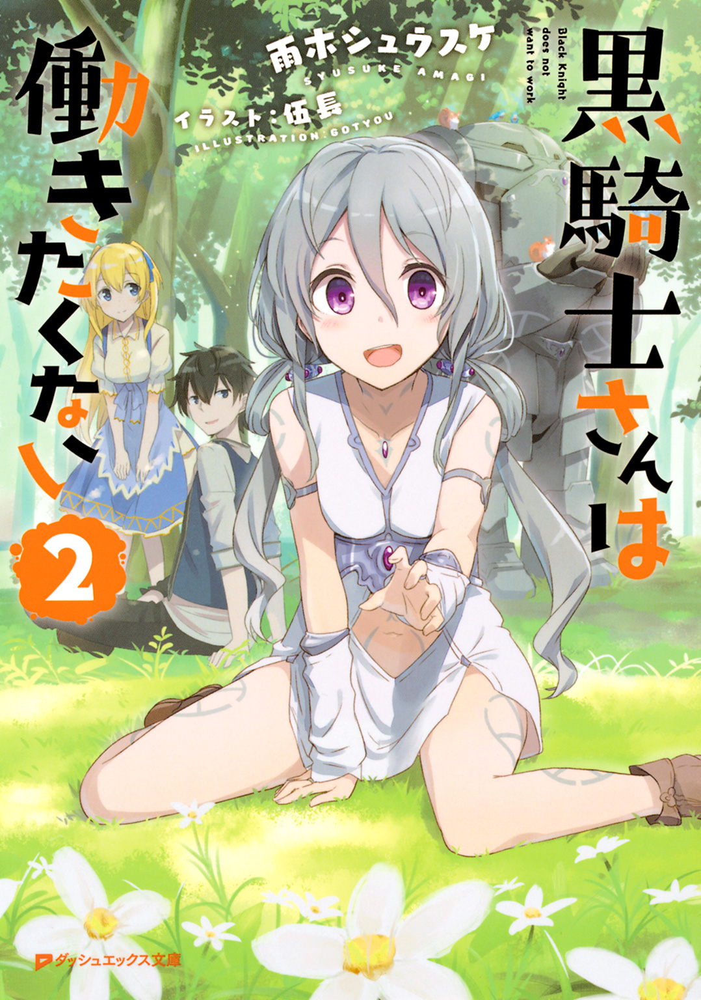
この本は縦書きでレイアウトされています。
また、ご覧になる機種により、表示の差が認められることがあります。
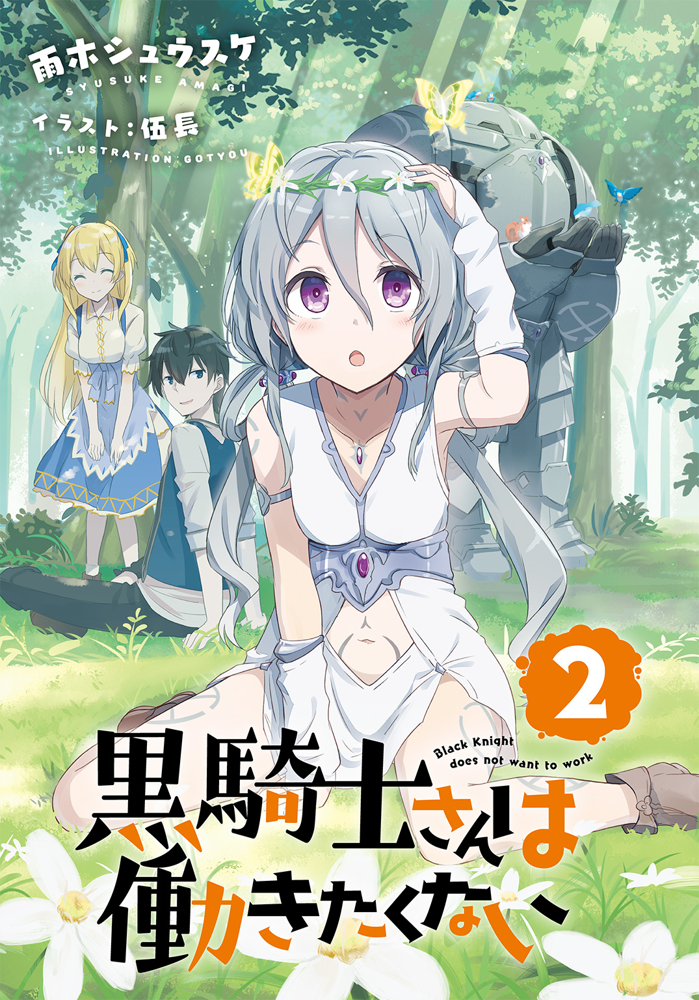
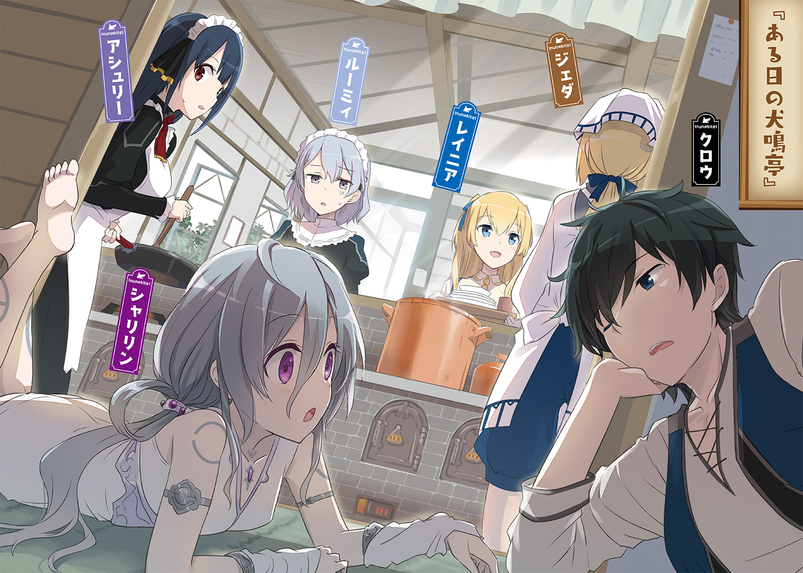
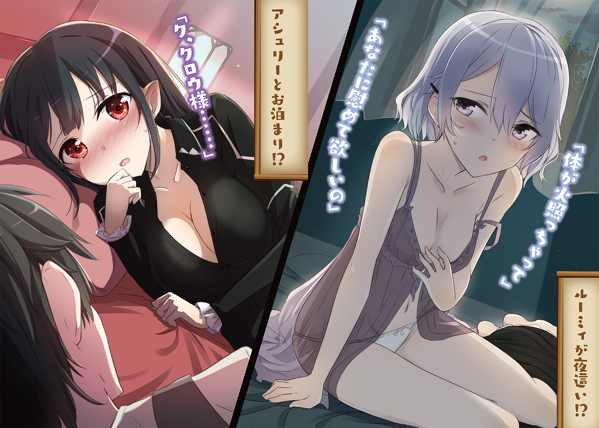
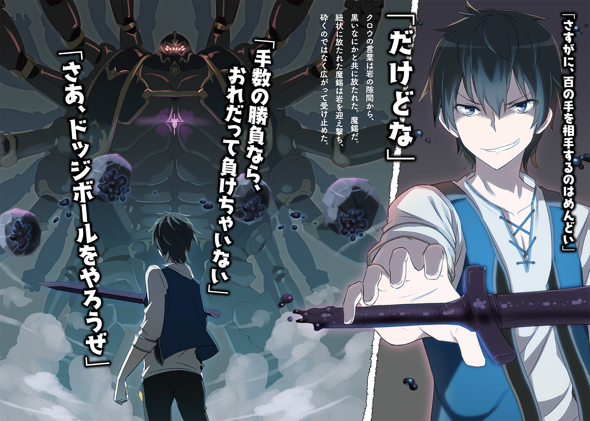
 ダッシュエックス文庫DIGITAL
ダッシュエックス文庫DIGITAL
黒騎士さんは働きたくない２
雨木シュウスケ
プロローグ 黒騎士さんはどこでも寝られる
森の空気は爽やかだ。
溢れんばかりの木々の香り、さんざめく小鳥の鳴き声、空から葉の色を透かして降り注ぐ陽光......森には人を癒す部分がたしかにあることを、この光景は教えてくれている。
だが、そこに響く人の声はまったく爽やかではない。
「だりぃ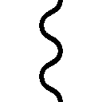」
言葉通りの雰囲気を惜しげもなく周囲に撒き散らし、猫背でだらだらと枯れ葉と木の根で歩きにくい森の中を進むのは、クロウという名の少年だ。
その両手には大きな布包みが二つ。さらに肩提げのバッグも二つ。どれもぱんぱんに膨らんでいて明らかに重そうなのだが、少年からは「重い」「しんどい」という雰囲気はなく、ただただ「めんどくさい」と呟き続ける。
寝ぐせだらけの黒髪に、半眼で表情にも力がない。だらしないという言葉がとても似合うのだが、獣道にもなっていない森の中で、その足取りだけは危なげがない。
「がんばってください。それ落としたら、おば様が怒りますよ」
それとは対照的に前を行く少女の声は爽やかだ。荷物らしい荷物はなく、ただ、手には道を切り開くための鉈が握られている。割烹着姿で鉈を片手に森の中を行く少女という姿には違和感がないではないが、後ろに従う少年のだらしなさと比較になって、その姿は森の爽やかさを具現化したようでもあった。
金髪の美しい少女の名はレイニアという。
その少女から放たれた「おば様」という言葉に、クロウは渋い顔をする。「おば様」の名前はジェダ。二人の居候先の家主であり、レイニアの叔母であり、獣人街に犬鳴亭という食堂を開いている女主人だ。
いま二人は、そのジェダに頼まれて届け物をするために、大森林を進んでいる。
神代の力によって獣人に認められた人間以外は入り込めない大森林だが、その力の恐ろしさとは対照的に、森の中は深い落ち着きを保ち、空気と水はとても美味しく、森の恵みは大森林内に存在する獣人街に多大な恩恵を授けている。
だがそれでも森の中が完全に安全というわけでもないので、少しぐらい社会に生きる生物らしく他人の役にたってみろと、クロウは荷物持ち兼護衛としてレイニアの後に従わされていた。
あくまでも、嫌々とだが。
「あいつまじでおれを三枚に下ろそうとするからな」
包丁を構えたジェダを思い浮かべ、クロウは顔をしかめる。
「わかってるなら怒らせないでください」
「うん。おれだってジェダを怒らせたくはない」
レイニアの言葉に、クロウだって従いたい。
従いたいのだが、そこにはクロウにとってとても難しい問題が存在するのだ。
「......だけど、レイニア。そうするとおれは真面目に働かないといけなくなるんだ」
「まぁ、それは大変」
真面目にそんなことを言うクロウに、レイニアは呑気に相づちを打つ。
「大変......？」
その後におかしなことに気付いて首を傾げた。
「働いてもいいんですよ？」
「やだね」
猫背のだらしない歩き方ながら、重い荷物をこんなに担いで森を危なげなく進むのだ。体のどこかに不調があって働けないわけではない。
レイニアの当たり前の質問に、だがクロウはそのだらしなさとは相反する断固さで拒否する。
「おれは、絶対に働かない。そう決めてるんだ」
そう。
クロウは決然たる意思で、断固たる姿勢で、敢然とした態度で決意しているのだ。
働かないと。
クロウという少年は、そういう、ちょっと残念な少年なのだった。
「まぁ、クロウさんはそれでいいんですけど」
そして、そんなクロウを受け入れている少女もまた、あるいはちょっと残念な少女なのかもしれない。
獣人街に血縁を持つレイニアには、自身に犬の獣人の血が流れているのだが、その姿には犬らしい部分は見当たらない。
だがそれでもレイニアは獣人と認められ、この大森林を出入りできる。
そして、クロウをこの森に招いたのはレイニアだ。
「うむ」
それでいいと言われ、クロウは満足げに頷く。
「でも、とりあえずこのお手伝いは終わらせましょうね」
「はぁ......めんどくせぇ」
「ほらほら、のんびりしてると迷子になっちゃいますよ」
「レイニアこそ、転けるなよ」
鉈で邪魔になる低木の枝や雑草を切り分けるのはレイニアなのだが、あまりそういう姿が似合わないので、思わず声をかける。
だが、レイニアはそんなクロウの心配を笑う。
「わたしはこの森を知ってますから。クロウさんこそはぐれないでくださいよ」
「わかってるよ」
そうしてまた、クロウはめんどくさいとため息を吐き、レイニアの後に付いていく。
そんなクロウの姿をちらりと見ながら、レイニアは内心で首を傾げる。
いましているお手伝いも、『働く』という範疇に入らないのだろうか？ と。
だが、そんな疑問を口にするのは野暮というものだろう。
クロウがヘソを曲げても困るし、働き者が好きなジェダは、働かないクロウをなんとか動かそうといつもイライラしているのだから。
レイニアが黙り、クロウも黙々とその後に従う。
大森林の緑は深い。
この森の端っこに存在する獣人街の住民たちがこの森に分け入り、所々に畑を作り、あるいは山菜を採り、あるいは狩りなどもしているのだが、森はそんなことおかまいなしに深い。
大森林に存在する木々の生命力はかなり強靱であり、そして守られている。
たとえば、人間の介入を拒むこの森に苛立ち、国境に接する貴族が腹立ち紛れに火を放ったとしても、突如として天候が悪化して大雨が降って火を消し止めるなどよくある話だ。ついでとばかりに命令をした貴族が大雨にぬかるんだ地面に足を取られて転んだだけなのに、ありえないような大怪我をしてしまうなんていう話もまた珍しくない。
同時に、燃えた木々は一週間もすれば草木によって覆い隠され、元の姿を取り戻している。
そんな力の弊害と言えばそうなのだが、この森では獣道でさえあっという間になくなってしまう。
そのため、大森林を自由に歩くにはコツが必要になるのだが、あいにくとそのコツをクロウはまだ身につけていない。
だから、レイニアを見失うととても危険なのだが......。
「ん？ あれ？」
気が付くと、レイニアの姿がなかった。
「言ったそばからはぐれるのかよ」
論じるまでもなくはぐれたのはクロウの方なのだが、まるでレイニアがはぐれたかのような言い方だ。
しかたなく、クロウは足を止めた。
言い方はどうあれ、はぐれたのが自分であることは承知している。
「こういうとき、無駄にうろつくのは危険だよな」
大森林は普通の森とは違うのだ。案内人なしに無闇に歩いてもレイニアと合流できるとは思えない。
となれば、目印になりそうな場所でじっとしているに限る。
きょろきょろと見回し、クロウは少し先に巨木を見つけて、そこに向かった。クロウの背よりも高い位置まで苔生した。なんとも威厳のある巨木だ。
なにより、苔の具合が出来のいい絨毯のようで心地よい。
「よし、そうと決まれば、寝るか」
果報を寝て待つには最適な場所だと決めると、クロウは枕に良さそうな根を見つけてごろりと転がった。
同時に、寝た。
寝るのは得意だ。疲れてなくても寝られるぐらいの特技がなくて、どうして引きこもりのヒモ生活ができるだろうか。
「呑気なのか剛胆なのか、難しいところよな」
だから、そんな声が聞こえてきたところで、クロウは起きない。
ジェダのように包丁で刺してでも起こすぐらいの気合があれば別だが、ただ声をかけられたぐらいで起きるものではない。
「クロウ、起きよ」
「ＺＺＺ......」
だが、声の主はそこまでする必要はないと思っているのか、ただ声をかける。
「起きよ」
「ＺＺＺ......」
起こそうとする。
「起きよ」
「ＺＺＺ......」
なおも、起こそうとする。
だが、クロウは起きない。
さすがにこれには声の主も呆れたようだ。
「これはまいった。まさか我の呼びかけに答えぬか」
「ＺＺＺ......」
「ここまで強情な人間は初めて見るの」
「ＺＺＺ......」
「まあよい。どれだけ強情を張ろうと、我とこの森に住む者との契約からは逃れられぬ。働いてもらうぞ、黒騎士よ」
「ぐぐぐ......」
声の主がそう言って笑う。
まるでその笑い声に抗えないなにかを感じたかのように、クロウの顔が歪む。
「クロウさん？ クロウさん！」
「ん？ んががっ!?」
呻いていると、聞き慣れた声が届き、肩の辺りを叩かれた。
「変ないびきは良いですから、こんなところで寝ないでください」
「はっ！」
眠りから覚めて起き上がると、レイニアと知らない誰かが側にいた。
「......ああ、びびった」
知らない誰かはともかくとして、クロウは悪夢を見たと額の汗を拭う。
「どうしたんですか？」
「誰かにむりやり働かされそうになったんだ」
「まぁ......」
「なんて恐ろしい夢なんだ」
ヒモにして引きこもりニートであることに徹しようとするクロウを働かせようとは......。
「潜在的な恐怖心が夢に現れたとでもいうのか？ くそっ」
クロウがそんなことを呟くと、さすがにレイニアも呆れて言葉もない。
「ははは。それはもしかしたら圓樹王からのご下命かもしれませんね」
「あんたは？」
いきなり笑い出した知らない誰かをクロウは見た。
鹿の獣人だ。
見間違いようがないくらい、鹿の獣人だ。
そして、美人だ。
貫頭衣に何枚も布を巻き付けたような服からは女性らしい曲線が窺える。
なにより、頭部の鹿頭が美しい。
思わず「おお......」と唸っているとレイニアが苦笑して紹介してくれた。
「キュライアさんですよ」
「ああ、この人が」
ジェダに頼まれたお使いの届け先だ。
キュライアも興味深げに目を細め、クロウを見ている。
「初めまして。あなたが噂の黒い人か」
「は？」
思わぬ言葉に、クロウとレイニアは二人とも反応できなかった。
「うーん、たしかに黒髪黒目で黒っぽい服を着ているけど、黒い人と呼ぶほどではないわねぇ」
「あの......黒い人って？」
おずおずとレイニアが尋ねる。だけど、キュライアは自分の考えに浸って、聞いていなかった。
「はっ！ もしかして腹黒ということなのかしら？」
「いや、そういうことじゃないんだけど......まぁいいか」
明らかになにかを勘違いしている。クロウは訂正しようとして、やめた。
めんどくさかった。
「いや、だめです！」
それをレイニアが止めて、なんとか説明をするのだった。
クロウはまぁ一応、ただのヒモではない。普段は犬鳴亭で引きこもり、ニートを気取っているが、それでも一応、立派な前歴を持っているのだ。
それが黒騎士というものだ。
大森林と国境を接するラスティーユ新王国の前身である王国を打倒し、帝国を打ち建てた皇帝の側近、ナンバー２の権力をも持っていたと言われるとともに、魔物を操る力では皇帝に比肩し、剣の達人、王都を陥落させた戦の名人でもあると、いろいろと盛りに盛られた伝聞が流布する人物......それが黒騎士だ。
常に黒い鎧を纏い、その姿を世間に晒したことがなかったため、中身については諸説いろいろとあるが、その中には十代の少年なんてものはない。
だが実際には十代の少年で、いまはこうして皇帝の娘であったレイニアに養われている身だ。
ヒモであることはとりあえず言わず、レイニアは説明した。
「ははぁ、黒騎士」
「そうなんです」
なんとか納得してくれたようで、レイニアはほっとする。
「それで、やっぱり腹黒なんですか？」
「そうです」
「違います！」
クロウが即応で頷くのだが、レイニアが慌てて訂正する。
「クロウさん、変なこと言わないでください！」
「いや、そっちの方がおもしろそうだと」
腹黒だと言われれば、内心ではそれに相応しいことはずいぶんしたなぁという覚えがある。皇帝の部下として戦争もしたし、王国の貴族どもをだまくらかしもしたし、味方面した隣国の連中には最終的に苦い顔させてやった。
だけどそんなことを言ってしまうとレイニアが怒るか困るかしてしまうだろう。
だからクロウはただ、「てへへ」という顔をしてみる。
ルーミィなら「キモい」と言っただろうが、レイニアは「もう」と怒るだけだ。
「ははは、面白い人たちだ」
そんな二人を見て、キュライアは呑気に笑う。
なかなか大雑把な性格なのかもしれない。
だが、そんなキュライアに笑われて、レイニアは恥ずかしそうだ。
「もう。キュライアさんは圓樹王の巫女をなさっている方なんですよ」
「圓樹王？ ああ、この森の神様だっけか？」
ついさっきもキュライアがその名を口にしていた。
「この森を人の権力が及ばぬ地と定めた方です。わたしはその方との仲介役をしています。片手間で」
「キュ、キュライアさん!?」
「本業は野生の賢者をしています」
「野生の賢者かぁ」
「はい」
さらりと片手間なんて言葉を付け足すあたりに、なんだか親近感を覚えた。
「自分で野生って言うのって、どうなん？」
「でも、野に生きてますから野生で良いと思うのですよね。まぁこうして、たまにジェダが差し入れ持ってきてくれたり、町長さんが神事の報酬として必要なものを運んでくれたりしてくれますけど」
「ていうか、賢者ってなんなんだ？」
「自分の知りたいことだけ調べてる趣味人ですよ」
「ああ、なるほど......いいな」
「いいでしょう」
「じゃあおれも今度から賢者を名乗ろう。グータラの研究とか、夢の研究とか、なんかそんな感じで」
「いいんじゃないですか？」
「あれ？ これわたしだけがツッコミですか？」
冗談抜きで賛同するキュライアに、レイニアが愕然とする。
「すいません、キュライアさん、もう帰っていいですか？」
「いやぁ、さすがにこんなに暗いと無理じゃないかな」
疲れた顔のレイニアに、キュライアはあっけらかんと空を指さした。
「え？ あらっ！」
周りが明るいから気付くのが遅れたようだ。
空を見ると、すでに太陽は沈んでいた。
そして......その明るい理由だが、クロウがベッドにしていた苔や周囲を飛んでいる虫たちが光を放ち、周囲を明るく照らしているのだ。
「この辺りは発光する苔やら虫やらが良く集まるんだ。圓樹王の寝床と呼んでいるのだけどね」
「はぁ、ここが......」
レイニアは知っているのか、感心した様子で改めて周囲を眺めている。
「神の寝床か。どうりで良い気分で寝られたと思った。まぁ、最後には変な夢を見たけど」
「神様に怒られたんですね」
機嫌を直したレイニアの口が軽くなっている。
「神様も狭量だな」
「うーん。ベッドを勝手に他の人に使われたら、誰だって怒るんじゃないですか？」
まぁ、それもそうかもしれない。
「では、ベッドを借りたついでにお手伝いをよろしく」
いきなりキュライアがそう言うと、クロウが運んできた荷物を開いた。
匂いがしていたから予想はついていたが、中味は大量の料理とガラスの瓶や竹の水筒に入った飲み物だった。
キュライアは自分が持っていた荷物も開く。そこにあったのは飾り気のない陶器だったり同じく質素な木製の台だった。
「うん、ちゃんと二人のもあるわね。さすがジェダ」
キュライアは目を細めると料理を手早く皿に盛っていく。すぐにレイニアはキュライアを手伝うのだが、クロウはすることがない。よいことだとダラダラとする。
気が付けば、祭壇のようなものができあがっていた。
「さて......」
そう言うと、キュライアはいきなり自分の服に手をかけた。
ためらいもなく服を脱ぎ始める巫女兼野生の賢者に、クロウもレイニアも目を丸くする。
「おお......」
「だめです」
立ち直ったレイニアがクロウの目を隠す。
衣擦れの音に迷いはなく、手慣れている感じだ。
服を脱ぎ、別に用意した服に手早く着替える。本当に慣れている音だ。きっとこういうことを何度もしているのだろう。
「あら？ 目隠しなんかいいのに」
キュライアの笑い声が聞こえて、目隠しが外れる。
彼女の格好は大きく変わっていた。白と赤の祭儀衣装だ。
なるほど巫女だ。
巫女の衣装となったキュライアは巨木から枝を一本取ると、それを皿に満たした液体に浸し、振るった。
枝から散った液体が匂いを撒く。酒だ。
その酒の匂いが宙を躍る光虫の動きを変えた。酒が散った苔の上へと降りていく。
酒を吸った苔もまた光を増し、さらに遠くから光虫が引き寄せられていく。
キュライアはその枝を振り回して舞う。枝から振り撒かれる酒の匂いに光虫も振り回され、それが舞っているように見える。
光を回して、巫女は舞う。
「はぁ......」
レイニアが感嘆の息を漏らして固まっている。
「これはなかなか」
「わたしも初めて見ました」
「あ、お弁当食べちゃってていいからね」
踊りながらキュライアが言う。
「え？ でも......」
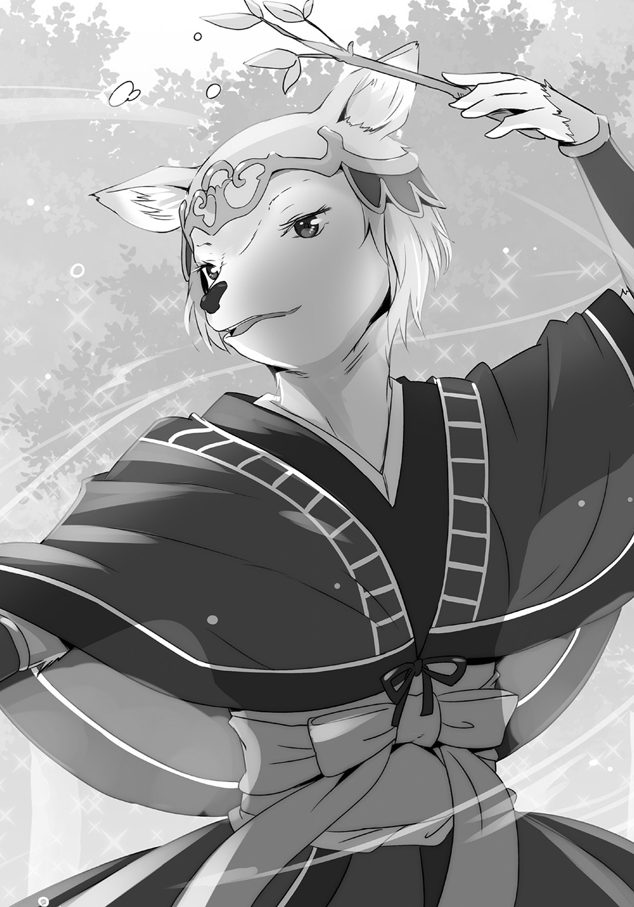
いい加減、空腹だったのでありがたい申し出だったのだが、レイニアは躊躇する。
「あなたたちは圓樹王の代わりにそこで接待を受ける役なの」
「ああ、なるほど。身代わり役か」
「そういうこと」
「それなら遠慮なく」
クロウは皿に並べられた料理に手を付ける。レイニアも最初は遠慮していたが、やがて楽しみ始めた。
あいにくと、酒は飲ませてもらえなかったが。
「こういうのもたまには良いですね」
「まぁなぁ」
レイニアがしみじみと呟き、クロウも頷く。
「お手伝いしたから見られたんですよね」
「そうだなぁ」
......と、考えてニヤリと笑う。
「なら、これからもレイニアにはこういう良い機会はたくさん巡ってくるってことだな」
クロウの労働意欲にそれとなく熱を注ごうと思っていたレイニアは、機先を制されて苦笑する。
「おれは、レイニアが食っちゃ寝させてくれたら、それで十分だぜ」
「......まぁ、それでもいいんですけどね」
「なんだよ？ おれを養ってくれるって約束だろ」
「ええ。それは問題ないんですけど」
「なにか問題か？」
「おば様に怒られないぐらいにはやる気を見せてくれるとみんなの心配が減るんですけど」
「あ、はっはっはっは......そういうのは余計なしんぱ......」
と、クロウの言葉が途切れ、笑みが消えた。
「どうかしました」
「......なにか来る」
クロウは中腰になり、光の群れるキュライアの向こう側に意識を注いだ。
いまだに光虫と舞うキュライアはクロウの変化に気付かない。一種の催眠状態なのかもしれない。
とにかく、踊る巫女の向こう側に意識を集中していると、やがてそれが聞こえた。
ガシャンガシャンと......それは金属のすれる音。鎧を着たなにかが歩いてくる音だ。
そして、すぐに光虫の光が音の正体を浮かび上がらせた。
土壇場でもレイニアは動じない。口に手を当てた姿はとても軽い驚きだった。
「まぁ、でっかい騎士さん」
「いや、あのサイズで騎士とかないだろ」
クロウが冷静にツッコむ。大きさは平均的な大人の二倍はあるかもしれない。
「オークの重装歩兵ってよりは、アイアンゴーレムって考える方がまともか？ いや、そっちもレアだな」
そんな魔物が大森林に迷いこむようなことがあるのだろうか？ 帝国の残党がまだこの辺りにいるのか？ だとしてもこの間みたいな奴隷商に使われるような魔錫使いの方がレアだから、あるいは本当にただの迷子かもしれない。
大森林というのは人間の手が届かないだけに魔物にとっては良い逃げ場になっているのかもしれない。
クロウの声が聞こえたのか、アイアンゴーレムがガチャガチャと速度を上げて近づいてくる。
「お、やるか？」
思わず身構え、歩き出す。戦うにしてもキュライアの側というのはまずいだろう。
そう思っていると、クロウの前にまで来たアイアンゴーレムがいきなりその腕で大きなバッテンを作った。
「ブッブー！」
その姿からはまるで想像も付かないようなかわいらしい声が響く。
そしていきなり、体格と比べても大きめな兜が跳ね上がると、そこからなにかが飛びだした。
「アイアンゴーレムかと思った？ 残念シャリリンちゃんでした！」
「......はぁ!?」
クロウも声を上げてしまう。
そこから現れたのは色素が抜け落ちたような少女だった。
「びっくりした？」
鎧の中から飛びだした灰色の美少女はにっこりと歯をむき出して笑う。
クロウは、この子を知っている。
彼女の名前はシャリリン。かつて、クロウの部下だった。
そして、自分のことをゾンビだという少女だ。
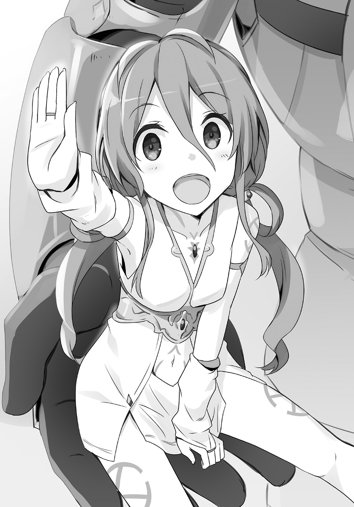
腐っても美少女 01
人が簡単には入れない大森林には獣人たちの集う街、獣人街がある。
その獣人街にある一軒の食堂、犬鳴亭。
『目は口ほどに物を言う』ということわざがあるが、ジェダのいまの目付きはまさしくそれに当てはまると、レイニアは思った。
「また増えた」
ジェダに代わって言葉にしたのはルーミィだ。姫をしていた頃のレイニアの侍女として押しかけてきた彼女が言う言葉ではないだろうと思うのだが、そんなツッコミを彼女にできるような人物は、彼女の言葉を聞いてはいなかった。
クロウたちはキュライアのところで一泊して、いま帰ってきたところだ。
食堂の前で鎧を脱いだシャリリンは薄い白の貫頭衣のようなものだけになってしまう。靴も履いておらず裸足なものだから、なんだか少しかわいそうな気持ちになったのだろう。アシュリーが慌てて店の奥に行き、履き物を取ってきてくれた。
「ありがとう！」
「ど、どういたしまして......」
生気を感じさせない白い顔で太陽のような笑顔を浮かべられ、アシュリーはどうしていいのかわからない顔でクロウに助けを求めた。
「あの......クロウ様、こちらの方は？」
「シャリリンだ」
「シャリリンちゃんです！」
「あ、はい。どうも......アシュリーです」
びしっ！ という感じで手を上げるシャリリンにアシュリーは呑まれ気味だ。
「もしかして、この方も魔物なんですか？」
蠟のように白い肌に灰色の髪、目の色も薄い青で唇も青い。その肌は、触ればとても良い肌触りをしていそうなのに、不健康そうだと感じてしまうのは彼女の色が原因なのだろうか。
「ああ、王都攻略までおれの部下だった」
「そ、そうなんですか」
「ていうか、死んだと思ってた」
「死っ！」
「どっこい生きてました！」
思わぬ言葉に目を丸くするのだが、シャリリンはあくまでも元気だ。
「いや、お前が生きてるってなんかおかしいだろう」
「あっ、そうかも。あははははははは！」
「だよな、あはははははは！」
そんな風に笑いながら、二人は厨房の奥にある休憩室に向かった。もはや定位置となった卓袱台そばでごろりと転がるクロウに対し、シャリリンは畳を物珍しそうに撫でている。
「そんで......それならいままでなにしてたんだ？」
「ずっと寝てた！」
「寝てた!?」
「そう。起きたら土の中だったからむしろびっくり」
「ああ、それはおれのせいだ。すまん」
「ううん。でも、埋めてくれたおかげで、ほら、すっかり元通り！」
「まぁ............良かったな！」
「そうそう！ 終わりよければ全て良し！」
そうして再び笑い合う。
その笑い声をアシュリーは驚いた顔で聞いていた。
驚きすぎて、声も出ない。
「あいつって、あんな笑い方するんだ」
隣でルーミィが呟く。
「ですよね！」
普段は苦手なルーミィだが、このときばかりはそんなことは忘れていた。
「暗い方ではないですけど、普段から大きな声を出されたりはしないですよね」
「近いから」
興奮するアシュリーに今度はルーミィが引いている。主人の新たな一面に興奮して、苦手意識も忘れている。
「それなのに、シャリリンさんにはあんな......そんな......」
「とりあえず落ち着きなって」
「は、はい......すいません」
「別に付き合ってるってわけでもないでしょうに」
「付き合ってる!!」
「ああ、ごめん。言い過ぎた。はい、ドウドウ」
「そ、そうですね。スーハー......」
興奮して顔が赤くなっていることに気付いたのか、アシュリーは深呼吸を始めている。
しかし、アシュリーたちのそんなやりとりが聞こえていたのかどうなのか？
「そういえば、あの約束は覚えてる？」
シャリリンがそんなことを言うのだ。
「ああ......もちろん覚えてるぜ」
「ここでならいいかな？」
「そうだな......いいかもしれないな」
見つめ合って、そんなことを言う。
「約束ってなんですかぁぁぁぁ！」
「わたしに訊くなぁぁぁぁぁぁ！」
アシュリーに肩を揺さぶられ、ルーミィは悲鳴を上げる。
「それにっ！ なんだかっ！ 距離感も近いし！」
「ああもう、うるさい！ 恋人なんでしょ」
「恋人！」
その言葉にアシュリーは顔を引きつらせ、そしてその場にへなへなと崩れていった。
「おい、どうしたの？」
いきなりの脱力にルーミィも驚くのだが、その顔を見て呆れる。
「もしかして、気絶してるの？」
「............」
「うわっ......マジだ」
気絶までするアシュリーに今度はルーミィが顔を引きつらせる。
「まったく......あいつのどこがいいのやら」
言いつつ、ルーミィはクロウを見る。
「あははは、こいつ」
「うふふふ」
そんな風に笑い合っている。
一見すれば、あるいはそれは恋人たちのじゃれ合いに見えなくもない。
「......なんか、キモイ」
だけど、ルーミィの感想はただそれだけだ。
あの男のなにが良いというのだろう？
どうにも、ルーミィには理解できない。
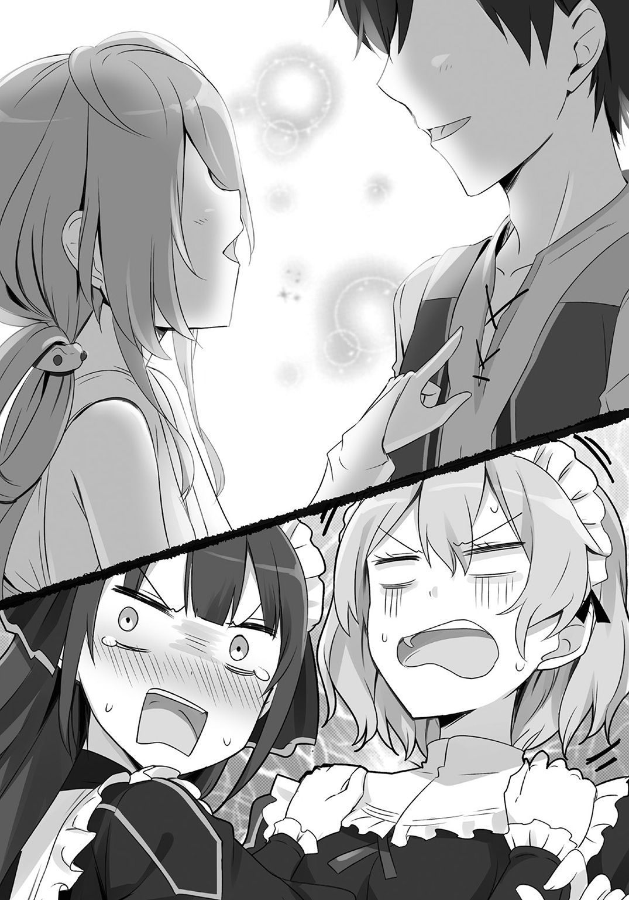
（もしかして、レイニア様も？）
心配になってそちらを見る。
話に聞く限りでは昨晩にはすでにシャリリンと会っているのだ。なら事情も少しは聞いているはずだし、アシュリーのように憶測に踊らされるようなこともないだろう。
いや、そもそもクロウ相手にそんな感情を抱くようなことはないのだ。
しょせんは臣下だ。
（臣下の恋愛事情を気にするなんて......）
「............」
なんだかそわそわしているように思えるのは、気のせいだろうか？
（勘弁して）
ルーミィとしては頭を抱えたくなる。
「ふわらばっ！」
「うわっ、びっくりした！」
......と、突然にアシュリーが奇声を上げて復活する。
「そ、それで！ 一体どうなっているのでしょう!? あの二人の関係は!?」
「いや、だからわたしだって帝都からのあいつしか知らないし」
ルーミィがレイニアの侍女として雇われたのは帝国が興ってからだ。その前のことはわからない。
「そ、そうか。そうですよね」
それはアシュリーも同じだ。
納得すると、二人はレイニアを見た。
「え？ え？ わたしですか？」
「はい。レイニア様なら」
「でも、わたしもクロウさんとちゃんと知り合ったのは帝国ができてからですから」
レイニアは父親が王国を打倒して皇帝を名乗るまで、この獣人街に預けられていた。それまでの間にも何度か父親は訪ねてきたが、その頃はクロウを紹介されていなかったし、父自身もなにをしていたのかを語ることはなかったので、彼がどういうことをしていたかなんて知るはずもない。
「そうなのですか......」
レイニアまで知らないとなるともうこの場ではどうしようもない。
「............」
「............」
レイニアとアシュリーは楽しそうに話す二人を無言で見つめる。
「気になるなら本人たちに訊けばいいじゃないですか」
レイニアまでアシュリーの仲間になってしまっていることを嘆き、ルーミィは肩を落として投げ槍に言った。
「そ、それはそうですね」
その言葉に勇気をもらったのはアシュリーだ。
「クロウ様のメイドとしてご主人様の交友関係をチェックしなければ！」
「メイドにそんな権限はないと思うけどね」
ルーミィのそんな言葉は聞こえない。アシュリーは拳を握りしめ、二人のいる休憩室に向かった。
「あの、クロウ様」
「うん？」
「シャリリンさんは魔物なのですか？」
「そうだよう」
シャリリンがふらふらと体を揺らしながら答える。
「それで、どのような？ わたしのように人に近い種の方なのでしょうけれど......」
「ああ、こいつは......種族って言うべきなのか？」
「え？」
「古き魔法使いの人造物っていうやつだな。あえて言うなら......」
「ゾンビ！」
シャリリンが元気に答える。
次の瞬間、雷は思わぬ所から落ちた。
「ゾンビだって！」
叫んだのはジェダだ。
犬鳴亭の主人であるジェダも、クロウの客がこれからどうするつもりなのかと聞き耳を立てていたのだが、その名称を聞いて黙っていられなくなった。
ジェダが怒っているのは明らかで、女性陣だけでなくクロウまで彼女の怒りに息を呑んだ。
だが、ここに一人、状況がわかっていない者がいる。
「ゾンビです！」
シャリリンだ。
またも元気に手を上げる灰色の美少女に、ジェダは怒鳴った。
「食いもん扱ってる場所に腐りもん持ってくるんじゃないよ!!」
雷鳴の如き怒声の前にはクロウも為す術なく、二人は店から追い出されるのだった。
†
「いてて、ひどい目にあった」
「まさしく、雷が落ちた、だね！」
転がるようにして犬鳴亭から追い出されたクロウは自分の頭を撫で、シャリリンは陽気に笑った。
「ん～、あの調子だとあそこに居候は無理だな」
「大丈夫だよ。シャリリンはどこでも暮らせるよ」
「まぁ、そうなんだけどな」
「あのぅ......」
追いかけて犬鳴亭を出てきたアシュリーが戸惑いながら訊ねる。
「もしかして、寝泊まりするところがないんですか？」
「あ、大丈夫だよ。どこでも寝られるから！」
「だめですよ！ 女の子なんですから！」
平気な顔でそんなことを言うものだからアシュリーは真っ青になって叫んだ。
「こういうとき、男ならいいのかって訊きたくなったりもする」
ぼそりとクロウが呟くのだが、さすがにこのときばかりはアシュリーも無視した。
「ど、どうにかしないと......」
女の子が野宿するなんてとんでもない！
必死に考えるのだが、獣人街に来て日が浅いアシュリーにとって頼るものというと背後にある犬鳴亭しかないわけで......。
いや、もう一つ。
「そうだ！ ミアルちゃんなら！」
彼女は獣人街の町長の娘だ。彼女から町長に頼めば......。
そう思った瞬間、なにかが飛んできてシャリリンの頭に当たった。
「ばいんっ！」
シャリリンが奇妙な声を上げる中、弾き返されたなにかはクロウへと向かい、そして片手でキャッチされる。
それは土で汚れたボールだ。
「うわぁ、やった！」
子供の悲鳴が聞こえてきてそちらを見ると、獣人の子供たちが顔を青ざめさせている。どうやら通りでボール遊びをしていたようだ。
「ごめん！」
そしてその中にはミアルがいた。獣人である少女は猫の耳を振るわせて軽快にこちらにやってくる。
「大丈夫だった？」
「気をつけろよ」
「うん！」
クロウがボールを投げ返すとミアルは子供らしく明るく頷く。
「ごめんね、お姉ちゃん......っ！」
そして、ボールをぶつけてしまったシャリリンを改めて見て、言葉が止まった。
息を呑んで固まるミアルにアシュリーもそちらを見て、同じように息を呑む。
「シャリリンさんっ！」
灰色の少女の首は曲がっていた。いや、曲がっているだけでは済まない。首の一部が裂け、見えてはいけないものが見えていた。血が流れていないからなのか、なにがどうなっているのか理解することを拒ませた。
「ふふっ！」
そんな中、シャリリンは横向きになった顔のままで笑う。
そんなの怖いに決まっている。
「うひっ！」
ミアルが悲鳴を上げて跳び下がった。
「あはははははははっ！」
ミアルの反応が嬉しいのか、シャリリンはさらに笑ってミアルに向かって走っていく。
「ひぎゃあぁ！」
ミアルは絶叫を上げて全力で逃げ、シャリリンはさらに高笑いで追いかけていき、異常に気付いた他の子供たちも蜘蛛の子を散らす勢いで逃げていった。
「............」
アシュリーは啞然とするしかない。
一方、クロウはといえば......。
「やっぱ猫なんだな」
なんて関係ないことを呟いている。
「え？」
「ほらっ、ミアルのやつ、びびったとき瞳孔が縦になっただろ？」
「そ、そんなの見てないですよ！ それより、シャリリンさんが！」
「ゾンビなんだから大丈夫に決まってるだろ」
「いや、そうかもですけど。いえ、そうなるとミアルさんが」
慌てるアシュリーに対してクロウはあくまでも落ち着いている。
だけど、アシュリーは落ち着いてなんていられない。
（でも、ゾンビって言ったら死んでるのに動いてて、人を襲って......）
そして伝染する。
ミアルたちに嚙みついてゾンビにさせて、増え続けるゾンビによって獣人街が滅んでしまう。
そんな未来を考えてしまって、アシュリーはぞっとした。
だけど、クロウは慌てていない。
「あれは、子供と絡めてテンションが上がってんだ。もうちょっとしたら帰ってくる」
「いや、だとしたら......ええ？」
思わぬ返答に、アシュリーは混乱の末に脱力してしまった。
助けを求めて背後を見るのだが、レイニアたちはジェダに言われたのだろう昼時に向けての仕込みに忙しそうに動き回って、外の様子に気付いていない。
つまり、この後のことはアシュリーに一任されてしまったのだ。
「ええ......無理ぃ」
絶望的な気持ちでクロウの隣で立ち尽くすアシュリーだった。
待っているとシャリリンは本当に帰ってきた。
口元が血で汚れているわけでもないし、どこからか悲鳴が聞こえてくるわけでもない。
「ふう、いい汗かいた」
爽やかに額を拭っているが、アシュリーが見る限りまったく汗は流れていない。
「いや、お前は乾き物だろう」
「そうだった！」
そうしてまた笑い合う。
そのノリにはついていけないけれど、シャリリンの首が元通りになっているのはさすがに見逃さない。
「まっ、さすがに路上で寝転ぶのは行儀悪いから、どっか行こうぜ」
「クロウっていつからそんなに寝るのが好きになったの？」
シャリリンが首を傾げる。
「前は、ずうっと動き回ってたよね」
「まぁな」
クロウは頷くと、思わせぶりに空を見あげた。
「おやじさんに付き合って働きすぎたのさ。その反動ってやつだな。というわけで、いまのおれはダラダラ期に突入したんだ」
「へぇ......」
「もうこのまま百年ぐらいはダラダラするだろうな」
「それはいいね」
「いえ、人間ってそんなに長生きできないですから！」
素直に信じそうになっているシャリリンに、アシュリーは思わずツッコミを入れる。
「おお......そうだったっけ？」
「そうです！」
「そうかぁ......シャリリンって、もう三百年ぐらいゾンビやってるからわかんなくなったな。そこんとこ」
「さ、三百年ですか？」
「あ、たぶんだけどね。シャリリンが生きてた頃の国の名前を冒険者の人に言ったら、それって三百年前の国だって教えてくれたの」
「そうなんですか」
「あっ、でもそれを教えてもらってからどれくらい経ったんだろ？」
「え？」
「うん、よくわかんない！」
朗らかにそう言われて、アシュリーは言葉もない。
「あの......では、クロウ様とお知り合いになられたのはいつ？」
その質問に答えたのはクロウだ。
「ああそれは、おれがおやじさんとまだ世界中をうろついていた時期にダンジョンで会ったんだ」
「ダンジョンで？」
「そうそう！ シャリリンがいたダンジョンにクロウたちが来たんだよね」
「そういえば、前のときも最初はあれを見てアイアンゴーレムかと思ったんだけどな」
「あれ？」
クロウが後ろを親指で示すので振り返ってみると、巨大な鎧がついてきていて驚いた。
「あ、シャリリンの鎧は勝手についてくるからほっといてあげて」
「ほっとくって......」
「シャイだから。あんまりかまわれたくないの」
「シャイ!?」
鎧がシャイってどういうことだろう？ わけがわからないが、重要なのは勝手に動く鎧ではない。
「魔錫鬼王は完成してたんだけど、まだ火と水の大陸への転移門を見つけてないときだったから、そこら中のダンジョンにもぐって魔物をスカウトしてたんだよ」
「そういうのは良くわかんないけど、シャリリンに外出てみないかって言ってくれたのはクロウが初めてだったからうれしくてオーケーしたんだ」
「まっ、こいつをダンジョンに縛ってた魔法を解除したのはおやじさんだけどな」
「でも、すぐに一緒にはならなかったから、たまにダンジョンの外に出て散歩するぐらいだったけどね」
「え？ あ、はぁ......なるほど」
と、まぁこんな風に矢継ぎ早に話すものだからアシュリーは少し混乱した。
「決起からはおれの直属部隊として動いてもらった。あの鎧を着てると巨人族も真っ青の馬鹿力だからな。いろいろと助かったぜ」
「へへん」
胸を張るシャリリンの姿はかわいらしいのだけど、クロウが素直に称賛しているのは、なんだか............むっとする。
「クロウ様」
「あん？」
「わたしは、役に立ってますか？」
必死な形相のアシュリーに、クロウも思わず答えにためらう。
「クロウ様......？」
「あ、ああ......役に立っているぞ」
「そうですか......よかった」
「だからこれからも、おれを養ってくれな」
「はいっ！」
役に立っていると言われて、アシュリーは頰を赤らめて返事をする。
それではだめだと気付いたのは、それからすぐだった。
「さて......これからどうする？」
街外れにまで辿り着いて、クロウは落ち葉のクッションの上に寝転がった。この辺りは落ち葉を集めて腐葉土を作っているのかもしれない。土の匂いが強かった。
クロウはそんなことおかまいなしに落ち葉の中に沈み込んでいく。放っておくとこのままここで眠ってしまいそうだ。
アシュリーは止めたいけれど、シャリリンのことが解決しなければクロウが帰ることも許されないのではないかと心配で、それどころではない。
「ふうん......」
そのシャリリンは、深く積もった落ち葉を興味深げに眺めている。
「あの、どうしました？」
「ここ、いいかも」
「え？」
「良い感じの湿気じゃない？」
「湿気？」
「ここなら、育てるのに良いかも」
「あの、育てるって？」
一人でぶつぶつ呟くシャリリンに、アシュリーはおそるおそる訊ねた。
「あ、うん。シャリリンはキノコの栽培もしてるんだけどね」
シャリリンは後ろに控えていた鎧を手招きした。
「ちょっと見せたいんだけど。え？ だめ。いいじゃんちょっとだけ。ええっ！」
シャリリンがなにかをしようとしているのだけど、鎧が身振り手振りで嫌がっている。
「もうっ！ ケチだなぁ。仕方ない」
言うと、シャリリンは鎧の襟元から頭を突っ込み、なにかを取り出そうとしている。
「ていやっ！ これっ！」
勢いよく鎧の中から頭を引き抜いたシャリリンが持っていたのは、本当にキノコだった。茎は長く太く、笠は開いていないが立派な楕円を形作っている。白と黒で配色されたキノコだ。
「な、なんで鎧の中にキノコが」
「え？ 昔からびっちり生えてるよ」
「昔からっ!!」
仰天するアシュリーにクロウが冷静に説明を始める。
「ああ......たぶんだけどな。そのキノコは用途があってそこに生えてるんだと思うぜ」
「用途って、どんな？」
クロウは少し唸ると言葉を選ぶ様子で説明した。
「んん......シャリリンと鎧とのサイズ合わせだったり、緩衝材だったり、倍力装置的な働きもあるんだと思うんだよな。菌糸が筋肉の役目をしてるはずだって、おやじさんは言ってた」
「はぁ......」
菌糸が筋肉代わり？ よくわからない。
アシュリーが首を捻っていると、シャリリンも説明に加わった。
「そうそう！ 強い冒険者なんかと戦うときは、キノコからぶわっとぬめぬめしたのが出てくるんだよ」
「ぬめぬめ！」
「耐衝撃効果を期待してんのかなっておれは思うが、おやじさんはキノコから出てくるムチンには魔法を減衰させる効果があるって言ってたな。まっ、両方の効果を兼ねてたんだろうって推測だ」
クロウがそう説明しているのだが、アシュリーの耳には届いていない。
アシュリーの頭の中では鎧の中で大量のキノコに囲まれて、ぬめぬめとした粘液に塗れたシャリリンの姿が再現されてしまっていた。
（なんだろう？ おかしなことはないはずなのに、なにか変に思ってしまう）
よくわからなくてもやもやとする。
「どうかしたか？」
「いいえ！ なんでもありません！」
呼びかけられてようやく我に返り、アシュリーは熱くなった頰にパタパタと風を送った。
「それでね。シャリリンとしてはこのキノコを増やしたいの」
アシュリーの様子に気付くことなく、シャリリンは言う。
「いや、それってどうなんだろうな」
「ダンジョンではだめだったけど、この辺りの湿気とか、この葉っぱの具合とか、ここならいける気がする」
「うーん。おれもキノコの栽培は詳しくないからなぁ。まぁでもやるんなら、誰かの許可がいるだろうな」
無人の野ではなく、ここも立派な獣人街の一部だ。勝手に農作業のようなことをしていいということはないだろう。
「誰の許可がいるかな？」
「こういうときは町長だろう」
町長と言えばネイハブだ。
クロウが答えると、シャリリンはぱっと明るく笑う。
「ならさっそく行こう！」
というわけで行ってみた。
だめだった。
ていうかむしろ怒られた。
ネイハブの屋敷から出てきたクロウは苛立たしげに地面を踏みつけた。
「くそう、あの猫。この間からおれを安く使うくせに、こういうときは知らない顔しやがる」
「残念」
どしどしと地面を蹴るクロウとしょんぼりとうな垂れるシャリリンの背を、アシュリーはむしろ当然という表情で見た。
「いえ、やっぱりミアルさんを追いかけ回したのがだめだったのかと」
さきほどシャリリンがミアルを追いかけ回したことが、さっそくミアルの父であり獣人街の町長であるネイハブのところに伝わっていたのだ。魔物が入り込んだかと騒ぎになりかけたのだが、場所が犬鳴亭のそばだったということで、レイニアに事情を聞き、黒騎士の部下ということで騒ぎはとりあえず収まったのだそうだ。
とはいえ首がもげかけたゾンビに追い回されるなんて普通では起こりえないことなので、クロウとシャリリンはこっぴどく怒られてしまった。
「ゾンビって怖いと思われてますからね」
アシュリーが思わず言ってしまう。
とはいえ、アシュリーも実際のゾンビを目にしたことはない。おそらく獣人街の人たちの中にもそうはいないだろう。
だけど、ゾンビは恐ろしい存在だと思われている。
ゾンビと聞いてアシュリーが想像することは、おそらく一般的な人々とそう変わりないはずだ。
いわく、死んでいるのに動く。
死んでいるから臭い、なかなか死なない？ 動きが止まらない。
嚙まれたら伝染し、その人もゾンビになってしまう。
ゾンビの一番怖いところは、動く死者という見た目の部分もあるけれど、それ以上に『自分もゾンビになってしまう』というところにあると思う。
「で、でも！ わたしも実際に、そうなるところを見たことがあるわけではありませんから！ ただの噂なのかも」
サキュバスのイメージに振り回された自分のことと被さって、アシュリーは慌てて言葉を重ねた。
クロウに怒られるかと心配したのだが、そんなことはなかった。
「ああ......それもあるか」
忘れていたとばかりに天を仰ぐ。
（あれ？）
アシュリーは首を傾げた。むしろ、こういうことにはクロウの方が先に気付くはずなのだけれど......。
「ていうか、お前がゾンビだって言い張るのがだめなんだよな」
「え？」
クロウが恨めしげにシャリリンに言うのを聞き、アシュリーは驚いた。
「ゾンビじゃないんですか？」
アシュリーの質問に、クロウは難しい顔でがりがりと頭を搔く。
「活動する死人って意味ではゾンビとか不死系魔物、昔の魔法使いの人造物っていう範疇なんだろうけどな。でもよアシュリー、こいつって臭いか？」
「そういえば......」
アシュリーが改めて鼻をひくひくさせてみるが、いわゆる腐臭のようなものはしない。むしろ花とは違う類の良いにおいがする。
「ぬめぬめによる美肌効果です！」
「マジですかっ！」
胸を張るシャリリンにアシュリーが目の色を変える。
美肌という言葉は見逃せない。アシュリーが食いつくが、クロウは冷静に「ちがうちがう」と手を振った。
「いや、ムチンの美肌効果は否定しないけどな。死人の肌に美肌もなにもあるもんか」
「そ、そういえば」
「こいつの体はさ。たぶん八割以上が菌糸で構成されてるはずだ」
「菌糸？」
「つまり、こいつはキノコに侵蝕された人間。マタンゴって考える方が妥当なんじゃないかと思うんだが......」
「いやっ！」
シャリリンはクロウの言葉を食い気味に否定した。
「だってなんか、マタンゴって名前がかっこわるいし！」
「ゾンビはいいのかよ」
「そりゃ、シャリリンだって悩んだよ。でも、何百年もかけてゾンビなんだって受け入れたのに、いきなり『いや、マタンゴだから』とか言われても受け入れられないし！」
「それは......たしかにそうかもしれませんね」
一度思い込むとそれを払拭するのは難しい。サキュバスに定着したイメージを向けられることを警戒するアシュリーには、わかる気がした。
アシュリーは消し去りたいが、シャリリンは守りたいのだ。
「だからシャリリンはゾンビのままでいいのだ」
「でも......それだと......」
ゾンビのままだとシャリリンは獣人街にはいられないのではないだろうか？ いや、マタンゴならいいのかと言われると、それはそれでだめな気もする。
だけどサキュバスだって受け入れられているのだから、なにか方法はあるはずだと前向きに考えるべきだと思いもする。
だけどなによりの問題は、ミアルたち子供を脅かしたことだろう。
あの子だけなら話せばわかってくれると思うが、もうネイハブや他の大人たちにも知れ渡っている。町長として住民の感情を気にするネイハブを説得するのは難しい気がするし、子供に危害が及ぶかも？ と思ってしまった大人たちの反応はきっと冷たいに違いない。
気が付けば絶望的な状況になっている。
さすがのクロウもすぐに解決策が見出せないようでむっつりと黙り込んでしまっている。
そんな空気に耐えられなくなってしまったのかもしれない。
「いいよ。クロウ」
いきなり、シャリリンがそう言った。
その表情にはさっきまでの明るさがなかった。
「前のダンジョンに戻ればいいだけだもん」
「いや、そういうわけにはいかない」
意外にもクロウは頑なな様子で首を振った。
「お前に外の世界を見せてやるって約束したのはおれだ。約束は守る」
「だけど、この街にはいられないし。キノコは育てられないし」
「森の奥に行けばキノコの栽培地になりそうなところなんていくらでもあるさ」
「でも......それだと他の人とは関われないし」
「うっ......」
言葉に詰まるクロウにアシュリーは首を傾げた。
「クロウ様、シャリリンさんとなにか約束されているのですか？」
自分で言っておいて、アシュリーはその言葉にはっとした。
（そうよ！ 犬鳴亭で約束って言っていたわ）
その約束とは、一体なんなのか？
「まぁな......」
アシュリーにじっと見られ、言いにくそうにクロウは頰を搔く。
「シャリリンをスカウトするとき、外の世界を見せてやる。お前が暮らせる街に連れていくって約束したんだよ」
「だってゾンビになってからずっとダンジョンにいたから。人の生活ってどんなだったか思い出せなくなってたし」
「それは......」
そんなことを聞かされると、アシュリーも同情的になってしまう。
「だけど、王都攻略戦のときにこいつは動かなくなっちまったんだ」
「え？」
「こいつは馬鹿力だし鎧着てると威圧感もすごいからさ、攻城戦部隊に置いとくとすげぇ目立つし、門を壊しそうだって怖さもあったからな。一番危ないところを任せた」
「クロウ様は？」
「別働隊を率いて裏口からな。王族専用の脱出路があったんだよ」
「え？」
「その情報を知っているなんて思わせないためにも、城門を派手に攻めときたかった。実際、こいつはよくやってくれた。ぶっ倒れて動かなくなるぐらい戦ってくれたんだ」
「まぁ......」
「帝国がある頃なら街に住まわせることなんて簡単だったんだろうけどさ。いまは命令一つでできるもんじゃない。だけど、どうにかしてやりたいんだよ。こいつはおれのために命を投げ出してくれたんだからな」
「クロウ様」
真面目にそう語るクロウにアシュリーは涙ぐんだ。
（ああ、昔のクロウ様に戻られてる）
「生きてるけどね」
そんな空気など知らぬげにシャリリンは言った。
「それに、できないことはしなくていいよ。クロウの部隊で戦えたのも刺激的で面白かったし」
「むう......」
「この森も面白そうだけど、ダンジョンの友達がどうなってるのかも気になるし、シャリリンは戻るよ」
「しかし......」
すでに諦めているシャリリンに対し、クロウはまだ諦めきれない。だけどなにも思いつけなくて口ごもるばかりだ。
「またいつかダンジョンに遊びに来てよ。そのときにはまたバーベキューパーティをしようね」
清々しく笑うシャリリンの姿がなんだかもの悲しく思えてアシュリーも胸を突かれるような痛みを感じた。
だけど、クロウはその言葉で顔色を変えた。
「バーベキュー......？ まてよ、それだ！」
「え？」
クロウが一転して表情を明るくした。
「ジェダを唸らせる方法があるぞ」
なんでそこでジェダの名前が出てくるのか。にやりと笑うクロウの表情からは、なぜか嫌な予感しかしないアシュリーだった。
†
場所は変わって犬鳴亭。
シャリリンを連れて帰ってきたクロウにジェダがしたことは、手にしたフォークを投げることだった。
熟練の戦士も目を見張る投擲だったのだが、クロウはそれを片手で受け止める。
ジェダはそれを憎々しげに睨み付ける。
「腐り物を片付けろって言ったよな」
「そっちはおいおい説明するとして、まずはこれを食え！」
自信満々の笑みで、クロウは例のキノコを取りだした。
「なんだいそれは？」
「ふふっ、食べてみればわかる。すっげぇうまいキノコだ！」
「あら、それは......」
クロウの握りしめているキノコを見て、レイニアも気付く。
「なっ、レイニアも昨日の夜に食べたよな？」
「はい。キュライアさんのところで一緒に食べたシャリリンさんのキノコですね」
クロウの問いにレイニアが頷く。
「その通り！ 煮て良し焼いて良しの極上品だ！ さあジェダ！ こいつを食ってみるがいい。うまさのあまり、絶対にメニューに加えたくなるぜ！」
つまり、クロウの考えとはこういうことだ。
シャリリンのキノコをジェダが食べる。
あまりのうまさに驚く。
料理人魂に火が付いて、犬鳴亭のメニューに入れたくなる。
だけどそのキノコはシャリリンにしか用意できない。
シャリリンの必要性をジェダが認める。
ここで暮らせるようになる。
（......と、なるとクロウ様は思っておられるようだけれど）
はたしてそんな簡単に行くものなのだろうか？
アシュリーがそんな気持ちでジェダを見る。
「え？ やだ」
ジェダの反応はアシュリーの予想通りだった。
「なんでだよ！」
「まずお前が信用できないから」
心底嫌そうな顔でジェダは言いきった。
「あたしに気に入らせてこの子の面倒を見させようってんだろうが、そうはいかない」
完璧に見抜かれてしまっていて、聞いているアシュリーの方が居たたまれなくなった。
だが、クロウは粘る。
「食ってみろよ、うまいから！」
「たとえうまくてもお前が楽して得することを想像したらまずくなるから嫌だ」
「そんなにおれが嫌いか!?」
「あたしがお前を好きになる要素がどこにある？」
「こんなにキュートな男子を好きにならない理由がどこにある!?」
「............」
「............」
「ごめん、やっぱりいまのはなしで」
「自分で言っといて恥ずかしくなるな！」
「なぁ、頼むよう」
作戦を泣き落としに変更したが、そんなものがジェダに通じるわけもない。
「うるさい！ そんなにどうにかしたいならお前が真面目に働いてその子を養いな！」
まさしくその通り。
そしてアシュリーは、そうなるだろうな、きっとそう言われるだろうな、むしろそう言われて欲しいと思っていた。
ずっと事態を傍観していたルーミィもさもありなんと頷いているし、レイニアも諦めのため息を漏らしている。
それぐらい、ジェダの言い分はもっともだ。
もっともすぎる。
言い返す言葉があるとは思えない正論を前に、はたしてクロウはどうするのか？
「それはない」
きっぱりと言いきった。
まさかそんなことを言うとは思っていなかったようで、シャリリンも目を丸くして固まっている。
いっそ清々しいほどの言いきりっぷりだけれど、言われたジェダが感銘を受けるはずもないわけで......。
（ああ、これは......）
包丁を握りしめて震えるジェダを見て、アシュリーは一体、どうなればこの場が収まるのかと天を仰いだ。
もちろん、犬鳴亭の天井に答えが書いてあるはずもない。
そんなときだ。答えは店の外からやってきた。
「ああ、よかった。まだここにいた」
その声にアシュリーが振り返ると、そこに美人の鹿がいた。
獣人街なのでそこら中に獣の因子を体に宿した人はいるのだけれど、ここまで顔が完全に鹿な人も珍しい。
だけど同時に、凄く美人だとわかるのだから不思議だ。
「あら、キュライアさん」
レイニアの声で、この美人がクロウたちがお使いに行った相手なのだとわかった。
「おう、キュライアっ！ ちょっと立て込んでるから後にしな！」
ジェダがドスを利かせた声で店に入ってきたキュライアを制す。
だが、彼女は聞いていないのか、あるいは聞こえなかったのか、そんな殺気溢れた言葉を完全無視してシャリリンに話しかけた。
「シャリリンさん、いてくれたわね」
「はい？」
「昨日のキノコなんだけどね。どう、わたしと一緒に栽培の研究をしてみない？」
「ええ!?」
思わぬ提案に、シャリリンが驚く。
「食べてみてすぐに普通のキノコじゃないってわかったよ。きっと古き魔法使いによる人造物だ。しかし、だから普通の栽培方法では無理だという考え方は、わたしは嫌いだ。わたしは、魔法にできることで自然にできないものはないという考え方なんだ」
「は、はぁ......」
思わぬところからやってきた熱意に、シャリリンも少し戸惑っている。
「だからどうだろう？ わたしと一緒にそのキノコの栽培方法を研究してみないかい？」
だけど切り替えが早いところも彼女の美点だ。
「うん、いいよ！」
あっさりと、シャリリンは頷いたのだった。
「ここにいてもなにも解決しなさそうだし、鹿さんについていくよ」
「あははは、わたしはキュライアよ。よろしくシャリリンさん」
「シャリリンでいいよ。鹿さん」
「物覚えの悪い子ね。仕方ないから特別に鹿さんで許してあげる」
「ありがとう。キュライア」
あっという間に話が決まり、二人は振り返ることもなく犬鳴亭を出ていった。
ただ一人（？）、シャリリンの鎧だけが会釈のような動作をして二人の後を追いかけていった。
後にはただ、すっきりしない顔の人たちが残されるのみとなったのだった。
奴の背中を見ろ！ 02
ルーミィが獣人街で最初に疑問に思ったのは、食事事情だった。
なにしろ獣人だ。一部の獣人はともかくとして、猫や犬や鷲などの要素を持った獣人たちはどうしているのだろう？
簡単に言えば、肉食系の人はどうしているのだろう？
牛肉を食べるのか？ 牛顔の隣人がいるのに？
兎を狩るのか？ ウサミミの美人がいるのに？
普通の動物であれば弱肉強食の関係のみでその他の交流などはない。あるはずがない。だけど獣人たちは種類にこだわらずに集い、交流している。
はたして......？
と思いながら犬鳴亭で働き始めていたのだが、答えは案外簡単だった。
「獣人と獣は違うわよ」
大きな牛肉の塊を切り分けながらジェダは簡単に言ってのけた。
「なんていうか......匂いが違うのよ」
その言葉はただの人間であるルーミィにはわからない。
とはいえ、食べ物の好みが当人の獣の要素に影響されているのは気のせいではないはずだ。ウサミミの常連客が常に頼むのは野菜か果物のメニューばかりだし、鷲っぽい衛士の人は肉類ばかりを注文する。
いつものカウンター席にいる豚鼻の常連さんはなんでも食べる。
「......まぁでも、お腹が空いて気が立ってると、つい、くらっと来ちゃうときはあるわね」
「......おい、やめろよ」
じっと見られながらそんなことを言われ、豚鼻の常連が額に汗を浮かべている。
「あんたの鼻ってがりがりってやると気持ちよさそう」
「おい、やめろよ」
「で、出前に行ってきまーす！」
厨房とカウンターとの間で起きる奇妙な緊張感からルーミィはそそくさと逃げ出した。
宅配先のメモをポケットに入れおかもちに料理を入れていると、休憩室が目に入る。
レイニアもアシュリーも様子を見に来られないぐらいに忙しい昼時、クロウは休憩室で相変わらずダラダラしている。
冷めた目でその姿を一瞥すると、ルーミィはレイニアに愛想を振りまいてから犬鳴亭を出た。
（あいつやっぱりだめだわ）
結論は、いつものことだがそれになる。
哭死兵隊を相手にしたときのクロウには、少しぐらいは見直すべき要素があったかもしれないが、やっぱりだめだ。先日のシャリリンの一件など、だめのだめのだめだめだ。
やはりレイニアの側にクロウを置いておくなどできない。
（このままではだめよね。レイニア様のためには絶対にならない。やはり、あの方の優しさはあんな愚物に注がれるべきではないわ。もっと万民のために。やはり貴族こそがレイニア様のために相応しい居場所なのよ）
ルーミィは幼い頃にとある王国貴族に引き取られ、侍女として教育を受けてきたのだが、その貴族は帝国が勃興したときに滅び、一転して仕事どころか住むところまでなくしてしまった。途方に暮れていたところに侍女募集の貼り紙を見て申し込んだところ、レイニアと出会うことになったのだ。
その貴族は思うところがあってルーミィに侍女以上の教育をしていたのだが、そのおかげでレイニアの護衛まで兼ねてしまえるようになったのも、雇ってもらえた要因となったのかもしれない。
ともあれ、以前の雇い主にはそういう意味で感謝はしているが、王国に対する未練や雇い主を滅ぼされた恨みのようなものはまったくない。
（侍女となったからには使える人を選ぶ自由くらいあっても良いわよね）
以前の雇い主は金と権力は豊富だったが、あいにくと人品は貧相だった。結局のところ、自らが施した教育によって侍女に愛想を尽かされてしまったというのは皮肉な話だ。
そしてルーミィはレイニアこそ、自らの主人に相応しい人物だと思っている。
帝国が滅び、姫どころかただの庶民となってしまったいまも、その思いは揺らぎをみせていない。
（レイニア様なら絶対に貴族になれる。わたしの交渉能力があればそこらの貴族を騙して乗っ取るなんて簡単なこと）
レイニアの父は、そもそも王国時代の貴族だというが、さすがにその家を復興させるなんて言っても誰にも相手にされないどころか、むしろ逆賊として滅ぼされてしまうだろう。
だけど、隣国ならば案外いけるのではないかと考えている。正体を隠して貴族の男を誑かすのだっていいし、帝国の姫であることを明らかにすれば、新王国を攻める大義名分として保護したがる国はあるのではないかと思う。
しかしまぁ、なにはともあれ......。
（でも、先立つものがなければ話にならないわ）
着の身着のままで逃げ込むという方法もないではないが、そんなみっともないことはさすがにレイニアにさせたくはない。
貴族としての体裁を整え、堂々と迎え入れられるというのがルーミィの理想だ。
だけどそうするとなにより必要なのは、先立つもの、お金だ。
あいにくとルーミィはそんな大金を持っていないし、それはレイニアにしても同様のようだ。
ならばなんとかして金策しなくてはいけないのだけど......。
（こんな食堂の給仕してたってそんなお金、できっこない）
手にしたおかもちを見下ろし、ため息を吐く。
食堂の下働きなんかしていたって、手に入るのはその日の生活費がせいぜいだ。
「どうしたらいいかしら」
「ちょっといいですか？」
解決策などなにもなく、とぼとぼと犬鳴亭に戻っていると声をかけられた。
獣人街では珍しい、人間だ。
旅塵に汚れた貧相な男だ。獣人街にわざわざやってくる人間となると商人か犯罪者か？ みたいなところがあるのだが、この男はどう見ても商人には見えない。
もうすでに犬鳴亭の前だ。昼時の忙しさがここからでも窺える。レイニアに少しでも楽をしてもらわなければと、すぐに戻りたいのだが店のすぐ側で他人を邪険に扱って後でレイニアに叱られるわけにもいかない。
「はい。なんでしょう？」
そこまで考えて笑顔で答えるルーミィだった。
「こちらに男性がおられますよね？」
「は？」
男の言葉に、ルーミィは明らかに嫌な顔をした。クロウに用？ つまりこいつは黒騎士の部下か？ こいつも実は魔物か？ またも厄介事か？
「あ、いえ......怪しまれるのもしかたないのですが、私、人探しを生業にしているものでして」
「人探し？」
尋ね返すと、男は汚れた貧相な顔に笑みを浮かべた。
「はい。この度の戦乱でも何人もの方が行方不明になられておりまして、私、そういう方々の行方を追いかける仕事をしております」
「へぇ。依頼人はお金持ちなのでしょうね」
「まぁ大抵は」
ルーミィの言葉に男は当たり前の顔で頷いた。
戦争で行方不明になった人を探しにわざわざ獣人街までやってくるなんて、報酬が相当よくないとできることではないだろう。
「ただ、大口の依頼人のついでで、あまりお金を出せない方々の行方を追いかけたりもしますよ。あくまでもついでになりますが」
なんのためかわからない補足を聞き流し、ルーミィは「で？」と先を促す。
「それで、ここのろくでなしになにか用なの？」
犬鳴亭にいる男と言えばクロウしかいない。
「ええ。こちらにいる方が黒髪黒目で、戦乱から逃げてこられた方だということで、ちょっと確かめさせていただけたらなぁと......」
「ずいぶん弱い理由ね。名前ぐらいわかるもんじゃないの？」
正直言えば、持ってってくれるなら「どうぞどうぞ」という気分なのだが、怪しい人間をレイニアに近づけさせることにもなってしまうので、警戒は怠れない。
ルーミィが言うと、男は困ったように頭を搔いた。
「それがいま探している方は依頼人のお孫さんになる方なんですが。名前は覚えておられないだろうとのことで」
「それじゃあ、探しようがないじゃない」
「ええ。ですがこの方、背中に特徴的な痣がありまして、それがあれば遺産の相続人と認めると」
「遺産？」
「ええ。この戦乱で御当主のお子さんたちはみな亡くなられまして。生きておられるかもしれないのは、この攫われたお孫さんだけなのです」
その言葉を聞いた瞬間、ルーミィの頭に雷鳴が鳴り響いた。
あるいはこれこそが、天啓というのかもしれない。
（跡継ぎのいない貴族の家系。生きてるかどうかもわからない行方不明者）
狙い目。あるいは鴨ネギ。あるいは飛んで火に入る夏の虫？
とにかくこれは、好機ではないのか？
「それで、どんな痣なの？」
頰がひくつくのを我慢しながら、ルーミィはさらに尋ねるのだった。
†
「あんたの背中には星形の痣がある。いいわね？」
「はぁ？」
帰ってくるなりいきなりそんなことを言うルーミィに、クロウは顔をしかめた。
「なんだよそれ？」
「いいからそういうことにしなさい。あんただってこれから先もずっとグータラしたいでしょ？」
「わけわからん」
もちろんグータラしたいが、それをルーミィが口にしているのが信じられない。
なにしろクロウのことをレイニアに寄生している虫、ゴミ、クズだと思っているのがルーミィなのだ。
それがなにを思って「グータラしたいでしょ？」とか言い出すのか。
「いいからとにかく、星形の痣を作るわよ。背中を出せ」
だけど、いや、やはりなのか......ルーミィはクロウの言い分などまるで聞く耳もたぬとばかりに針と墨の入った壺を取りだしてくる。
星形の痣とやらを彫り込む気だ。
「いや、怖いわ！」
さすがに驚いて起き上がるクロウだが、ルーミィはお構いなしににじり寄ってくる。
しかし、こんなに騒いでいて、他の人たちに聞こえていないはずがない。
「ルーミィ、なにをしているのですか？」
「はっ、レイニア様」
レイニアが顔を覗かせてきて、ルーミィはそそくさと針と壺を隠した。
「クロウさんに変なことしようとしてません？」
何気ない顔だがその奥になにかが隠れている気がして、ルーミィは慌てて否定する。
「いいえええ！ まさかそんなこと......」
なにしろレイニアは、ルーミィの希望とはまるで真逆で庶民として生きたがっている。しかもクロウの世話を率先して行ったりもしている。皇帝が彼を利用していたからと罪滅ぼしの意味もあるのだろう。
そういうわけでルーミィがクロウを毛嫌いしていることに良い顔をしていないのだ。
「それならいいのですけど」
疑わしげなレイニアに作り笑いを浮かべ、ルーミィはそそくさと休憩室から離れる。
「くっ、ここでは無理ね。しかたない」
ここでなにかしようにも、常にレイニアが側にいるのだ。アシュリーは無視できるし、ジェダはなにも言わないかもしれないが、レイニアだけはどうしようもできない。
こうなれば犬鳴亭以外でチャンスを見つけなければ。
それから、ルーミィはチャンスを求めてクロウを観察することにした。
と言っても、あのグータラヒモクズヒキニートの生態なんてほとんどわかっているのだけど。
まず朝、開店前の掃除に訪れると休憩室で寝ている。このときにレイニアかアシュリーが朝ご飯の残りをまとめたお弁当を与え、それが朝食となる。
そのままレイニアたちが働いているのを横目に休憩室でダラダラしている。
昼、レイニアかアシュリーが昼ご飯を運ぶ。
その後、夕食時の仕込みまでだらだらとする。
ときどき、ジェダに出前の食器を回収してくるように蹴り出される。
店じまいは早い。注文を止めてからは休憩室で順番に夕飯を食べ、客がいなくなったら後片付けをして閉店。その後、風呂屋に行ったりしない限り、クロウはそのまま休憩室で朝まで寝る。
特別、外に出たりすることはない。
閉店後にこっそりとどこかに出かけていたりするのかと思ったが、そういうこともない。
トイレを除くと、基本、休憩室から出て行くことがない。
「......改めて観察すると、あいつほんとに最低の生活ね」
こちらが啞然とするぐらい、クロウは動かない。
もうほぼ、置物である。
「黒騎士の頃によく働いたにしても限度ってもんがあるわ」
呆れるほどに動かないが、しかしこれではクロウに仕掛けにもいけない。
「まぁそれはともかく。レイニア様がいないタイミングで近づこうと思ったら......夜しかないわね」
しかし、たとえいまはクズを究めたヒキニートであろうと黒騎士なのだ。
一対一の力尽くでかかっていって勝てるとは思えない。
なにか作戦を考えねば......。
いや、考えるまでもなく、ある。使い古された単純な作戦だけれど、その成功率はとても高いとされている作戦が。
だけど、しかし......。
「こうなったら、やるしかないわね」
ルーミィは覚悟を決めると、居候させてもらっているジェダの家からこっそりと抜けだした。
ジェダの家と犬鳴亭はそれほど離れてはいない。持ち出した鍵で犬鳴亭の裏口から入ると、足音を殺して休憩室に向かう。
明かりの消えた食堂は真っ暗だ。寝ているからなのか、それともジェダに節約を言いつけられているのを守っているのか。ルーミィは記憶を頼りに裏口から休憩室に向かう。夜目は利く方だが、厨房に窓はない。だが、休憩室には窓がある。隙間から入り込む月光を目印に、ルーミィは休憩室に辿り着いた。
月明かりに照らされたクロウは、腹にシーツ一枚引っかけただけで、昼間とほとんどなにも変わらない。
ただただ眠っている。
「こいつ、寝飽きるとか眠れないとかないのかしら？」
「眠りってのは至上なものなんだぞ」
「うわっ！」
当たり前のように返事が来て、ルーミィは叫んでしまった。
クロウは気にした様子もなく話し続ける。
「ずうっと遠くから付け回されて寝たら殺されそうになるなんて、されたことないだろ？ あの頃に比べたらどれだけ寝ても問題ないなんて幸せの絶頂だぞ。惰眠最高」
「そう言いながら、寝てないじゃない」
ルーミィの接近に気が付いているのだから、惰眠なんてしていないことになるのではないか？
「そりゃ、そんな気配殺して近づいてくる奴がいたら寝られるわけないだろ。あの日のことを思い出しちまう」
「ぐぐ......」
つまり、未熟だと言いたいのだ。ルーミィは思わず唸った。
「ああ、暗殺者に狙われる日々って辛いわぁ。それに比べたらいまって、なんて幸せなんだ」
「その幸せが色んな人の犠牲の上に成り立ってるって理解してるのなら、少しは殊勝な精神があるかもね」
「だから、感謝してるって。レイニアとアシュリーのおかげでおれはこんな生活ができてる。素晴らしい！」
本気で言っているとしか思えないから始末が悪い。
「ああ、頭痛い」
「で、お前はこんな時間になにしてんだよ？ 忘れもんか？」
その言葉でルーミィは本来の目的を思い出した。
（いけない、いけない。こんなことをしてる場合じゃない）
いまは、目的のために自分を殺さなくては。
気持ちを切り替えると、ルーミィはツリ目がちな目尻を落とすように気をつけた。
「ちょっとね......」
「うん？」
急にもじもじとし始めたルーミィにクロウが首を傾げる。
そして、衣擦れの音。
「......なにしてんだ？」
「少しは慌てなさいよ」
「服に虫でも入ったか？」
わざとなのか天然なのか......ルーミィは内心で苛立ち、さらに演技を続ける。
「体が火照っちゃって」
「うそつけ」
「あなたに慰めて欲しいの」
「うそつけ」
「もう我慢できない！」
「うそつけ」
「他になんか言いなさいよ！」
「他の言葉がないわ！」
クロウが呆れて顔をしかめる。
「どうせ、昼間に言ってた背中がどうとかだろ？」
「ちっ、覚えてやがった」
「なんだって」
「うるさい！ ......そうよ」
ルーミィが不承不承に認める。
「なんなんだよ、星形の痣って」
「それがあったら、あんたは攫われた貴族の坊ちゃんで唯一の遺産相続人になるんだって」
「はぁ？ なんだよその特殊な呼吸法を会得してそうな一族っぽい痣は」
ばかばかしいと吐き捨てるのだが、ルーミィは諦めた様子を見せない。
「だから確認させて」
「ないわ、そんなもん」
「背中なんて自分で見れるわけないじゃない。ほら、服を脱いでみなさいって」
「......もしなかったら？」
「もちろん、彫る！」
「ふざけんな」
「さあ、覚悟してもらいましょうか！」
針と墨壺を持って襲いかかってくるルーミィを、クロウは魔錫で捕まえて犬鳴亭の外にぺいってしたのだった。
日が昇り、翌日。
ルーミィは諦めない。
（こんなチャンス、絶対に逃さないわよ）
成功すれば貴族の家を奪い取れるのだ。レイニアだってクロウがグダグダを続けられるのなら文句はないに違いない。
なんとしても、あいつの背中に痣を彫る！
不意打ちも色仕掛けもだめなら、他にどんな方法があるのか？
ともあれ、長期的な作戦になるものと決めてかかることにしよう。
（......とりあえず、背中に痣があるかだけでも確認しとかないとね）
本当にあったらわざわざ刺青を彫る努力はしなくてすむのだから。
（まぁでも、ないだろうけど）
そんなことを考えていたら、チャンスは意外に早く訪れた。
ミアルが遊びに来たのだ。
「クロウ、遊ぼう」
釣り竿を手にしたミアルが休憩室にやってきた。店の外にはミアルの友人たちが待っている。
誘われて、クロウはいつものように面倒そうな顔をした。
「はぁ？ ......また今度な」
「ええっ！ 前に釣りが上手いって自慢してたじゃん。してみせてよ」
「釣りかぁ」
「この前、なんでも言うこと聞くって言ったよね!?」
「ぐぐ......」
この前というのはシャリリンの一件のことだ。あの後、ミアルたちに謝罪に行かされ、そのときに約束させられたのだった。
「やってきな」
ジェダが料理から目を離さずにミアルたちに助け船を出した。
「そして釣ってきな。たまにはうちの役にでもたってみせるんだよ」
「ええ......」
「さあ行きましょう！ クロウ様！」
「そうね。クロウさん、たまにはいいんじゃないですか？」
「うえぇぇ......」
ジェダの殺気を感じとり、レイニアとアシュリーに引き起こされ、クロウは渋々とミアルたちと出かけていった。
まさしく好機だとルーミィは思った。
獣人街に沿うように川が一本ある。
大森林を巡る水の流れはほとんど地下を走っているのだが、それでも一部はこうして地上に出て川となっている。
クロウはその川へと連れてこられていた。
「............」
そのクロウだが、無言で竿を操っている。細い竹に糸と針を付けただけの簡単な釣り竿なのだが............。
「うおお、すっげぇ！」
「どうなってんの」
「すごーい、いっぱいだぁ」
子供たちから歓声が上がるぐらい、クロウはほいほいと魚を釣り上げていく。
他の子たちの反応に、ミアルが得意になっている。
「ふふん。ほらやっぱりクロウは噓ついてなかったでしょ」
「さっすが、ミアル姉ちゃんの男！」
「なっ！」
「もしかして、次の町長だったりするの？」
「ばっかだなぁ。町長はミアル姉ちゃんだよ」
「あ、そっかぁ」
「だから、クロウ兄ちゃんはヒモになるんだよ」
「ねっ、兄ちゃん！」
「な、なに言ってんだお前らっ!?」
「そうだなぁ......」
ミアルが顔を真っ赤にしている中、クロウは水面に浮かぶ波紋を見て竿を振り上げる。糸の先には小振りな川魚が釣れていた。
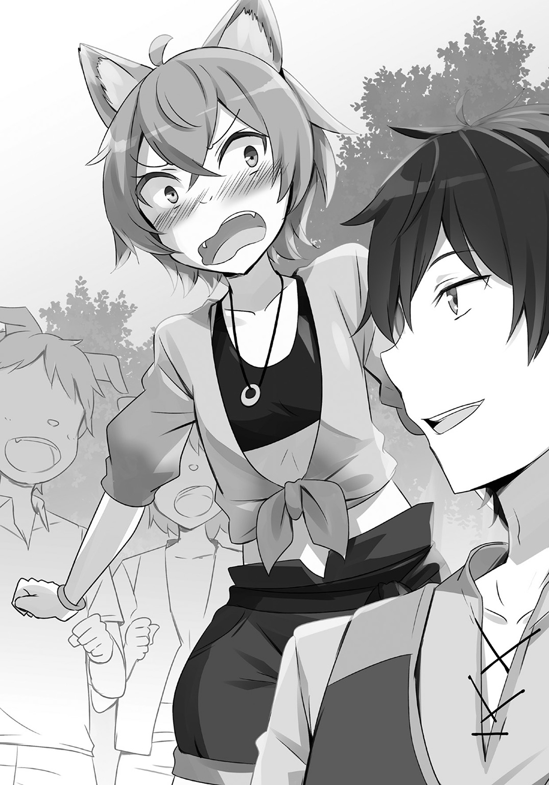
「レイニアたちに見捨てられたときはよろしく頼む」
「ば、ばか言ってんじゃない!!」
ミアルが顔から火を噴き出さんばかりにして叫び、子供たちがやんややんやと高い声を上げる。
ルーミィには理解できない。
「なんでそこで照れてるのよあの子は」
本当に理解できない。
ルーミィは少し離れた場所から様子を見つつ、ぶつぶつと呟いていた。
「ほんと、変態メイドにしろあのちびっこにしろ、あいつに近寄る奴はまともな感性を持ってないわね」
黒騎士の威光がそんなに凄いか？ 現実見ろよ、いまのあいつはただのグータラだろ？
どいつもこいつも本気で目が腐ってやがる。
（あ、レイニア様は違いますよ。あなた様の深い慈悲の心をあの外道が利用しているだけなのですから）
レイニアは例外という気持ちは忘れない。
「それにしても、背中ぐらい見せてくれたっていいのに......」
不満げにルーミィが呟く。
とりあえず確認ぐらいさせてくれてもいいのに。本当にあれば万々歳。なければないで墨で彫ってしまえばいいのに。
どうしてクロウは背中を見せるだけでもさせてくれないのか？
きっとルーミィが困るのを見て楽しんでいるのだ。
そう結論づけて、さらにクロウへの嫌い度を追加しておく。
自分がまず刺青セットを持ち出したことなど、すでに頭の片隅にすらないのは、あるいはルーミィの強みなのかもしれない。
（ていうか、もしかして本当にあったりして？）
問答無用で刺青セットなどを持ち出したように、実のところ、クロウが探されている当人だなんて欠片も信じていない。
しかしもしかして、本当にその人物だったりして？ という可能性が頭に浮かんできた。
そうでなければ、さっさと背中を見せるのではないのか？
黒騎士は皇帝に幼い頃に攫われて育てられたという噂も聞いている。もしかしたら本当に？
なにはともあれ、確認してみなくては。
「問題は、どうやってあの背中を押すかよね」
ルーミィの作戦はこうだ。
釣りをしている。つまり、クロウが川の近くにいる。
隙を見つけて川に突き落とす。
クロウは濡れる。
乾かすために服を脱がす。
背中の確認ができる。
（完璧な作戦よね）
自画自賛に頷くのだが、問題もある。
どうやって、突き落とす距離まで油断させたまま近寄るか、だ。
遠くから様子を見ているのだが、昨夜のこともあってなかなか隙を見出せない。
そうやってクロウに意識を集中しすぎたからだろう。
「お姉ちゃん、なにしてるの？」
「ふわっ！」
獣人の子供がいつのまにかルーミィの背後にいた。
（もう、だから子供って嫌いなのよ）
そう愚痴りつつも、表情は笑顔で繕う。
「お姉ちゃん？」
「お弁当を持って来たのよ」
にっこり笑って籠をみせる。子供が喜び、ルーミィを連れていく。
（くっ。お店を出る理由で持って来たのは正解だったけど。この状況は、迂闊！）
子供がルーミィの到着を告げる。
クロウが振り返り、ニヤリと笑う。気付かれていたのだとはっきりわかった。
「お、ご苦労さん」
「釣れてるの？」
「まぁまぁだな」
むっつりと尋ねると、魚籠を見せてくれた。水につけられた魚籠の中には川魚がところ狭しという感じで泳いでいる。
「......たくさんいるじゃない」
「密林のダンジョンを調査してるとき、宿泊させてもらってた村の連中に釣りを教えてもらったんだ。あそこにいた巨大魚どもに比べたら、こいつらの機嫌を見るのは簡単だな。警戒心が足りない」
クロウがそう答えているとミアルが教えてくれた。
「圓樹王様に守られてるからだね」
「うん？」
「森のお魚は、圓樹王様が釣って良いときと悪いときを決めてるの。それを伝えてくれるのが、キュライア様」
そして、釣りが解禁されたからミアルはクロウを誘いに来たのだという。
「へぇ。魚も減ってばっかにはならないってことか」
こんなに警戒心がないのは釣られない時期がちゃんとあるからということなのだろう。
「そういうこと」
自慢げにミアルが頷く。
「............」
「なんだよ？」
これでこの話題はおしまい、のはずなのだがルーミィがなにか言いたげな顔をしていて、無視できなかった。
「なんかあんたって、こういうときに変な解説入れそうだなって思ったのよ」
「は？ ああまぁ、そういうのはおやじさんの得意分野だし。おれにもそれがうつってるのかもな。でもだからって、なんでもかんでも解説はしないぜ？」
「へぇ......」
「なんだよ？」
「なんでも......」
「して欲しいのかよ？」
「うるさいわね」
「してやろうか？」
「勝手にしなさいよ！」
クロウはまたもニヤリと笑った。
「ならしてやるよ。......そうだな。圓樹王ってのは森の神で、獣人街の住民にとっては森の恵みを管理してくれる存在でもあるんだろう。採って良い時期と悪い時期を区別し、キュライアを通じて住民に告げて守らせる。守らないと罰でもあるのか？」
「あるって聞いたことあるけど、見たことないよ。みんな守るし、守らない人は衛士が捕まえちゃうし」
「ふうん。......なら、獣人街の連中が森の維持に目を向けなくなったときが、獣人街の終わりなのかもしれないな」
「なんかそれ怖い！」
ミアルが顔を青ざめさせた。
「ここの神様は飾りもんじゃないだろ？ 怒らせると怖いだろうぜ」
「うひぃ......」
「だから、一人で釣る量も、ほどほどにってことだ」
言うと、クロウは竿を上げて片付けた。
子供たちもそれに倣って釣りをやめると、ルーミィが持って来た弁当を食べる。
わいわいしている子供たちの話題は、シャリリンへの復讐のようだ。脅かされたままというのが気に入らないらしい。いかにしてやり返すかということを熱心に話し合っている。
ゾンビという存在への恐怖心はもうないらしい。こういう場合、子供の方が精神の柔軟性が高いのだろう。
それをよそに、クロウは釣りをしていた岩場に座ったままおにぎりを食べている。子供たちに混ざる気になれないルーミィは、しかたなくクロウの隣に座った。
「あんたってさ」
「あん？」
「先生が似合ってそうよね」
「はぁ!?」
「あ、わかる」
ルーミィからの思わぬ言葉に、子供たちが次々に頷く。
「クロウ兄ちゃんが先生っていいかもな」
「本気で遊んでくれそう」
「ヒモよりは良いんじゃない？」
「ほらっ、子供たちも受け入れてくれてるじゃない。先生になりなさいよ」
爽やかな笑顔で教壇に立ったりグラウンドで子供たちを先導して走る姿なんかを想像すると気持ち悪くてしかたないが、そんなルーミィの感想はどうでもいい。
（そして独り立ちしろ、レイニア様に迷惑をかけるな）
そんな本心は隠して笑顔で勧める。
「冗談じゃないね」
それなのに、クロウは毒でも飲んだのかってぐらいに顔をしかめた。
「先生になんてなってみろ。魔物よりも恐ろしいモンスターペアレントと戦わなくちゃならんのだぞ」
「モンスターペアレントってなんだ？」
「さあ？ でも、クロウ兄ちゃんが怖がるって相当だぞ」
「きっと、ながーい牙とか生えてんだ」
「目、光るかな？」
「毛むくじゃらでとっても大きいんだ」
「ねぇ、あんたのせいで変な怪物が誕生しようとしてるわよ」
子供たちが知らない言葉に想像力を働かせている。ていうかそんな言葉はルーミィも知らない。
「そんなことはどうでもいい」
クロウはそれどころではないと言い捨てた。
「いや、よくはないでしょ」
「しかもだ。先生がどれだけ働いてるか知ってるか？ 子供よりも早くに学校に来て、帰りは夜も遅くだぞ。しかもモンスターペアレントどもが問題を持ち込んできたら、残業は無限に延長だ。しかもあいつら、自分らの子供の世話は先生に押しつけるくせに、先生の家族のことは自分でなんとかしろ社会人なら当たり前とか言いやがるんだぞ。おかしいだろ」
「いったい、どこの世界の先生の話をしてるのよ」
なんだかわからないが、本気で嫌がっているのはよくわかった。
「ああもうわかったわよ。先生にならなくても」
言い合いが嫌になってルーミィは話題を霧散させるように手を振る。
だけど、真剣にモンスターペアレントという魔物について考えて遊んでいる子供たちは微笑ましくもある。
そして、子供たちを見るクロウの目は、少し、悪くないなとは思った。
「でも......あの子たちに好かれるなら、先生ってのもいいんじゃないの？」
「ふんっ」
言われると、クロウは鼻をならして川の方に向いた。
「そうかもしれないな」
小さく、そう呟く。
照れているのかもしれない。あるいはレイニアなら、「あら可愛い」とか思うかもしれない。
だけど、ルーミィは違う。
（チャーンス）
ニヤリと笑った。
クロウが、ルーミィに背を向けたのだ。
しかも川のすぐ近く。
好機がやってきたのだ。
（いまがそのとき！）
迷いはなかった。好機と見るやルーミィは無音でクロウに迫り、その背中を押す。
押す。
「あれ？」
手は空を切った。
クロウが寸前で体を回し、ルーミィの突進を避けたのだ。
そしてドボーン。
川に落ちたのはルーミィとなってしまった。
幸いにも川は深くない。頭からずぶ濡れになったルーミィに子供たちが騒いでいる。
「なにがしたいんだよ。お前は」
「うるさいわね。ちょっとした茶目っけよ」
「......はぁ。まぁとりあえず、出ろよ」
深いため息の後、クロウが手を伸ばしてきた。
「............」
そのときルーミィは伸ばされた手の意味がわかった気がした。
落とそうとしたのはなぜか、クロウはもうわかっている。
それなのに、わざわざ手を伸ばしてくるなんて、絶対にそういうことだ。
（手打ちってわけね）
ルーミィに同情でもしたのか。
あるいはやりっぱなしでルーミィがレイニアに泣きつかれたら面倒なことになるとでも思ったのかもしれない。
そういうのが面倒だから、とりあえず背中だけは見せてやるってことなのだろう。
だけど、素直に見せる気はない。
（ああもう）
こんなに情けをかけられるとは屈辱だ。
だけど、これだけ見事にやられると、こちらだってもう力尽くでやり遂げるっていう気にもなれなくなる。
しかたがない。乗ってやるか。
「ありがとう」
ルーミィは伸ばされた手を摑み、そして引っ張り落とした。
ドボーン。
「あはははは、クロウ兄ちゃん、なにやってんの？」
「うるせぇ」
ルーミィの隣でずぶ濡れの顔を出したクロウにミアルたちが笑う。
クロウが川からあがり、またも手を伸ばしてくる。今度は引っ張り落とさなかった。
「まったく、びちゃびちゃだ」
言いながら、クロウが服を脱ぐ。
ルーミィはその背を見た。
痣はあった。
だけど、星ではない。
右側の肩甲骨のあたりに鳥の足のような三本の線の痣があった。
（あー、やっぱり）
あるはずがない。クロウみたいなグータラクズ野郎が貴族の子供のはずがないのだ。
だけど、それなら......。
「な？ ないだろ？」
「それなら、もったいぶるな！」
ドヤ顔で振り返るクロウをルーミィは怒りの蹴りで再び川に落とした。
後日、人探しにこのことを報告したら、少しだけ手間賃がもらえた。
その手間賃に脱力し、レイニアにケーキを買って帰ったのだった。
看板娘には禁止アイテムがあります 03
ルーミィがケーキを買ってきた。
木の実がたくさん入ったケーキが休憩室の卓袱台に置かれ、レイニアとアシュリーが喜ぶ。
「あら、美味しそうなケーキ」
「みなさんの分も買ったんで、休憩時間にでも食べましょう」
「あ、ありがとうございます」
思わぬ言葉にアシュリーが驚く。
「ありがとう、ルーミィ」
「いえいえ、そんな......」
ルーミィはといえばレイニアにお礼を言われてあからさまに照れている。
だけどそんな蕩けるような表情も寝転んだままのクロウを見ると冷たいものに一変する。
「......あんたのはないわよ」
「知ってるよ」
ルーミィの言葉にクロウは期待してないと笑って返した。
「あらそうなの？ 少しは期待してるかと思った」
「はっはっはっ......お前がおれに施しとか、笑える」
「ふふふ......」
「ははは......」
微笑みながら火花を散らす二人に、レイニアは困り、アシュリーが慌てる。
「クロウ様にはわたしのを差し上げますから」
思わずそう言ったのだが、それでルーミィがアシュリーを睨んだ。
「ひっ」
「......なに、アシュリーさんってわたしの差し入れが食べられないって言うの？」
「うっ、いえ......そういうことでは」
「では、みんなで食べましょうね」
「うう......」
あっというまにアシュリーの負けとなる。
涙目で訴えかけてくる彼女に、クロウは面倒そうに手を振った。
「気にすんな。食え食え」
「うう、申しわけありません」
「それでは戴きますね」
ケーキには目がないのか、こういうときにクロウの味方をしそうなレイニアがなにも言わない。
クロウはそのまま寝てしまい、気が付けば昼休憩に入っていた。
目が覚めると、犬鳴亭全体が緊張していた。
「うん、なんだ？」
休憩室に入り込む光の加減からしてもう昼時だと思うのだが、いつもの賑やかさがない。
ここから見える厨房ではジェダが店内を見て硬直しているのだけはわかった。
さすがにおかしいと思い、のそのそと休憩室から出てみる。
すぐに見えたのはジェダの渋い顔で、その後、アシュリーが困惑し、ルーミィがなんか泣いているのが見えた。
「あ、クロウ様」
アシュリーがクロウに気付いてほっとした顔を浮かべた。
「あの......レイニア様が」
「あん？」
彼女に示されるまま視線を入り口近くにあるテーブルに向ける。
そこには、テーブルの上に仁王立ちするレイニアがあった。
「......なにしてんだ？」
「ようやく目覚めたかっ！ 黒騎士！」
いつもはどこかふわふわとした態度のレイニアなのだが、なぜかいまはビシッという擬音が相応しそうなポーズを決めている。
ていうか、似合わない。
「惰眠の時は終わった！ いまこそ起つときだ」
「うん？」
「我、レイニア・フォヴス・スローヴェントはここに宣言する。我、二代目皇帝となり、新生スローヴェント帝国を建国することを！」
クロウはすぐに理解した。
なるほど、店が開けられないわけだ。
「......わかった。とりあえず落ち着け」
「貴様こそ好い加減に目覚めよ！」
「いや、もう起きてるから。とりあえずテーブルから降りようぜ。行儀が悪い」
「黙れっ！ 帝王は人より低いところにはおらぬ！」
あきらかに異常だ。
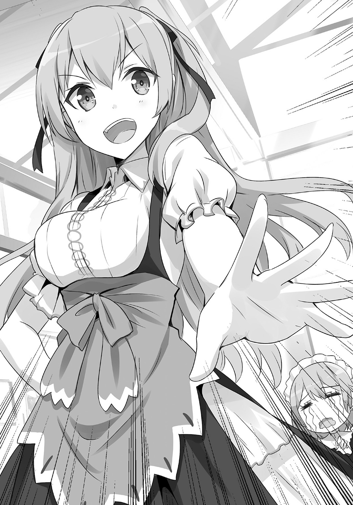
クロウ、アシュリーに問うた。
「なぁこれ、どうしたんだ？」
「それがよくわからないんです。ケーキを食べてから急に......」
「あ？ ケーキ？」
「はい」
「............」
「............」
みなの視線がケーキを持ち込んだルーミィに向けられる。
「お前......」
「わ、わたしはなにもしてないわよ！」
慌てるが、ルーミィがレイニアを再び貴族にしたいと思っていることは周知の事実だ。
ケーキになにか仕込んだと思われても、しかたない。
「レイニアにやる気出させるにしても、これはないわぁ」
「わたしだってこんなの嫌よ！」
「え、嫌だったのか？」
「なによ」
「嬉しくて感涙してるのかと思った」
「哀しくて泣いてるのよ！」
ルーミィが怒鳴り、その背後でレイニアが面白くない顔でテーブルを蹴りつける。
「こらっ貴様たち！ 我を無視してなにをしておるか!?」
「は、はいぃ、申しわけありません」
威圧されたルーミィは跳ねるようにレイニアの前に立つ。
じろりと睨まれて、ルーミィは震え上がった。
（こ、こんなレイニア様は初めて！）
硬直するルーミィをレイニアが冷たく見下ろす。
「ルーミィ。そなた、我に不満があるのか？」
「い、いえ。そのような」
「では、その顔はなにかしら？ やはり？」
「いいいいいぇええぇぇぇ、ありませんありません。なにもありません！」
慌ててブルブルと頭を振るルーミィに、レイニアは微笑んだ。
その笑みも冷たかったが。
「では、笑いなさい」
「は、はい......？」
「笑いなさい」
「はいっ！ あ、はははは......あはははははは............」
むりやりに笑わされ、ルーミィは涙目だ。
だが、それでレイニアは上機嫌になっている。
その様子に、クロウとアシュリーのみならず、ジェダまで声を漏らした。
「こわぁ......」
「怖いです」
「なにか変なもの入ってたかねぇ？」
ジェダの呟きで浮かぶのは、やはりケーキだ。
「そうだ料理人。食った感じでわからないのかよ」
「黙れクズ」
ジェダは軽蔑した目で言い放つ。
「食べてすぐに味の全てを見抜かれてたら、それはそれで料理人の敗北だよ」
説得力のある言葉だとクロウは納得した。
「でも、これってまずいんじゃないですか？」
アシュリーが困った顔で言い、ジェダも頷いた。
「まぁね。これじゃあお客を入れられないねぇ」
「いえ、それだけじゃなくて、こんなところをパスティアさんに見られたりしたら......」
「ああ、あいつよく来るしな。それに......」
クロウも同意したそのときだ。
「おや、まだやってないのか？」
「......ああいう奴って来て欲しくないときほど来るしな」
「ああ、ごめんなさい！ まだ開いてないんですぅぅぅぅっ！」
「あ？ そうなの？ ああ、うわわっ！」
バタン！
アシュリーが慌ててパスティアを追い出し、入り口を閉める。
「......だけど、ずっと閉めてるわけにもいかないよ」
ジェダが苦々しい顔で呟く。
店が開けられないことにジェダが苛立ちを覚えているようだ。
ルーミィをいじめて喜んでいるレイニアを見ながら、三人で考える。
「そこらの医者に診せるわけにもいかないだろ」
皆で唸るしかないかと思われたが、ジェダが打開案を示した。
「こういうときはキュライアだよ」
シャリリンの件で出会った大森林に住む賢者だ。
「医者の真似事もできるし、森の薬草にも詳しいからね。あんた、あいつの所につれていきな」
「おれだけで大森林を歩けるわけないだろ」
大森林を歩くにはコツがいるのだが、あいにくとクロウはそれを知らない。
だが、ジェダは無情だ。
「あんたが迷ってたらキュライアの方がわかるよ。行ってきな！」
「ええ......」
「行けっ！」
ほぼ蹴り出されるようにして、レイニアと二人、店の裏口から外へと出たのだった。
「それで黒騎士よ。これからどこへ行くのだ？」
とりあえず獣人街の外へと向かうクロウに、レイニアが尋ねてくる。その歩き方はいつもと違い、やや大股で胸を張るようにして歩く。なんだか完全に態度のでかい男の歩き方だ。
「ああ、キュライアのところだよ。覚えてるか？」
なるべくそれを見ないように答える。クロウも人に絡まれて質問されるのが面倒だから、人の少ない道を選ぶのに忙しい。
「おお、森の賢者か。なるほど、我らの今後を賢者の知恵で示してもらうのだな」
レイニアは呑気に表情を緩める。
完全に帝国を再興させる気満々だ。
「ううん。......どうしたもんかな？」
すぐに治れば問題ないが、そうでなかったときどうすればいいのか？
「しばらく森で過ごすしかないか？」
クロウはそれでも問題ないが、その間ずっとレイニアがこんな状況だというのは考えたくもない。
「とりあえずは、このまま街中をやり過ごして森に......」
そう言いかけたところで、クロウはその音を聞いた。
クロウはいま住宅の集まる区画を抜けているところだった。そこかしこで家事に勤しむ音や、小さな子供の声が聞こえたりはするが通りを進む人の姿はない。
だが、目の前に見える十字路の一方に公園があるのは知っている。どうやらそこから大勢の人の声が聞こえてくるのだ。
音楽も聞こえてくるから、大道芸人でも来ているのか？
「げっ」
覗いてみて、思わず声が出た。
「王様は思ったのです。いまがそのときだと。愚かなる仕立て屋の企みに乗ってやり、いまこそ見せつけるときだと。己の育てたシックスパックを、そして別個の生物がごとくに脈動するこの大胸筋を......」
そんな声が聞こえてくる。
どうやら紙芝居をしているようだ。子供を集めて飴を売り、紙芝居を読み語るという商売は獣人街にも存在するらしい。
だけど問題なのは紙芝居の内容ではない。その紙芝居を語っている女。そして子供たちに飴を売っている男だ。
男の方は、見てすぐわかる。
鎧を脱いで平民服を着ているがすぐにわかる。
ロディマス将軍だ。
「なにやってんだよ、あのおっさん」
哭死兵隊をまとめる将軍だったロディマスが紙芝居屋をしていることに顔をしかめる。
（いや、元々諜報部隊だしな。ああいう感じで色んな街に潜伏してたんだろうさ）
だけど、どうしていまだに獣人街にいる？
なんて疑問に捕らわれなければ良かった。
足を止めずにさっさと行ってしまえば良かったのだ。
ああいう連中は、総じて目敏いのだから。
（げっ）
公園にいるロディマスと目が合ってしまった。クロウは慌ててレイニアの手を引きその場を去ろうとする。
「むう、なんだ急に！」
こんなときに限って、レイニアは不機嫌に引っ張り返しその場を動かない。
「クロウ殿っ！」
「ああくそっ」
追いつかれ、クロウは渋々振り返った。
「なにしてるんだ？」
「商売ですよ。情報というものを買いたがる人はどこにでもいますからな」
「なるほどね」
雇い主がもう見つかったのか、それともこれから見つけるのか。どちらであっても情報はできるだけ集めておいた方がいいということか。
そしてそれはつまり、哭死兵隊を解散させたわけではないということだ。
「ご心配なく。前回で懲りましたので。姫様とクロウ殿に付きまとうことはいたしません」
「へぇ、そうかい」
そんなことを言われてもすぐに信じるわけにもいかない。ロディマスもそれがわかるのだろう。苦笑を浮かべた。
「......まぁご安心を、長居はしませんので。この間のことで目が覚めましたからな」
「うん？」
「他人を頼るだけでは利用される。そんなことはわかっていたはずなのですがね。帝国ができることによって魔物と蔑まれた者たちが人の上に立つことができる。そういう世界を夢に見てしまいましたからな」
「あーそいつは......」
加害者と被害者の立場が入れ替わる。加害者の側からすれば悪夢かもしれないが、被害者にとってみれば手放すことのできない甘い夢......なのかもしれない。
そういう感情を皇帝が利用していなかったかといえば、利用していたと言えるだろう。
だが、ロディマスはそのことで恨み言を言ったりしなかった。
夢が終わったことを認め、前を見ているのだ。
「いまはとりあえず、我々にはなにができるのか？ それを改めて見直すべきときだと考えることにしました」
「そうか。見つかるといいな」
「はい。それでは」
頭を下げたロディマスが去ろうとする......まさにそのときだ。
「なんで帝国を諦めないといけないのだ？」
ずっと黙っていたレイニアが口を開いた。
（黙っていろよ）
このままさよならできるかと思っていたのにと、クロウは頭を抱える。
「姫......様？」
思わぬ言葉に、ロディマスも呆然としている。
「諦める必要などない。ここには我がいるのだ。帝国はいつでも再興できもがっ！」
「......るわけないよな！」
レイニアの言葉はクロウに口を押さえられ、止まった。
「クロウ殿？ 姫様は一体？」
「まぁぁぁぁったく、レイニアってばちょっとした言い間違えで勘違いさせるところだぞ」
「か、勘違い？」
「そう！ 勘違い」
「いや......いまのは勘違いでは」
「勘違いだ！」
「しかし......」
「ぐっ......」
どんな言葉で言い間違えたのか説明できれば良かったのかもしれないが、クロウも咄嗟には浮かんでこない。
（ええい、こうなったら......）
クロウは辺りを見回す振りをすると、こっそりと招いた。
空気を読んで、ロディマスも声を潜める。
「クロウ殿、姫は？」
「実はな、ロディマス将軍。レイニアはちょっと帝都からの避難中に心をな」
そこまで言った時点で勝手に察してくれて目を見開いた。
「なんと！」
「普段はいいんだが。ときどき、こういう風になっちまう」
「それは............お労しい」
本気で同情する顔になっているロディマスを見て、クロウは内心で安堵した。
「そういうわけで、ちょっくら森に入って癒されてくるわ」
「わかりました。それでは」
深々と頭を下げ、ロディマスは公園へと戻っていく。
「もがっ！ ちょっと待て！」
「さあ、レイニア、ちょっと森へ行こうねぇ」
「は、離せぇぇ！」
レイニアがどれだけ叫んでもロディマスは哀しげな瞳でそれを見守るだけだった。
「クロウ！ どうしてあやつらを放置した！」
レイニアを肩に担いで運んでいるのだが、頭をぼこぼこと殴り続けてくる。
「痛いって！」
街からかなり離れたところで、レイニアを下ろした。
しかしレイニアの怒りは収まっていない。
（ああ、まったくめんどくさい）
大きくため息を吐くと、レイニアがさらに目を吊り上げる。
「クロウ！」
「いいか、レイニア」
興奮しているレイニアの肩を叩き、クロウはたっぷりと間を置き、もったいつけてから言った。
「あいつら役に立たないから」
「......そうか。ならしかたないな」
あまりにもあっさりと納得され、クロウは内心で啞然とする。
（言ったおれが思うのもなんだが、あいつらの扱いひどいな）
ともあれ、レイニアの気分は治ったのだ。
いまはそれで良しとしよう。
森に辿り着き、さらにぶらぶらと歩く。
どう行けばいいかわからないから、本当にテキトーに歩いている。
（さあて、どうしたもんかな？）
背後のレイニアを意識しながらクロウは考えた。
ロディマス将軍にも言ったが、帝国の再興なんて考えていない。帝国はもうその役目を終えているのだ。
皇帝は永世幸福の国家なんて望んでいなかった。二代目なんて必要ないのだ。
（変なもん食ったからなのかもしれないが、なんでいまさら......）
レイニアがどうしてそんなことを思うようになったのかがわからない。
よし、訊いてみよう。
「ところでさ」
「なんだ？」
「帝国再建して、レイニアはなにがしたいんだ？」
「え？」
「え？」
まさか、そこでいきなりきょとんとされるとは思わなかった。
「......なにをすれば良いと思う？」
「考えてないのかよ！」
「しかし！ 父のためには帝国を再建せねばならない！」
「へぇ......」
思わぬ言葉に、クロウもすぐにはなにも言えなかった。
レイニアはしばらく考えていたのか黙り込む。
「......うん。やはり父のために帝国を再建。そのためには新王国を打倒しなければな！」
そしてやっぱり、そういうことになる。
「よし！ ではそのための策を示せ、黒騎士」
「おれかよ！」
「当たり前だろう。我に戦のことがわかると思うか？」
「いや、そうだけどよ」
「ちなみに、その前はどうやったのだ？」
「知らないのかよ」
「その頃、我は獣人街にいた。獣人街は外の情報が入ってくるのが遅いのだ」
「ああまぁ、そうだろうけどさ......」
ジェダの言う通りにキュライアが見つけてくれるにしても、それには時間がかかるだろう。
暇潰しに話すのもいいかと思っていると、案外早く、彼女はやってきた。
「おや？ えらく呑気な迷子がいるなと思ったら君たちなのね」
「やっっほー」
キュライアとシャリリンだ。
†
帝国がどのようにして王都を急襲したのか。
皇帝スレイド・フォヴス・スローヴェントが挙兵をしたのは王国東方の国境沿いでのことだった。
人間での兵力は五千。
当時、王家直属の騎士団等の兵力が一万。貴族の私兵を集合させれば二万前後にはなっただろう。皇帝の兵力は大貴族を相手にするには十分だが、王国全土を相手にするには弱いと言わざるをえない。
もちろん、全ての兵力を一点に集めることは不可能だ。国境が接している国は一つではないし、短期間のうちに貴族の私兵を集合させ、指揮権を一本化するなどできるはずもない。
とはいえ、突如として現れた五千の兵力が王国に雪崩れ込むのは一大事ではあるが、王国を傾かせるような危機になるはずもなかった。せいぜい、戦場となった周辺の貴族たちが兵力を出さなければならない上に、土地を荒らされて困る、という程度のものだと思っただろう。
もちろん、突然の騒乱の裏で各国の思惑がどのように跳梁しているのかを考える者たちもいただろう。
しかしまさか、その騒乱の隙を突いて王国の各地に潜んでいた魔物が出現し、王都が包囲されるような事態になるなど考えてもいなかっただろう。
「おやじさんに人間の兵力で王国中の目を奪わせ、そこに兵力を向かわせといて、こっちは王国各地に潜伏させといた魔物を使って王都を短期攻略したってわけだ」
そのときにシャリリンが大活躍をし、王都の正門を正攻法で攻略すると見せかけ、黒騎士であるクロウが秘密の通路を使って王城に潜入し制圧したのだった。
キュライアが感嘆の声を漏らす。
「なかなか素早い作戦を考えたんだね」
「そりゃ、王国の全兵力と全力の殴り合いなんかしたらこっちが負ける公算の方が高いからな」
魔物の軍団というものに特徴的な効果があるとすれば、それはやはり、異形の軍団という一点だろう。
多数の魔物が勢揃いし、襲いかかってくる。恐ろしいに違いない。
兵たちは恐怖し、軍を統制することが難しくなるだろう。
だがそんなものは時間が解決してしまう。
その異様さに慣れられ、軍隊がまともに対応できるようになれば、魔物の軍団など『ちょっと面倒な敵が来た』ぐらいの認識になってしまうだろう。
そしてこちらには短期決戦をしなければならない理由が他にもある。
「あの頃はまだ皇帝の弟子どもはほとんど役立たずだったし......となると、どんなに強力な魔物の軍隊も指揮できる人間が二人しかいないんじゃ、やれることは限られてる。そのやれることで確実に勝つにはそれぐらいしか方法はなかったからな」
兵士を指揮する将軍は借りられたが、魔錫鬼王を伝授できるのは皇帝のみであり、修得には時間がかかる。哭死兵隊のような独自で統率のある行動を執れる魔物はほんの一部でしかなかった。
手数が圧倒的に足りないのも、決着を急いだ理由だ。
そうして無事に王都を攻略し、一部は逃がしたものの王家を始め王都にいた主要な大貴族を捕らえ、皇帝に差し出すことに成功した。
どんなものであれ、王族貴族というのは国の知能だ。有能な将兵は国中で無事に残ってはいても、知能を失えば乱れるしかない。
その乱れを利用して皇帝率いる五千の軍と黒騎士の魔物軍が合流し、王都周辺の貴族の領土を制圧し、こうして帝国はできあがったのだった。
「あのスレイドがそんなことを考えるなんてなぁ。わたしと同じで研究馬鹿だと思ってたのに」
キュライアがそんなことを言う。
ジェダとも知り合いだったのだから他にも知り合いはいただろうが、まさかキュライアまでそうだったとは。
驚くとともに、故人を懐かしむ姿を見ると、クロウだって思い出すことはある。
「それは変わらない。......変わらなかったよ」
洗脳され操られていたにしろ。ひどい虐待を受けていたわけではない。ただ旅をし、知識と技術を授けられ、彼の目的のために行動した。人生を選択する自由というものはなかったが、それ以外の部分では彼はあくまでも善良な魔法研究者だった。
ただ哀しいかな、その探求の目的に血腥さが混ざっていたが。
とはいえ、彼はやはり研究者なのだろう。準備が整ったと言いながら、王都に辿り着くための方法を思いつかずに途方に暮れている様を思い出すと、いまでも笑える。
「なら、君一人が考えた？」
「まぁね」
キュライアの問いにクロウは頷いた。
「それはすごい。黒騎士。黒衣の将軍というのは名前だけではなかったんだ」
「うわぁ、疑われてたよ」
「疑われて当然だろう？ 街での君の噂はこんな所にまで届いてくるよ」
「うへぇ......」
その噂がどんなものなのかは聞くまでもないし、聞きたくもない。
「まぁそれだけ、君が無視できない存在だということなんだろうね」
「......それで、レイニアはどうなんだ？」
「なにを食べたかわからないんではねぇ」
レイニアの性格の変化にはキュライアもお手上げという様子だった。とりあえず、重大な病気に繫がる可能性はなさそうと言われたのは幸いだが、この性格が治らなければやはり厄介だ。
ケーキのせいにしているのだって、いまのところそれぐらいしか変化の理由がないからなのだが、だとすれば他の三人に変化がないのはなぜだという問題もあったりする。
こういうときは原因がはっきりしてくれないと落ち着かないものだ。
「いやでも......あんなに人格が変わるなんてよっぽどだろ？ なんかそんな毒の実とかがあったりするんじゃないのか？」
「毒の実ねぇ......ああ、あれかな？」
苦し紛れに言ってみたのだが、それでキュライアの目が開いた。
「あるのかよ」
「酔夢の実っていってね。けっこう希少なんだ」
「へぇ」
「蔓状の寄生植物でね。不思議なことに、寄生した植物の実の中に種を仕込むんだ。で、その種が仕込まれた実は酒精に似た強い香りを出して鳥を誘って、種はまた遠くに運ばれていくんだけど、たまに動物が食べる前に人が採っちゃう場合もあって」
本物の酒精であれば酔うだけなのだろうが、あいにくとこの酔夢の実は違う。
「それで食べちゃうとね。ちょっと奇行に走っちゃうのよね」
「なるほど。それで、対処法は？」
奇行に走っているのはもうわかっている。いまはその実の毒性よりも対処法が重要だ。
だけどキュライアはそれに「ん～」と考え込む。
「薬を作ろうと思えばできると思うけど、消化されるまで待つ方が早いんじゃないかしら」
と簡単に言ってのけた。
「それに、奇行といっても普段は心の奥に隠れているものが出てくるだけだから。人によって色々。中にはまぁ、ひどい事件が起きたこともあるみたいだけど、レイニアの様子を見る限り、ここで一晩過ごさせれば大丈夫なんじゃないかな？」
「それは楽でいい」
それで大丈夫だというのなら、それに越したことはない。
ここならレイニアがなにを言おうと勘違いする者はいない。
酔うのとは違うと言っているが、効果が抜ければ後に引かないというのならやはり酒精で悪酔いしているのとたいして違いがないのではなかろうか。
「クロウっ！」
シャリリンと話していたはずのレイニアがいきなりこちらにやってきた。
「クロウ。父のことをもっと教えよ」
「うん？」
「知っていよう。そなたと旅をしている間の父のことを、我はほとんど知らぬ。その頃の話をせよ」
「えー」
「いやなのか!?」
いままで見たこともないような激し方に、クロウは顔をしかめた。
なんだかすごく、必死な感じがしたのだ。
「わかったよ」
「うむ。それでよい」
「......つっても、ずっとダンジョンからダンジョンに巡り回るばっかだったぜ」
「いいから話せ」
「はいはい」
一転して機嫌良く急かすレイニアに、クロウは思い出しながらぽつりぽつりと語った。
おやじさんとの思い出は、そのまま旅の記憶になる。
気が付いたときには歩いていたし、立ち止まった時にはだいたい見たことがない風景だった。同じ場所に長期的に居座る場合もあったが、目的を遂げれば立ち去る。
そして、おやじさんが求めているのが古き魔法使いの知識である以上、それが残されているのは研究者が秘蔵しているか、あるいは古き魔法使いが残した無数のダンジョンの奥深くである。
そういうわけで、クロウが剣技のまねごとができるようになる頃にはダンジョンに連れて行かれていた。
罠と魔物との戦いばかりのろくでもない記憶のように思っていたが、レイニアに話すために思い出そうとすると、意外にそうでもなかったことに気付いてしまう。
シャリリンとの出会いもそうだが、思い出深い魔物との出会いはそのほとんどがダンジョンだった。
そんな魔物との出会いでおやじさんともいろいろあった。いつも意見が同じになるわけもない、時には助けになり、時には喧嘩した。
クロウの話をレイニアは大人しく聞いていた。目つきはいつもとは違ったままだが、帝国の再興なんてことを口にはしなくなった。まるで寝かしつけるための物語に聞き入って、そのまま眠らなくなった子供のようだと思った。
ああ......とクロウは得心する。
レイニアはいま、父親というものを自分の中に収めているのだな。
母親を亡くし、父親不在のまま獣人街で過ごした。
その間に父親がなにをしていたのか、レイニアは知りたがっている。
（帝都にいる間に訊けばよかったのにな）
クロウはそう思ってしまうのだが、実際にはどうなのかわからない。クロウには実の父母はいない。友人がいないわけではないが、自分の知らない時間にそこまで固執するような相手はクロウにはいない。
奇妙な感覚の変化がクロウにも起きている。まるで空いた場所に水や気体が流れ込むかのような感覚。満たされていくようで、逆に抜けていく。
あるいはこれは、羨ましいという感覚なのかもしれない。
気が付けば、キュライアとシャリリンはいなくなっていた。
自分の寝場所に戻ったのかもしれない。朝になれば戻ってくるのだろうか？
焚き火の明かりが森の深い夜をわずかに押しのけている。この間の場所とは違い、光虫やヒカリゴケの恩恵はない。
深い闇と焚き火だけがクロウとレイニアを包んでいる。
「......色々なことがあったんですね」
しばらく黙っているなと思っていると、急にレイニアが口を開いた。
その口調の変化にクロウはほっと息を吐いた。
「戻ったな」
「はい。ご迷惑をおかけしました」
「まっ......治ってなにより」
「はい。まさか、わたしの中にあんなものがあるなんて思いませんでした」
その言い方からして行動がおかしくなっていた時のことを覚えているのだろう。
「生真面目だからな。もしかして帝国の姫らしくなろうとか思ってたのか？」
説明された酔夢の実の効果は、心の奥に隠れているものが出てくるというものだった。
だとすれば、さきほどまでのあの姿はそういうことになるのかもしれない。
レイニアが帝国を継ぐべきだと思っていた？
「かもしれませんね」
淡い笑みとともに、彼女ははかなく首肯する。
皇帝の娘として失われた帝国の復興を目指し、父の遺志を継ぐ？
いや、そういうことではないのだ。
さきほどまでの貪欲な時間の補塡への欲求を見ていれば、わかる。それ以前にレイニアだってわかっている。
そうでなければ、ロディマス将軍の誘いに乗ったはずだ。ルーミィの願いはもっと簡単に叶っているはずだ。
レイニアの感情はもっと単純だ。
そして単純ゆえに、彼女はそれをしてはいけないと思っていた。
だけど、帝国の継承を決意する姫であれば、レイニア・フォヴス・スローヴェントならそれをする権利を得てもいいのではないか？ むしろそれは義務なのではないか？
だけど、獣人街に生きるレイニアは？
細く息を吐いてレイニアは首を振る。
「でも、こんな感情が認められるわけありません」
「なんで？」
「だって、父がなにをしたか考えたら、そんなことができるわけが......」
「なんで？」
「ですから......」
「でも、あんたにとっては良いおやじだったんだろう？」
「っ！」
不意の言葉がレイニアの再構築しようとしていた心の壁に突き刺さったのを、クロウは見逃さない。
言葉を続ける。
「旅ばっかしてたけどさ。この辺りに戻ってきたらおやじさんは必ず獣人街に行ってた。それはレイニアに会いに来てたからだろ？ レイニアのことを忘れてないって証拠だ。最後の家族を大事にしてたってことだ」
それはスレイドがこの地に縛られる理由だ。
そして、その執着があるからこそ、彼は帝国なんてものをつくった。
「おやじさんが理由もなく殺戮好きとか、権力が欲しくて王国滅ぼしましたとかなら、おれだってもうちょっと恨んでたかもしれないし、レイニアとこんな風に獣人街で暮らすとかできてなかったと思うけどさ。そうじゃないだろ？」
「......はい」
「やったことは派手だし、いらん恨みもたくさん作ったと思うけどさ。でも、元々は復讐だ。復讐を否定する奴はそもそも魔王が勇者を倒す話だって否定しなきゃいけないはずだ。あれは既得権益を魔物に奪われた人類が、勇者という復讐装置を使う話がほとんどだぜ」
復讐という感情を止められる完璧な方法はない。国家の法が殺人を禁止するのは、それが社会を維持するため、つまり国民に安全を保証するための必要最低条件だからだ。
だからこそ、復讐による殺人も認めない。
そしてその代わりに、法は殺人者に罰を下す。場合によっては死という罰を下す。国家の死刑とはつまり、復讐という負の連鎖を国家が断ち切る役割を果たしているとも言えるだろう。
「だけどよ、法が罪を罪と認めなかったら？ 罪がないなら罰もないんだ。そんなのが許せるはずがないってなったら、どうしたらいいんだ？」
社会から理不尽に放置された復讐はどうすればいいのか？
「絶望するしかないし、後に残るのは復讐という名の怒れる拳だ」
国家に絶望したのならば、あるいは国家そのものが共犯、あるいは罪の源泉なのならば、被害者はどうすればいいのか？
「国を相手に復讐するにはどうすればいいか、おやじさんは考えて考えて、考えたんだ」
家族という社会組織が、国家という大敵に罰を下すにはどうすればいいのか？
それはもはや法ではなく、戦争で語るべきものではないのか？
「それを短絡的な愚行だと笑いたい奴は笑えばいい。愚行がどうした。お前らの嘲笑では癒されないとわかったなら、後はこの拳を振り上げるだけだ。だからこそ......」
だからこそ、帝国は興ったのだ。
「極論じゃないですか」
レイニアが苦笑する。こんな話を苦笑で済ませるような彼女ではない。目を見開いて驚いてみせるのが彼女ではないだろうか。
だけどレイニアは苦笑したのだ。
「いいんだよ、極論で」
なぜなら、帝国はすでに興り、その役目を果たしたからだ。
「他の奴らに言い分があるように。こっちにだって言い分があるんだ。殺し合うだけが全てじゃないって言うなら、言った奴が恨みを呑み込めばいい話だろ？ てめぇができないくせに他人に聖人君子を求めんなってんだ」
「クロウさん、もういいです。もう、いいんです」
苦笑すらかき消え、レイニアは俯いた。地面を見つめたまま、彼女は手を伸ばす。それはクロウを止めるためのようであり、あるいは助けを求めているかのようでもある。
クロウはその手を摑んだ。
「父が、死んだんです」
「おう......」
「でも、父は悪人です。母の復讐のためとはいえ、国を一つ滅ぼし、関係ない人をたくさん殺してしまいました」
神にその権利は渡さない。復讐するは我にこそあり。皇帝は、スレイドはそう叫んだ。
だが、ただの復讐にしては、帝国は殺しすぎた。
だからこそ、レイニアはその件には口を噤み続けた。帝国の姫としてその責めを負う覚悟の証として、そのことを言葉にしないと決めたのだ。
おそらく、そうだろうとクロウは思う。
だけど、そんなもの我慢する必要があるか？
ありはしない。
レイニアも、もう抑えられない。
「いいさ、ここには誰もいないんだ」
だからクロウは、背中を押すのだ。
震える唇でレイニアは言葉を紡ぐ。
「でも、父なんです。母は、王国の貴族に殺されたんです。父はそのために戦ってくれて、そして死んだんです」
「............」
「死んだんです」
レイニアは静かに泣く。体からは力が失われ、クロウは彼女の肩に手を置き引き寄せる。彼女はクロウの胸に飛び込み、そして体を震わせた。
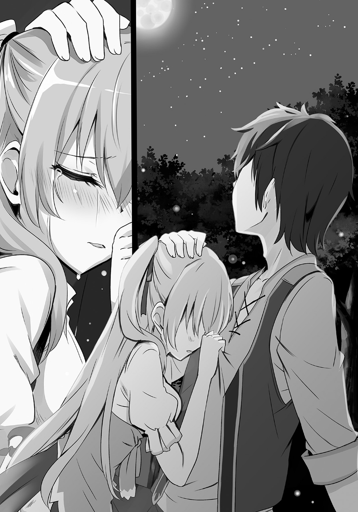
家族が死んだと泣くことを、どうして我慢しなくてはならないのか？
クロウは揺れる焚き火に目を向けた。
焚き火の炎は夜を払うことはできない。
だけど、寒さを凌ぐことはできる。
そして焚き火を囲む闇は怖いかもしれない。
だけど、闇は一人にもしてくれる。誰にも邪魔されない、静かな世界をつくってくれる。他人の目を気にしないで良くしてくれる。
これはそういう夜なんだと、クロウは森が覆う空を見上げるのだった。
†
翌日、二人が無事に帰ってきてルーミィはたいそう喜んだ。
もちろん、クロウのことなど眼中にはなかったが。
なにはともあれ、レイニアが元に戻って犬鳴亭にも平和が戻ってきた。
ように思えるのだが......。
「怪しい」
感激の時間が去って一日ぶりの日常を味わい、落ち着いてみると違和感を一つ、ルーミィは見つけてしまった。
「どうしたんですか？」
どうやらアシュリーは気付いていないようである。やはりグズメイドではどこまでもグズということだろう。家事の延長程度の即席教育しか受けていない彼女では状況の把握能力もその程度ということだ。
「怪しすぎる」
だから、アシュリーを無視し、休憩室で昼飯を食べているクロウのところに向かう。
「ちょっとあんたっ！」
「あん？」
「昨日、あんたレイニア様に変なことしなかったでしょうね？」
「うえぇぇぇっ！」
「......なんでそうなる？」
ルーミィの言葉にアシュリーが仰天し、クロウは顔をしかめる。
誤魔化そうとしているが、ルーミィは誤魔化されない。
「だったらなんで、いつもよりおかずが一品多いの？」
「......食べ物が豊富なのは良いことだぞ？」
しらを切ろうとしているが、そうはいかない。
「ク、ク、ク......クロウ様......」
「なんもなかったってぇの」
泣いてすがろうとするアシュリーに、クロウはうんざりと答える。
皿を洗っていたレイニアにも、もちろんその声は聞こえている。
ジェダが物問いたげにこちらを見ていたが、レイニアはそれにくすりと笑みを漏らすだけにとどめたのだった。
今日もいつも通りの日になりそうだった。
それもまたメイドの役割かもしれない 04
ミアルは復讐を考えていた。
「我々は、応報しなければならない！」
硬く拳を握りしめ、ミアルは宣言する。
「おうほうってなに？」
「しらね」
「やめろよ。ミアルねえちゃんは難しいことを言いたいんだよ」
「ああ、そういう年頃なんだね」
「難しいね」
「いいから！」
最近、なんだか子供たちが生意気になっているような気がする。
（これが反抗期というものなのかなぁ）
などとそれっぽく思い悩んでみるが、しかしやはり問題はそこではない。
「やり返すんだよ！ あのゾンビに！」
「ああ」
それで、子供たちも納得した。
ゾンビというのはもちろんシャリリンのことだ。
彼女に追いかけ回されたことを、ミアルはいまだに根に持っているのだ。
「イタズラとは子供の特権である。子供にイタズラする者には天誅を！」
凄まじく身勝手なことを言っているが、子供たちは目的がはっきりしたのでやる気になっている。
「あのゾンビって可愛かったよね」
「シャリリンって名前だって、クロウにいちゃん言ってたよ」
「嚙まないかな？」
「伝染らないゾンビだって言ってたよ」
「キュライア様が一緒に住んでるんだって」
「なら大丈夫だよね」
「シャリリンにイタズラ......」
「さあ行こう！」
子供たちをまとめ、ミアルは大森林へと入っていく。子供とはいえ獣人だ。大森林の歩き方は心得ている。ミアルたちは困ることなくキュライアの住居に辿り着いた。
キュライアの家は樹上にある。
大森林には幾つか、無数の木々の枝が絡まり合ってできた場所がある。そういう場所は家を建てることができるし、実際に幾つかの場所に造られている。森で夜を明かす際の避難所だったり、狩りや畑を持っている人たちの休憩所や倉庫だったり、使用目的はいろいろとある。
キュライアの家は小さい。そこで暮らしていることを考えるとミアルでさえ小さい、狭い、不便そうと思ってしまう。
一度、そう言ってみたのだが、雨がしのげて本が濡れなければそれで良いのよと笑うだけだった。
さておき、目当てのシャリリンはいた。鎧姿で立てかけた丸太に水をかけている。キノコを栽培している人があんなことをしていたような気がするが、それはどうでもいい。
あの鎧にシャリリンが入っていることもクロウに聞いているのだ。
（行くよ）
ミアルは目だけで子供たちに合図を送ると、忍び足でシャリリンの背後に迫る。獣人だからなのか、あるいは森で暮らす子供たちだからなのか、みなが当たり前のように音を殺して忍び寄る。
さあ、脅かしてやるぞ。
「残念！ それは影武者だ！」
そう思った瞬間、頭上からシャリリンが落ちてきた。
足首に蔓を巻き付けて、逆さまに落ちてきたのだ。
ミアルたちは「ひぎゃあ！」と叫んで逃げ出した。
「ふははははははは！ わぶっ！」
子供たちに振り返る勇気があったなら、裏返ったワンピースに悶絶するシャリリンを見て勝ちを確信しただろうが、あいにくとそんな余裕はなかったのだった。
†
森でそんなことが起きているなどわかるはずもなく......。
宅配の帰り道、アシュリーは奇妙な驚きに遭遇していた。
「答えはすぐじゃなくていいから！」
そう言うと、男は料理を抱えて家の中に入っていった。
頭で震える耳と、鼻の先が少し黒かった。犬の獣人だった。
バタンと閉じられたドアの前で、アシュリーはしばし呆然とする。
「えー............」
そう呟くのが精一杯だった。
なんと、告白されたのだ。
「なんだか、アシュリー。ぼうっとしていません？」
「うん？」
いつものように休憩室で寝転んでいたクロウは、レイニアに言われて顔を上げた。
アシュリーが？
見ようとしたが、このままでは見えない。
しかたないのでレイニアに呆れられるのにもかまわず、這いずって休憩室から顔を出し、店を覗いた。
そこには店の端で立ち尽くすアシュリーの姿がある。
目が現実を見ていないのがここからでもわかる。
「午前に出前に行ってからなんだかおかしいんです」
「へぇ」
と、答えるもののどうにも熱意がわかない。
「病気か？」
「いえ、熱はなさそうです。気が付くといつも通りに働いてくれるのですけど」
「ふうん。......それなら、問題ないんじゃないか？」
「ちょっとクロウさん......」
もそもそと元の位置に戻ろうとするクロウの服をレイニアが摑む。
「病気じゃないなら、ほっときゃ治るって」
そう言ってみるのだが、レイニアは納得してくれない。
「クロウさんっ！」
「なんだよ？」
「グータラしてても良いですけど家族のことは気にかけてください」
「家族？」
「一緒に生活を共にしていれば、それは家族ではないですか？」
「......まぁね」
レイニアの言葉を不承不承に肯定する。
「それなら、家族のことは心配してくださいね」
「......その笑顔怖いわぁ」
「クロウさん」
にっこり笑顔のまま迫られ、クロウはついに降伏した。
「わかった。わーかりまーしたー」
「ついでに出前の皿を回収してきてください」
「うえぇぇ......」
「............」
「わかりました。わーかーりーまーしーたー」
レイニアに笑顔のままトレイを振り上げられ、クロウは動き出すしかなかった。
「おーい、アシュリー」
「は、はいっ！」
いきなりクロウに呼びかけられアシュリーは飛び上がるくらいに驚いた。
「皿回収に行くから手伝え」
「え？ は、はい！」
慌ててアシュリーは追いかける。
ジェダに嫌味も言われずにクロウが外に出られたことをアシュリーは訝しむ。
（なんだかおかしいわ）
しかも、今日に限ってクロウは嫌々という感じが少ない。
（猫背の角度が低いし、歩幅がいつもより少し広い。なんだかおかしいわ）
なんだろうこの感じ。なんだかこんな空気がつい最近にもあった気がする。
そこで、気が付いた。
レイニアがおかしくなったときの空気に似ている。
気づかわれている！
（はっ、もしかしてわたし、顔に出てたのかも）
いつものように真面目に働いていたつもりだったのだけど、なにかがおかしかったのかもしれない。
だから、クロウが出てきてくれたのか。
（いえ、もしかしてそれだけではないのかも？）
だって、それならなぜよりにもよって皿回収なんだろう？
いや、クロウが店の手伝いをするといえば出前の皿回収ぐらいなのだけれど、それにしたってなんでいまこのときに？
そうだ。まずいのだ。
（このままだとあの人の家にも行ってしまう！）
そんなことになったら、絶対に彼は出てくる。
そしてクロウと鉢合わせになってしまうだろう。
（た、大変......どうしましょう？）
それだけは、なんとしても防がなくては！
「クロウ様っ！」
「うん？」
思わず呼び止めてしまった。
だけどどうする？
どうすればクロウの足を止めることができる？ 彼の家から遠退かせることができる？
「............さ」
「さ？」
「サボりましょう！」
言ってしまった。
なんて恐ろしい言葉を言ってしまったのだろうと後悔する。
（まさか、わたしがこんなことを言ってしまうなんて。ででででも、わたしがこんなこと言ったら、きっとクロウ様は止めてくれるはず！）
「別に良いけど......どうすんだ？」
「え？」
「この時間だと、あちこち暗いから物騒だぞ？」
（止めてくれなかったぁぁぁぁぁぁぁぁ！）
いや、それはそうかもしれない。
だって、いまのクロウはそういう人なのだ。
（うぅ......だけどいまさら、そんなこと言えない）
アシュリーは周囲を見回した。
獣人街の夜は早い。大森林という日照に恵まれない場所柄故、夕方のこの時間はすでにあちこちが暗い。
もうこうなったら人目につきにくいところに行きたい。
そう思っていたら、人目から隠れるような位置にある店を見つけてしまった。
「そ、それなら明るいところに......」
あそこに行くしかない。
そうして二人はよくわかっていない店に入った。
†
（な、なにしてんのわたしはぁぁっ！）
後悔は続いている。
出された料理をつつきつつ、アシュリーは内心で頭を抱える。
（ああ、サボるなんてなにを考えているのかしら。メイドにあるまじき行為よ。ああ、一体、どうしてこんなことになってしまったのか......）
悩み事は変わらない。
（うう......でも、あのままお皿を回収してたら絶対にあの人の家にも行くし）
告白されたことを、クロウには知られたくない。
それだけはどうしても避けたい。
そのためには少しぐらいならメイドの誇りを忘れたっていい。
とはいえ、忘れきれなくて悩み続けるのだが。
しかししかし......だからといっていつまでも悩んでいるだけ、というわけにはいかない。
（なにか、建設的なことを考えなくては）
そこまで考えて、アシュリーはようやく現実を見る気になった。
「それにしても、ここってどういう店なんでしょう？」
「うーん。なんだろな」
「お茶屋って書いてあったからカフェのようなものだと思ったのですけど、個室に案内されるなんて思いませんでした」
店の名前を覚えきれていないが、『出会い茶屋○○』みたいな名前だったはずだ。
だから、カフェだと思ったのだけれど......。
「料理もたいしてうまくないしな」
「ジェダさんの料理が美味しすぎるんですよ」
一応の弁護はするものの、やっぱり美味しくない。当たり前のようにお酒が出てきたので断ってご飯に代えてもらったのだけど、すごく変な顔をされてしまったのも気になるといえば気になる。
「でも、個室なのに安いのはそういう理由なのかもしれませんね」
自分で言って「はて？」と首を傾げる。
食事がいまいちで個室な料理屋なんてあるのだろうか？
いや、まぁ......あるのだろう。ここに。
（立地もいまいちのようでしたし。はやっていないのかも）
まぁ、時間を潰せればそれでいい。クロウが皿回収をすっかり忘れた頃にアシュリーが一人で行こう。
そう決めて、なるべく時間をかけるべく、ゆっくりと食事する。
先に料理を食べ終えたクロウはごろごろし始める。
「クロウ様、行儀が悪いですよ」
「畳の部屋なら転がってこそだろう」
「もう......」
「ところで、なにか悩みがあるのか？」
「いえ！ なにも！」
「............」
反射的にそう答えたのだが、クロウに呆れた顔をされてしまった。
「あの......？」
「そんな、いかにもな返事を真に受けて帰ったら、おれがレイニアに怒られるだろう？」
「うっ、す、すみません」
レイニアにも心配されていたと知って、アシュリーは小さくなった。
「言えないことなのか？」
「そ、そういうわけではないんですけど」
しかし、それならクロウになんと説明すればいいのだろう？
告白されました。どうしたらいいと思いますか？
なんて素直に話すのか？
いや、話してもいい。話してもいいのだけれど。
（わ、わたしはクロウ様のメイドですから）
そう。
メイドとは主人に仕える者であって、彼女でも恋人でも伴侶でもない。
主人が誰を好きになろうと、メイドが誰と付き合おうと、問題になるはずがない。
（そう。なにも問題ない）
わかっているはずなのだけれど......。
（告白されたとき、なにか変になった）
驚いたとか恥ずかしかったとか、そういうものだけではなく、なにか、すごい事実を突きつけられてしまったような気がしたのだ。
（わたしは......どうしたいのだろう？）
畳をごろごろと転がるクロウを見ながら、アシュリーは考えてしまう。
メイドは一生の仕事だと思っている。
だけど、それはそれとしてアシュリーだって幸せな結婚をして幸せな家庭を持ちたいと思っている。
そして、その願望を叶えるためには配偶者が必要となる。
（配偶者とメイドの主人は同じではない。そんなはずがない）
それはメイドの領分を越えることだ。
（ならわたしは、クロウ様と......）
その先を言葉にしていいのか、どうか......。
ごろごろと転がるクロウを見ながら思い悩む。
......と、そのクロウが部屋の端に辿り着き、障子にぶつかった。
「おや？ なんだここは」
そう言って、障子を開ける。
見えた光景にアシュリーも驚いた。
「え？」
「うへ、赤いな」
開け放たれた障子の向こうにある部屋は赤かった。
赤い布団に、壁紙も赤い。布団を隠すようにしてある屛風も赤い。
「なんだここ。宿だったのか？」
「こ、ここは......」
「うん。知ってるのか？」
「あ、いえ......お客さんの会話を思い出しちゃって......」
そうだ、思い出した。
中年の獣人の人が、仕事の同僚みたいな人に愚痴っていたのだ。
『うちの娘が男と出会い茶屋から出てきやがって』
『はは、出くわしたのか。まさかお前も嫁さん以外と入ろうとしてたわけじゃないよな？』
『............』
『......おい、なんで黙んだよ？』
そう、たしかこんな会話だった。
そのときはお客の会話に耳を傾けているなんて思われたくないから知らない振りをしていたし、そのまま忙しさで忘れていた。
だけど、その会話の内容の意味をよく考えたら？
（出会い茶屋って、もしかして......）
男と女がふんじゃかほんじゃかしてうっちゃらめっちゃらしてぎったばったはぁぁん！ ってなるということか！
（なんて......なんて場所に......）
全部の血が顔に集まっているかのように、頰が熱くなる。
そんなアシュリーに対して、クロウはあくまでも呑気だ。
「まっ、いいか」
気付いていないのか、今度は布団の上でゴロゴロしだす。
「泊まってもいいんなら泊まってくか？」
「えっ!!」
思わぬ言葉に変な声が出てしまう。
思わず真意を確かめようとクロウを見るが、その表情はやはりいつも通りのどこかだらけた雰囲気のままだ。
「帰りたくないなら寝る場所がいるだろ？」
「......そうですけど............」
ああ。
アシュリーは理解した。
クロウは彼女を気遣っているのだ。
なにか悩んでいるけど、それを話せないでいる。それならまぁ、サボる理由になるように付き合うのもいいんじゃないか？
クロウの考えはそんなところではないのか？
「どうせ、怒られるのはおれだけだし」
ああ、やっぱりそうなんだ。
クロウに気を遣われているのだ。
メイドを思う主人の気持ちが痛いほどに嬉しい。
（でもいまはそれよりも!!）
もっと大きな問題がここにある。
（あの顔は......クロウ様はわかってない？ わかってないのよね!?）
クロウはいまだに出会い茶屋の意味に気付いていないはずだ。
気付いていない。
きっと気付いていない。
気付かれたらどうなってしまうのか？
（で、でももしクロウ様がわかってて誤魔化してるんだったら？ もしここで泊まったりなんかしたら）
なにが起こってしまうのか？
（いえ、知らなかったにしてもクロウ様だって男ですし......）
一緒の部屋、男女二人で寝たりなんかしたら......。
（それはそれで......）
「はっ！」
いま思いかけたことに気付いて、アシュリーは我に返った。
不埒なことを考えようとした？
「だめだめだめだめ！ さすがにそれは......」
「なにぶつぶつ言ってんだ？」
「い、いえ、なんでも！」
「そうか......」
クロウはすっかり布団の上で寛いでいる。
（ああ、なんだか誘われているような気がする）
この誘惑には逆らわなくてはならないのだ。
だけど......だけど？
「そういや、なんかストレスあるんなら今のうちに聞いとくぜ」
「へ？」
思わずふらふら～ってなりそうだったときに、クロウはそんなことを言う。
「なんですか？ ストレスって？」
「いや、帝都が陥ちてからいろいろあっただろうしな。なんか困ったこととかあるんなら聞くぜ」
「クロウ様......」
一瞬、うるっとなるが、それからはっと気付く。
「......それってもしかして、聞くだけ、とか言いませんよね？」
「言うぜ！」
「そんなことを自信満々に言わないでください」
親指立てて自信満々に言われて、アシュリーは脱力した。
なんか急にがくっときた。いままで慌てていたのが、なんだか急にばからしくなってきた。
ああそうですとも。いまの黒騎士はこういう人ですとも。
「いや、ヒモとしては世話してくれる女の愚痴ぐらいは聞かないとだめだろ？」
「だめとかどうとか......そう思うならお仕事を探されたらどうですか？」
「......それは、まだちょっと」
「なにが、まだちょっとなんですか？」
「いや、働くのはまだ、おれにはレベルが高いかな」
「どんなレベルですかそれは？」
「まぁまぁ、そういう難しい話はいいから。アシュリーはなんかないのか？」
「逃げないでください」
「いいんだよ、逃げて」
「え？」
「嫌なものから逃げてもいいんだよ」
「でも......」
「全戦全勝なんて無理なんだから。あっ、これ無理って思ったら逃げればいいんだよ」
「いや、働くのから逃げたら......ああもうっ！」
なにか言いかけて、アシュリーはやめた。
いつものクロウだ。獣人街でのいつものクロウ。
だけど、このクロウはアシュリーの尊敬するクロウでもあるのだ。
（もう、なにがなんだか......）
アシュリーは天を仰ぐ。
もうクロウのことはいい。どうせいまはのらりくらりとかわされるだけなのだ。
（ストレス、不満......愚痴）
クロウが気にしていることを考えてみる。
ストレスや不満はすぐに思いつかないが、愚痴ならある。ルーミィが意地悪なこととか、サキュバスということが漏れていて、なにかを期待した目で見てくる男がいることとか。
愚痴を吐き出した後、今度はクロウに水を向ける。
「クロウ様は、なにかないんですか？ 不満とか愚痴とか」
「ん？ うーん............」
クロウは少し考え、口を開いた。
「ジェダがおれをゴミでも見るみたいに見るな」
「それは諦めてください」
「なんだよう、おれの愚痴も聞けよう......」
「その愚痴を聞いていたら、わたしもそっち側にいってしまいそうなので嫌です」
「ふうむ。おれたちは決して交わることのない線ということだな」
「え？」
「働き者と怠け者の人生の線だな。その二つはきっと交わることはないんだ」
そう言われると少し寂しく思ってしまうから不思議だ。
「そして、決して交わらないから惹かれ合い、影響し合って人生の線は続いていくんだな」
なんだかちょっと、良いことを言ったみたいな顔をしている。
でも、アシュリーはよくわからない。
「えっと......それって、どういうことですか？」
「つまり、おれたち怠け者の人生は、アシュリーみたいな働き者に引っ張ってもらってなりたってるんだよ」
「自分だけ楽しようって考えじゃないですか!! だめですよそんなの！」
「違う違う。ちゃんと影響し合ってるっての」
もう、クロウの否定の動作さえもダメダメに見えてくる。
「だから、働き者たちは怠け者たちのだめっぷりを見て、『こんなになったら終わりだ』って思って、もっと働いてくれるわけだ。やったぜ」
「もう......真面目にしてください！」
なんでこんなとこでこんなことをやっているのかわからなくなった。
「はぁ、もうなんだか疲れてきました」
額を押さえてアシュリーは長々とため息を吐いた。言葉通りに体が重くなってきた。この状況もそうだし、クロウとの平行線もそうだし、内緒にしていることもそうだし......考えるのが面倒になってきた。
「そういうときは寝れば良いんだよ」
「いえ、だからそこでは......」
その赤い布団は若者には危険すぎるのです。
そう言いたいけれど、そんなことを知っているとも思われたくない。
そこまで考えて、いや......と疑問が浮かんだ。
（クロウ様は、本当に知らないのかしら？）
なにしろ皇帝とともに色んなところを旅してきているのだ。使ったことはなくともこういう場所を目にしたことはあるのではないだろうか？
「アシュリーが真面目な働き者なのは知ってるけどさ」
「え？」
「たまには怠け者の境地を楽しんでみるのもいいんじゃないか？ 線が交わらないなら、飛び移れば良いのさ」
そんなことを言って脱力した笑みで布団を叩く姿が急に怪しく感じられた。
（誘われている!?）
そこまで考えるとまたも別のことが頭に浮かんでくる。ここ数日の出来事が連鎖的に浮かんでくる。
シャリリンと親しげだったり、ルーミィとびしょ濡れで帰ってきたり、レイニアと森で一晩過ごしたり......。
（怪しすぎる！）
しかし、どうしていきなりこんなに怪しくなったのか。
そこでさらに、はっとする。
（そうよ。いままでは忙しすぎて普通の思春期男子的な本能を発露する暇がなかったけど、いまはゴロゴロと食っちゃ寝しかしてないから......）
体力は有り余っている。
（だからか！）
しかし、しかしこれは......もしかして......。
「好機！」
「うん？」
「あ、いえなんでも」
思わず口に出てしまい、アシュリーは慌てて手で押さえる。
（なにを言ってるのかしらわたしは......）
たしかにアシュリーはサキュバスだ。だけど、本来のサキュバスは世間が言うような淫魔ではないのだ。
（そう、だからこんなことは考えるべきではないのよ）
このまま出会い茶屋で一晩、クロウと......なんて......。
（ああ、でもでもでもでも......）
そんなはしたないことを考えてはいけない。ついさっき、主人とメイドの恋愛はありえないなんて考えたばかりではないか。
だけど......でも............。
「ん？」
わかっていない顔でこちらを見るクロウが憎らしい。あれは演技か、それとも本心なのか？
「なぁ、払うもん払ってるんだし、このまま泊まろうぜ」
「............わかりました」
そうだ。考え方を変えればいいんだ。
（これは、主人の命令）
そう。命令だ。
（それに、他の人たちも......そうなら、わたしだって......）
ここでクロウと一緒に赤い布団の誘惑に負けたって。
「で、では......」
「うむうむ」
満足げなクロウの笑みにドギマギしつつクロウの隣に寝転がる。
（あ、お風呂......）
なんて思うけれど、もう遅い。
隣にはクロウがいる。すぐ近くの存在感が全身をちじ込ませる。先日の業魔での一体感とはまた違う。自分の皮膚のすぐ近くに他者の皮膚があるという感覚は、緊張感と同時に微弱な電気に体の芯を撫でられているかのような不可思議な心地にさせる。
「ク、クロウ様......」
引きつりそうな声で主人の名前を呼ぶ。
ついにこのときが......そんな思いがアシュリーの胸を締めつける。
「クロウ様」
アシュリーは目を閉じた。
「............」
「............」
「............あれ？」
来ない。
「クロウ様？」
怖々と目を開け、隣にいるはずのクロウを確かめる。
クロウはそこにいた。
ＺＺＺＺＺＺ............。
「寝てるし！」
ついさっきまで起きていたのに......アシュリーは思わぬ事態に呆然とし、そして震えた。
（せ......せっかく！ せっかく！ せっかく！ せっかく！）
覚悟をしたというのにこの仕打ちはなんなのか!?
「うっ......うう......」
ちょっと、泣きたい。
「......ふう」
しばらく涙目でクロウを睨みつけていたアシュリーだが、それで少しは気が晴れた......のかどうかは自分でもよくわからないが、ちょっとはなにかが軽くなったような気がした。
（はぁ......もうなんだか......）
呟いたつもりだけど、唇は動かなかった。
そのまますとんと意識が落ちる。
アシュリーは眠ってしまった。
まさか、こんな形で朝チュンを迎えるとは......。
「いえ、これは違う。違いますから」
ぶつぶつと呟く横でクロウが大あくびで起き上がる。
「......朝飯はなさそうだな。帰るか」
「は、はい......」
このまま帰ったら他の人たちになんと思われるのか......。
実りのない言い訳を考える虚しさに、アシュリーはふらふらと立ち上がり、服の皺を直す。
クロウが廊下に続く障子を開けた。
そこに、人がいた。
『あっ！』
アシュリーとその人の声が重なる。
頭に犬の耳。鼻の頭が黒い。
あの人だ。
「ア、アシュリーさん！」
「ああ！ あなた!!」
アシュリーに告白した、あの獣人だ。
その獣人が、視線がきつい感じの同じ犬っぽい獣人の女性といた。
「わ、わたしに告白なんかしておいて......」
色っぽい女性とこんな場所に来ているなんて。
「違うんだ。これは......」
慌てる男の人を見て、アシュリーは沸騰しかけた頭がすぐに冷えた。
そういえば、この人の名前さえもアシュリーは知らないのだ。
（そうだ。わたしにとってこの人は、そういうことなんだ）
名前さえも知らない。出前の伝票を見れば確認できるのに、それさえもしなかった。アシュリーにとってこの人はそういう人だということだ。
それなら、彼がなにをしていようと関係がない。
（そうよね。これでいいのよ）
告白されて慌てていたけど、これでいいんだ。
断り方に悩まなくてもいいんだ。
一気に気分が楽になったアシュリーとは対照的にその人は慌て続けている。
「違うんだアシュリーさん！ これは！」
いまにもすがりつきそうなその人を、アシュリーは冷静に遮った。
「あ、いいんです。大丈夫です。すいません。ちょっと一瞬、カッとなりそうになりましたが、大丈夫です」
「聞いてください」
「いえいえ、もう大丈夫です。さあ、クロウ様、帰りましょう」
「待ってくれ！ おれは君に......」
聞きたくない。アシュリーはクロウを引っ張って出口を目指す。
「君にこそ、このリードを握って欲しいんだ!!」
「へ？」
その背に変な言葉が投げかけられて、さすがに足が止まった。
「おれ、この前までずっと悩んでいたんだ。犬の獣人だけど、おれは犬じゃない。だけど、森の外で人に飼われてる犬を見ると、凄く羨ましく感じてたんだ。それでだんだんと犬のことが羨ましくなってきて......」
いきなり始まった独白に、二人は動くに動けなくなってしまった。
ルーミィがいれば無視すればいいのにと嘲笑されただろう。それができないのがアシュリーだ。
ていうかリードを握るってなんだ？ 首輪を付けたいってことか？ 縄で結ばれたいということか？ それを持って散歩されたいということなのか？
獣人とはいえ、獣人街にいるのは二足歩行の立派な人だ。そんな人がリードを握って欲しいとか......頭がクラクラしてくる。
「ジェダとは逆だな」
「あれは、クロウ様の言い方が悪いからです」
思い悩む姿にクロウがそんな感想を漏らすが、あれは犬を口喧嘩の種にするクロウが悪い。
その人はまだ続けている。
「でも、誰でも良いってわけじゃないんだ。それで、おれは......おれは......」
そう言ってアシュリーを見る。
熱意が現実のものになったかのようで、アシュリーは思わず仰け反った。
「君を見て電撃が走ったんだ。そして理解した。おれは......メイドさんに握って欲しかったんだ！」
そして告白は最終的な欲望を吐き出す。
「アシュリーさん！ おれを散歩に連れて行ってくれぇぇぇぇ！」
「............クロウ様」
「うん？」
「逃げます」
「おう！」
追いかけてくる獣人から、二人は全力で逃げ出すのだった。
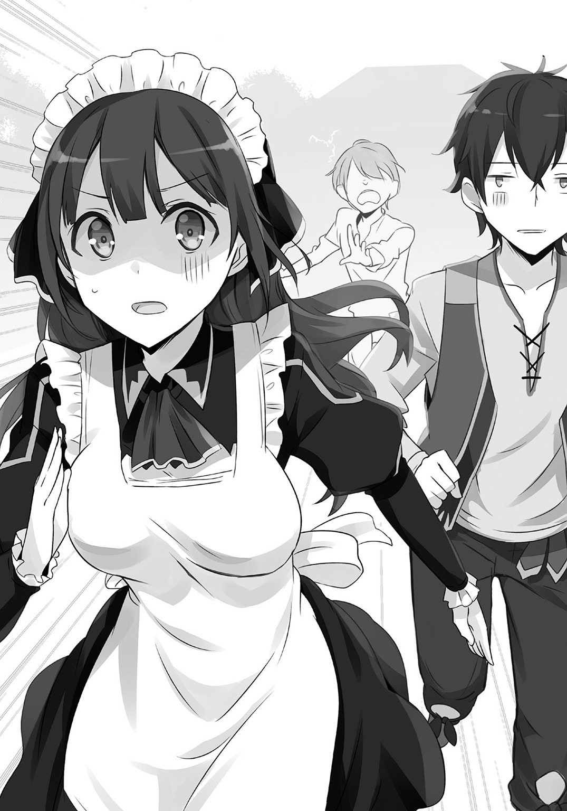
剣聖はしつこさが売りです 05
女の子がなにかをしていた。
「ううん？」
森の中を散歩していたシャリリンはその女の子の姿に首を傾げた。長い耳が頭から生えた女の子の獣人だ。
座り込んだ女の子は一人でせっせとなにかをしている。
シャリリンは気になって女の子に近づいていった。
「なにしてるの？」
「え？ うわっ！」
後ろから話しかけたのがいけなかったのか、女の子は手にしていたものを放り投げて驚いた。
顔に当たった物を受け止めて、シャリリンはそれを見た。
「お花？」
「あ......ゾンビのおねえちゃん」
女の子は少し怖がる様子でシャリリンから距離を取る。
「なにしてたの？」
その女の子がこの前、ミアルと一緒にいた子供の中に混ざっていたことを、シャリリンは気付いていない。ただ純粋な興味で尋ねた。
「えっと......花飾りでも作ろうかなって」
「花飾り？」
「ミアルちゃんはこういうの好きじゃないから。したくなったら一人になっちゃうの」
「ふうん」
「......？ あの、ミアルちゃんってわかってる？」
「ううん」
「この間、みんなでおねえちゃんのところに行ったでしょう？」
「............ああっ！」
言われて、シャリリンは思い出した。
この前、追いかけ回した子供たちがシャリリンのところにやってきたのだ。驚かそうとしているのは明らかだったので、逆にこちらからびっくりさせた。
そういえば、あのときにこの子を見た気がする。
「あのときにいたね」
「うん」
では、あのとき先頭にいた女の子が、この子の言う『ミアルちゃん』なのだろう。
「それで、花飾りってなんなの？」
あのとき全身の毛を逆立てるみたいにびっくりしていた女の子のことはどうでもいい。
いまはそっちの方が気になる。
「花飾り。したことないの？」
「ダンジョンにはお花ってないから」
根を足のようにくねらせて移動する食人花ならあるが、あれで遊ぶ子供はいない。
「そっか。......あのね」
それから、女の子はシャリリンの前で花飾りの冠を作ってくれた。
「おう......」
「他にも作れるよ」
シャリリンの感激した様子で機嫌が良くなり、女の子は他にも首飾りや腕輪などと色々を作ってシャリリンを飾り立て、花まみれにした。
そんなことをしていると、あっという間に時間が過ぎた。
「あ、そろそろ帰らないと」
女の子が空を見てそう言うと立ち上がった。
「じゃあね。また遊ぼう」
「うん、またね」
女の子を見送ると、シャリリンは花飾りが壊れないように慎重に持って帰った。
「どう、これ？」
シイタケ風の栽培に挑戦してくれている鎧さんに花飾りをみせると乙女風に喜んでくれたので、シャリリンは嬉しくて花飾りを家に保管した。
それから鎧さんを手伝っていたときだ。
「あっ」
鎧さんも気付いた。
「クロウが呼んでる」
†
そんなクロウは人生について考えていた。
人生なるようになると考えているクロウだが、それでも『どうしてこうなった？』と考えることはある。
気が付くと皇帝の背を追いかけ、彼や出会った色んな人に様々な教えを受けながら旅を続け、黒騎士となって王国を打倒し、帝国としての短い期間を権力者として過ごしたりもしたが、その間も己の人生を振り返ったり疑問に思うことはなかった。
陥落した帝都からレイニアとともに落ち延びた時に、初めて自分の人生について疑問を持った。
だが、それからは割り切って人生を送っている。食堂の休憩室で寝起きし、レイニアとアシュリーに養ってもらうという生活に不満はない。
だけどいまは、『どうしてこうなった？』と考えずにはいられない。
「むきゅう......」
パスティアとともに穴に挟まってしまうなんてことになれば、そんなことを考えたとしてもおかしくはないだろう。
事の発端は、パスティアが犬鳴亭にやってきたからだった。
「お金がないの」
顔を青ざめさせたパスティアに、周りで聞いていた人たちはなんともいえない顔になった。
「それをおれに言ってどうしろっていうんだよ」
言われた当人であるクロウの返事は、周りの心の声と一致していた。
「ていうか、あんたって王国の貴族なんだろ？ 生活費ぐらい送ってもらえよ」
「送ってもらおうとしたわよ！」
泣きそうな顔のまま、パスティアは手にしたものをみせた。
すでに開封された封筒だ。
「今日、返事の手紙が来たんだけど、帰ってこいしか書いてないのよ！」
「じゃあ帰れよ」
「嫌よ！」
断固として拒否する。
クロウは内心で舌打ちした。
「黒騎士と決着つけるまでは、絶対に帰らないから」
それをしたくないから、クロウとしては帰って欲しい。
新王国で剣聖の称号を授けられているパスティアは、帝国がまだあった頃、黒騎士と戦っている。
そのときにつけられなかった決着に彼女はこだわり、噂を頼りに獣人街にまでやってきたのだ。
黒騎士であるクロウは決着になんてこだわっていないし、なにより黒騎士がいまだにここにいるなんて思われたくないので、パスティアの願いを叶える気なんて毛頭ない。
できれば穏便に帰っていただきたい。
「黒騎士がまだここに潜伏してるかどうかもわからんだろう？」
「いいや、ここにいる」
ロディマス将軍の時にパスティアに見つかってしまったのは失敗だった。
なんとか失敗を取り返そうとしているのだけれど、いまのところうまくいっていない。
「わたしの勘が告げてるの。絶対にまだここにいる！」
馬鹿力と野性の勘だけで剣聖なんて呼ばれているだけあって、本当に侮れない。
クロウとしては獣人街の暮らしで数少ない頭痛の種だ。
（いや、だったと言うべきなのか？）
これはもしかして、パスティアを獣人街から追い出す好機なのではないか？
「でも、生活費がないとどうにもならんだろ？」
「くぅぅ......」
さすがの剣聖もお金がないと生活できないことは理解しているようだ。
さすがにこれなら、帰すための説得も成功できるのではないのか？
「やっぱ人間、先立つものがないとどうにもならないよな」
「だから、それを相談しに来たんだろ！」
力一杯そんなことを叫ばれ、いきなり返す言葉を失った。
「相談する相手を間違ってる」
ジェダのぼそりとした呟きが全てを物語っている。
だけど、パスティアは聞こえていないのか、聞こえないぐらい必死なのか、クロウだけを見ている。
「というわけで、なにか仕事を紹介しろしてください」
「語尾を統一しろよ」
まぁ、統一されてもクロウに紹介できる仕事なんて一つしかないのだけれど。
「うちはもう人手はいらないよ」
機先を制してジェダが言う。
たしかに、店主のジェダを除いてもすでにレイニア、アシュリー、ルーミィと三人もいる。この店には多すぎるぐらいだろう。
「ていうかあんた、料理とかできるのかい？ それなら知り合いの店を紹介してやるよ」
「料理なら任せとけ。冒険中にいろいろ覚えたぞ」
「へぇ、たとえば？」
ジェダに訊かれ、パスティアは自信満々に答える。
「うむ......干し肉の丸焼きだろ。それから干し肉のスープ。干し肉とチーズのサンドイッチに、干し肉の......」
「もういい」
指折り数えていたパスティアは止められた。クロウとしては干し肉という単語がいつまで続くのか気になったが、ジェダはすぐに嫌になったようだ。
「料理はやめといた方が良いね。なら、他にできることは？」
「剣ならまかせとけ！ 黒騎士にだって負けないぞ！」
「なんだとう」
「うん？」
「いえ、なんでもないです」
思わず反応してしまったが、クロウはすぐに自制心を取り戻す。
「剣のことになると、ちょっとは負けん気が出るんですね」
「そうみたいですね」
レイニアとアシュリーがクスクス笑うのを、クロウはむっつりと聞き流した。
ジェダはくだらないと鼻を鳴らす。
「喧嘩が強いのをうちで自慢されてもね。用心棒はいらないよ」
「こいつがいるからか？」
「こいつが役にたつもんか」
ジェダは笑う。
「あたしに喧嘩を売るバカなんて獣人街にはいないからだよ」
包丁を持ち上げて笑うジェダは怖い。
だけど問題はパスティアだ。
「さて困ったね。では、あんたはなにができるのやら」
「うう......」
困り果てるパスティアに、周りが少し同情的な空気になったりもした。
しかし残念ながら、同情はできても手助けはできない。
クロウ（元帝国の黒騎士）。
レイニア（元帝国の姫）。
アシュリー（黒騎士のメイド）。
ルーミィ（姫の侍女）。
ジェダ（姫の叔母）。
パスティア（帝国を打倒した英雄の一人、新王国の剣聖）。
もうこの関係性からして、同情以上のものは不要だということがおわかりになろうというものだ。
そしてなにより、獣人街と大森林という存在は新王国の前身である旧王国の時代から、良好とはいえない間柄を維持し続けている。
簡潔に言えば、この街そのものがパスティアには穏便に帰って欲しいと思っている。
そのはずなのに......。
タイミングが良いのか悪いのか、こんなときに新たな人物が現れた。
「ああ、ちょうどよかった」
準備中の犬鳴亭のドアを開けたのはミアルの父で獣人街の町長、ネイハブだ。
二足歩行の虎猫は人の良さそうな笑みを浮かべてカウンターに座り、そこから休憩室にいるパスティアに話しかけた。
「パスティアさんに頼みたいことがあったんだ」
「え？」
頼みたいこと？
それはつまり、パスティアの能力が必要とされるということ。彼女に自信を取り戻させる言葉だ。
うまい具合にジェダがパスティアの自信を砕いてくれたというのに、なんてタイミングで現れるのだろう。
ルーミィどころかアシュリーまでも恨みがましくネイハブを見ているというのに、当の本人はまるで気にしていない。
「まぁみんなも聞いてくれ」
格段大きいというわけではないのだが、その声はよく通り全員の耳に届く。
「実は、森のあちこちで魔物を見かけていると報告があってな」
「魔物！」
まさしくパスティアの専門分野だ。
彼女の嬉しそうな顔でルーミィとアシュリーが天を仰ぐ。レイニアもいつもの微笑を湛えているが、その視線がネイハブから動かない。
ジェダはあからさまに舌打ちした。
「やれやれ、わかってくれよ」
ネイハブとしては冷や汗を浮かべるしかない。
「どんなのか聞いたか？」
休憩室で寝転んだままクロウが訊く。
それはクロウからのネイハブへの助け船だ。ほっとした顔でネイハブがそれに飛びついた。
「ああ......コボルトにオークにスケルトン、それに動く金貨だとか言っていたかな」
「典型的だな」
「うん？」
「いや、なんでも」
「それでそれで！」
クロウはなにかを含んでいたが、それを追及するよりも先にパスティアがネイハブの視界を占領した。
やる気はこれ以上ないぐらいに十分だ。
ネイハブは肩をすくめ、説明を続けた。
「昔は考えられなかったが、皇帝が持ち込んだ魔物が大規模な移動をしているのかもしれん。圓樹王の制限は人間にしか効かない。魔物が制限なく森に入ってこれるのは、前回の騒動でわかった」
「やっつけるんだな！」
「ああ。集団で引っ越しなんかされたら堪らない。ここのお隣さんは気難しいんだってことを教えてやってもらえると助かる」
「まかせなさい！」
安請け合いとはこのことだろう。
そのまま犬鳴亭を飛びだしていくミアルを全員が啞然と見送った。
「......あそこで料金交渉ができないところがお嬢さんだよな」
魔物退治は巡回の騎士団か冒険者の仕事だが、騎士団は仕事が遅く、冒険者は有料というのが一般常識だ。
パスティアは王国の騎士だが、ここは王国領ではないし、仕事を受けるのなら冒険者として受けるのが普通だろう。
だけど、そんなことはまるで念頭になくパスティアは飛びだしてしまった。
どこら辺で出たのかもまだ聞いていないし、なにより案内人もなしに森にいけるはずがない。
「うん？ なんだ？」
ネイハブがようやくこちらの事情を聞く気になってくれた。
どうやらネイハブはまだ知らなかったようだ。
話を聞いて、ネイハブは自分のしたことを理解して苦笑するしかないという顔をした。
「追い出す好機だったな。どうする？」
「賢い奴なら引き時ってのをわかってくれるんだけどな」
だが、パスティアにそれを求めるのが間違いだとわかっている。ネイハブもわかっているから冗談にするしかない。
「あのお嬢さんに知性を求めるのは間違ってるな。野性ならおれたちよりもはるかに濃いのを持ってそうだが」
「ああ、こわいこわい」
カウンターに出てきてぐったりとするクロウをネイハブは興味深げに見た。
「正体がばれるのはこわいか？」
「......めんどうじゃないか」
「そこは、この街に迷惑がかかるとか言ってくれると、おれとしてもほっこりした気持ちになれるんだがな」
「ほっこりするなよ」
「まぁとにかく......魔物のことならあんたの方が玄人だ。ボスを見つけて説得してくれると嬉しいんだがな」
「ボス？」
「群れだろう？ それならボスがいて当然だ」
「モグラ叩きでいいじゃないか」
「枝葉を叩くより根を引っ張る方が労が少ない」
モグラ叩きというのはパスティアによる魔物退治のことを指している。
だが、それでは討ち漏らしも出てくるし、いつまで気をつければいいのかわからない。
群れならそれを率いるボスがいる。
ボスと交渉することができるなら、無駄な戦闘をする必要がなくなる。
「森の実りで暮らす民は多い。その安全を守るのもおれの仕事だ。モグラ叩きでは民への被害が増えるかもしれない」
街の長らしい理性的な判断だとクロウも思う。
だけど、パスティアにできるのはモグラ叩きだろう。
ボスへの説得なんて誰がする？
ネイハブの視線と笑みがそれを物語っている。
「黒騎士殿にも向かってもらえるとありがたいんだがな」
「ええ......」
どうしてそうなる。
「そもそも、あんたに話をもっていく気だったんだ。彼女がいたから、機転を利かせて彼女への依頼に変えた。感謝して欲しいぐらいだな」
「ええ......」
それでもやっぱり、メンドーなものはメンドーだ。
だけど、そんな怠惰を許さない存在がすぐ近くにいた。
「ええ......じゃないっ！」
クロウは咄嗟に起き上がる。
いままで頭を置いていた場所にギラリと包丁が突き刺さっていた。
カウンターの向こうにはジェダの怒り顔がある。
「てめぇの家賃ぐらい稼いできな！」
こうして、クロウは魔物退治へと出発することになるのだった。
†
パスティアは簡単に見つかり、全員で大森林に入る。
正直、放っておいてもよかったのかもしれないが、一人で迷子になられても迷惑だ。彼女は変なところでタイミングが悪い。こちらがいてほしくないときに限ってそこにいるのがパスティアというものだ。
それなら、最初から一緒にいた方が良い。
だけど、パスティアはそう思っていない。
「なんでお前がついてきたんだ？」
不思議そうにクロウたちを見て、パスティアは言った。
「案内役......か？」
「案内役の案内役です」
「案内役の案内役の案内役です！」
「案内役の案内役の護衛役です」
「お弁当持って来ました！」
発言の順番はクロウ、レイニア、ミアル、ルーミィ、アシュリーである。
あきらかに案内役という役割が多すぎる。しかも案内役の護衛とかお弁当を持ってきたとはなんなのか？
さすがにクロウでもこれはどうなのかと思ってしまう。
「そうか！ よくわかった！」
だけどパスティアはそれに納得してしまうのだ。どういう理屈で納得しているのかわからないけれど、納得してしまうのだ。
（もしかしたら、とんでもなく大器なのかもしれないなぁ）
とさえ思ってしまう。
群雄乱世の時代なら一国の主になれたのではなかろうか。
だがあいにくと、いま群雄は割拠していない。
なので、むしろクロウが彼女たちに訊く。
「ていうか、なんでお前ら全員集合なんだよ」
「案内役だよ」
ミアルが平然と言ってのける。その顔は楽しいことが待っているはずだという期待で輝いていた。
案内役ならレイニア一人で十分なはずだ。
「しかも、今日に限って全員が来てるし。なんなんだ？」
「あんたがちゃんと家賃を稼いでこれるか見届けてこいってことじゃないの？」
「けっ」
ルーミィの嫌味を聞き流し、改めてミアルを見る。
「よくお前のおやじが許可したな」
「パパに言ったんだよ。なにかあったとき、ここが一番安全だよって」
「いや、そもそも危険に近づこうって考えが間違えだっての」
とは言ったものの、いまさら帰れというのも危険だ。
「それだけネイハブさんに信頼されたってことではないですか？」
「そうです！ それならミアルさんの護衛として雇ってもらうのはどうですか？」
レイニアはいつもの微笑みでそう言うし、アシュリーは名案が浮かんだと手を叩く。
「護衛ねぇ」
クロウはうんざりとするだけだ。
「護衛......」
だが、護衛と聞いたミアルはそうではない。
ミアルの護衛。
そう聞いた瞬間、ミアルの脳裏には黒衣でキリッとしたクロウの姿が浮かんだ。
ミアルのことをお嬢様と呼んで、いつも背後に従っている。
困ったときには颯爽と登場し、「しようがないお嬢様だ」と愚痴りながら剣を振るって問題を解決するのだ。
「いいかも......」
背筋がぞくっとするぐらいに名案だと思った。
そして、ミアルが妄想に痺れている間、クロウもその案について考えていた。
「......出かけたくないから首輪付けて監禁とかしてもいいならやるな」
「そ、それはだめです！」
「ひどい！」
この瞬間、ミアルの妄想は打ち破られた。
「おいお前たち、少しは真面目にやれ！」
振り返ったパスティアに怒鳴られ、全員が黙った。
「いいかお前たち！ ここはすでに敵地だと思え。そして敵はこちらを待ち構えているかもしれないんだぞ」
そうやって注意している姿は様になっている。
「おお......まともなことを言っている」
「ふふん」
それなのに、ちょっと褒められたぐらいで表情が緩んでしまうのは問題ではなかろうか。
だけど、いまはそれどころではない。
「これでも英雄とか言われたりしてるんだからな！ おいっ！ なんでそんなに離れていくんだ？」
「だって、後ろにその敵がいるぜ」
「なにっ!?」
パスティアが慌てて振り返ると、そこには魔物の群れがいた。
それは瘦せぎすな犬の獣人と見えなくもない。だが、しっかりと見ればその肌が鱗と毛皮が混じり合った奇妙なものだということに気付くだろう。鱗の色彩を半透明の毛が透かし、全体的に緑色に見えるのだ。
犬人の形をした、は虫類のようなもの。それがコボルトだ。
そのコボルトが群れをなしている。手には剣や斧を握り、粗末ながら鎧のようなものを着こんでいる。
部隊と呼ぶには、その並びはばらばらだ。
やはり、群れだ。
だがそれでも数で圧倒できるほどの群れでもある。
魔物退治にやってきた普通の冒険者なら、勝てないと判断してさっさと逃げる数だろう。しかも森の緑がコボルトの体色と重なり、判断を難しくさせる。
（面倒だな）
レイニアたちを守りながら戦うことを考えると、さすがにクロウもそう考えてしまう数だった。
しかしパスティアは躊躇しない。
「なめるなっ！」
一声叫ぶや、自慢の愛剣エーヴアイゼを引き抜きコボルトの群れに飛び込んでいく。
その凄まじさたるやまさしく嵐の如しというものだろう。
剣の一閃ごとにコボルトの体が上下、あるいは左右に泣き別れとなり、倒れていく。コボルトたちも勇敢に人の形をした暴風に抗おうとするが、無駄な努力だ。
パスティアは止まらない。
「もうイジメレベルだな」
剣聖パスティアの真骨頂というものだろう。
「クロウさん、手伝わないんですか？」
レイニアに尋ねられ、クロウは頭を搔いた。
「戦いに関してはなぁ。あいつの嗅覚はバカにできない。バレたら嫌だ」
剣の構え方だけでクロウが黒騎士だとわかってしまいそうだ。
「それに、手伝いなんかいらないだろ」
「そのようですけど......」
パスティアは疲れ知らずに暴れ回り、コボルトの数は瞬く間に減っていく。
その流れが急変することはないだろう。
「それに......なんか変なんだよな」
「え？」
「うーん......」
クロウは結末の見えた戦いを観察する。
（あれがコボルトの戦い方か？）
それが気になる。
コボルトは魔物の中でも弱い部類だ。そしてどちらかといえば神や精霊と同じ属に入る。集団で人に襲いかかるぐらいしかできない者もいれば、単体で人に意地悪な難問を押しつけるような知性と能力を兼ね備えた者が突然変異的に現れたりもする。
ここにいる連中は前者だろう。
パスティアの剣舞にコボルトたちは最後の一兵まで刃向かわんとしている。
だけど、コボルトはいつからそんな勇敢になったのだろう？
その疑問の答えが出るよりも早く、コボルトたちは全滅してしまった。
「ふう......久しぶりに良い働きをした」
額の汗を拭うパスティアをミアルが拍手で出迎えた。
「すごーい。さすが剣聖！」
「えへへへへっ。もっと褒めても良いぞ」
素直にうれしがるパスティアに、ミアルは拍手を惜しまない。
「まぁ、コボルトぐらいならこんなもんだな」
鼻高々とパスティアは語る。
「帝国と戦っていた頃はもっと強力でもっとたくさんの魔物に囲まれたことだってあるしな」
「......ふうん」
「うん、どうした？ どうしてまた離れていくんだ？」
「ところでパスティアお姉ちゃんは、苦手な魔物とかいたりする？」
「そんなもの......このわたしにあるはずがない」
「それなら、その後ろのも大丈夫......だよね」
そう言ったミアルはアシュリーによって抱きかかえられ、さらに後ろに引っ張られていく。
「ふん。そんなまた......後ろに立たれるような不覚を二度もこのわたしがするはずがない」
そう言って、パスティアは振り返った。
そこにいたのは、コボルトだった。
かつて、コボルトだったものだ。
上下に分かれた者は地を這いながら、左右に分かれた者は土を搔きながら、首を飛ばされた者は宙を探りながら......それぞれ欠損部をそのままに、明らかに生命の途絶えた肉塊が動いている。
これこそまさに、ゾンビといったところだろう。
「ぎゃあああああああああああああああっ!!」
「ＦＵＧＡＡＡＡＡＡＡＡＡＡＡＡＡＡ!!」
パスティアの悲鳴とゾンビの咆哮が重なった。
「ゾ、ゾ......ゾンビィィィ!!」
普通、驚いているなら脅威に対して後ろにさがるものだろう。
だがあいにくと、なのだろうか、パスティアは違った。
「ぎゃあああああっ!!」
叫びながら、前に出た。
剣を構え、振り下ろす。
さきほどまでの嵐のような剣舞とはまた違う。鉈で枝葉を刈るかのような乱雑な振りだが、その振る先はあいかわらず正確だ。
コボルトゾンビたちの頭を断ち、腕を落とし、足を払う。
関節という関節を的確に分断し、ゾンビたちを動けなくする。
元より動きが緩慢だったコボルトゾンビにそれを抗う術はない。
やられるがままにやられていく。
それでもパスティアの悲鳴は止まらない。
「ぎゃああああああっ!!」
そして動きも止まらない。
もう動けもしないゾンビたちの頭を丁寧に潰していく様は偏執的でさえあっただろう。
今度こそ、コボルトたちは全滅したに違いない。
「ぎゃあああああああっ!!」
それでも悲鳴は止まらない。
いや、今度こそ普通に恐怖を示した。パスティアは森の奥へと走っていったのだ。
「仕事は丁寧だな、おいっ！」
クロウも思わずその背中にツッコんでしまう。
だがその背にレイニアが叫ぶ。
「クロウさん、追いかけてください！」
「うん？」
「あのままだとパスティアさん、森で迷子になります！」
「ああ......くそっ。ちょっ、待てよ！」
迷子なら案内人はここにたくさんいると思ったが、そもそも彼女たちではパスティアのあの猛進に追いつけるはずもない。
なにより、ここにいたのはコボルトだけだ。発見報告は他にもあるわけだし、となると迂闊に森をうろつかせるわけにもいかない。
クロウが走るしかないのか。
「ああもう！ めんどくせぇ！」
追いかけていく途中で、あちこちに不穏な気配があることを確認する。一度に動き出すとレイニアたちが危険かもしれない。
「ああもう！ 待てよ！ 待てよ！ 待てよ!!」
クロウは気配の気をひくために、より一層声を張り上げた。
そうでなくともパスティアの猛進は周囲の自然への遠慮がない。木々を蹴り砕き踏み倒し、騒音をばら撒きながら進んでいる。
周囲の気配は迷うことなくクロウたちを追ってくる。
その気配から逃げながらパスティアを追う。
「あいつ、どこまで......って」
言いかけたところで急停止。
足下の変化に気付いたのだ。
「なんか変だぞ」
枯れ葉が深いというにも限度があるような柔らかさに、クロウは足で地面を払った。
綿のように積もった腐葉土の下から覗いたものは、穴だった。
そしてギシギシという音。
どうやらここから先の地面は一段下にあるようだ。だけどそれを絡み合った枝が積もった腐葉土を支えることで柔らかい地面に仕立て上げている。
大森林に幾つかある樹上家と同じ理屈で、地面ができていたのだ。
だがこれは、天然の落とし穴のようなものだ。
「あぶね、土がなくなってるじゃないかぁぁぁぁぁっ！」
言ってる最中にいきなり足を摑まれ、クロウは下に落ちた。
「ぎゃあああああ!!」
なぜか、パスティアの悲鳴がクロウの落下に合わせるように聞こえてくる。
いや、パスティアと一緒に落ちている。
さきほど足を摑んでクロウを引きずり落としたのは、落ちかけて助けを求めたパスティアの手だったのだろう。
藁の代わりにクロウを摑み、そして一緒に落ちているというわけだ。
落下という感覚はすぐになくなり、クロウたちは滑っていた。腐葉土が潤滑油の役目を果たしどこまでも滑っていく。お互いになにかを摑もうともがく度にお互いの動きが邪魔になって滑り続けるという無様な悪循環の果て......。
結果、二人そろって穴にひっかかるという最悪の結末を迎えたのだった。
「......どうしてこうなった？」
クロウが思わず人生を振り返ってしまっている内にパスティアも我に返ってくれたようだ。
「と、止まった？」
「ああ。ついでに動けないけどな」
「そ、そんな！ う、うううううん」
「いててて......やめろ！ おれが潰れる！」
暗くて何が何だかわからないが、腰から下が引っ掛かって止まってしまっている。上半身の自由な感覚と頭に血が上る嫌な感覚から逆さまになっていることだけは確かだ。
パスティアも同じ状態だ。彼女がもがく度に腰が押されて痛くなる。
「うわーん。どうしてこうなったんだ！」
「お前がゾンビなんかでテンパるからだろ」
「ゾンビは怖いだろ。だって死んでるのに動いてるんだぞ！」
「大体の魔物って摩訶不思議なもんだろうが」
「でもでもでも、ウルミヒアがゾンビだけは魔法学でも解明しきれてないって」
ウルミヒアというのは新王国の宰相を務めている女性だ。帝国と戦っていたときからヒルメリアの片腕を務め、彼女を支えてきた。『法の体現者』とも呼ばれる彼女は魔法の研究者でもある。
「ウルミヒアがわからないって、もうそれは絶対にわからないってことだよ。そんなわからないもの怖すぎる！」
「わからないから怖いって、子供か！」
「だってだってだって!!」
「あー暴れるな！」
仕方がないとクロウは頭を搔く。
「ウルミヒアってのがわからないって言ってるのは現代魔法学での解釈の話だろ？ 遺失魔法学だと解明されてるぞ」
「遺失魔法学？」
魔法というのは大きく分けると二つに分類される。現代魔法と遺失魔法だ。
古き魔法使いによって魔法というものは生み出された。だが、その魔法は現代へと継承されることはなかった。現代魔法は、その古き魔法使いたちの魔法......遺失魔法を研究することによって一部が模倣され、さらにそこからの発展によって誕生し、独自の進化を続けている。
ちなみに、魔錫鬼王は現代魔法ではなく、遺失魔法である。
その二者があるなかで、ではゾンビはどちらに属するかというと、遺失魔法になる。
「不死魔法なんてもんがあったんだから」
ゾンビは魔法によって誕生しているのだが、いまのところ現代魔法では再現されていない。
だから、ウルミヒアはわからないと言ったのだろう。
「く、詳しいんだな」
「まぁな。おれの先生が魔法の研究者だったからな」
「そういえば、レイニアのお父上の弟子だって言ってたな」
「覚えてたんだな」
「むっ、貴様、わたしのことをバカだと思っただろ」
「まさか！」
思っているけど本人に言うほど無粋ではないつもりだ。
「王国の騎士様が庶民ごときの情報を覚えているもんなんだなって感心しただけさ」
「やっぱりばかにしてるじゃないか！」
「やめろ暴れるな！」
「わたしをそんな愚かな騎士・貴族と一緒にするな」
思わぬ方向への怒りにクロウは驚いた。
「民を守り領土を慈しんでこそ騎士・貴族だ。だから民の事情を覚えておくことだってしなければならないのだからな！」
「なるほどね」
以前にも父の話を聞かされたが、パスティアは騎士道精神というものをしっかりと叩き込まれている。
だがあいにくと、それ以外は残念なのだが。
「しかしそうか......ゾンビは正体が判明してるんだな」
「そうそう。それに、さっきあんたが全部倒しただろ？」
逃げている途中で追いかけてくる存在がいたが、いまはそいつらのことは話すまい。
「そっか......なら、安心して助けを待っていられるな！」
「切り替え早いな」
「危険がもうないのなら、動ける者も多いってことだろう？」
明るく笑うパスティアに渋々ながら同意する。
「ここにはお前の他にもレイニアたちも来ているんだ。仲間は信じるものだぞ」
そんなクロウの態度をどう勘違いしたのか、いきなり昔話を始めた。
まぁたしかに、助けが来るまでは暇ではあるのだ。
「まだ帝国と戦っていた頃にもな、こんなことがあったんだ」
ここはパスティアに好きに語らせることにした。
彼女が語るのは、新王国がいまだ帝国の打倒を目指す革命軍だった頃のこと。
英雄フリッツに率いられ、生き残った貴族とその私兵をとりまとめるために各地を巡っていた頃の話だ。
「そのときは公爵の城にかけられた封印を解いて、中に守られていたものを手に入れるために潜入していたんだけどな......」
すでに中は封印の隙間から潜り込まされた邪霊と、魔錫によって暴走させられた守護魔法獣たちの跳梁する危険地帯と化していた。フリッツたちは死んだ公爵の息子とともに城に入り、それが保管された宝物庫を目指していた。
もちろん、いまだ剣聖とは呼ばれていないパスティアもそこにいた。
「宝物庫の守護魔法獣も魔錫で暴走していてな。しかも邪霊と融合していてキモイし切っても効かないしですごい苦労したんだ。怖かったし」
「へぇ......」
その情報でクロウは察する。
公爵が所有していた魔法兵器を奪いたかったのだが、あいにくと公爵は自らの死を前にして城を封印し、皇帝に手出しできないようにしたのだ。
その後は皇帝の弟子によって公爵の城の封印解除の試みは続けられていたはずだが、成功はしなかった。
その代わり、封印の隙間から魔錫を流し込み、内部の守護魔法獣を暴走化させることには成功していた。
これで革命軍の連中にも利用できないと自信満々に報告していたのを、クロウは覚えている。
実際にはフリッツたちは守護魔法獣を倒し、魔法兵器を得るためのなにかを手に入れた。
「それでもなんとか倒したんだけど、そのときにもわたしは無茶をしてな」
「なにしたんだ？」
宝物庫の守護魔法獣は絶対に倒せないと、その皇帝の弟子は言っていたが、フリッツたちは倒した。
どうやって倒したのか気にはなっていたのだ。
パスティアが言うには、守護魔法獣は邪霊と融合したという。『切っても効かない』と言っていたことから考えても不定形の存在だったのだろう。
確かに面倒そうだ。
はたしてどうやって？
パスティアの答えはあまりにも単純で、意表を突いていた。
「邪霊にわざと憑依されたんだ」
「なっ！」
邪霊に憑依されるということは、肉体の動きを奪われるということだ。
「無茶をするなぁ......」
「だけどわたしは仲間ならなんとかしてくれると信じていたし、わたし自身も信じていた」
「なにを？」
「たとえ憑依されたとしても、わたしが仲間を傷つけることがないってな」
「......へぇ」
「このように、信頼さえあればどんな難局だって切り抜けることができるのだ」
つまり、いまの状況も信頼さえあれば大丈夫だと言いたいのだ。
（あれ、これってもしかして、おれが励まされているのか？）
ふとしたことでその事実に気付いた。
クロウが不安を押し殺しているとでも思ったのだろうか？ 余計なお世話だ。
なにより......。
（仲間がいればな）
ここにはパスティアの仲間はいないのだ。あるいは仲間だと思っているのはパスティアだけだ。
しかしそう思った途端、罪悪感が生まれる。
（やばい。なんかすげぇいじめっ子の思考な気がしてきた）
思っているのはお前だけなんて、まさしくいじめっ子の言葉ではないか？
パスティアは性格が良いので、獣人街の人々にも好意的に受け入れられている。ミアルたち子供らにも人気だ。
問題なのはやはり、新王国の騎士で剣聖だということだろう。
（こいつが黒騎士さえ捜してなければなぁ）
クロウだってこんな不毛な思考で遊ばなくても済むのだ。
そこまで考えると、説得を試みたくもなる。
「なぁ......黒騎士と決着つけて、それでどうするんだ？」
「え？」
いきなりの話題転換にパスティアは少し戸惑ったようだった。
「あんたが勝ったら捕まえて王都にでも連れて帰るのか？」
「それは......」
言いかけ、黙る。
パスティアも、そうなったらどうなるのか、考えたのだろう。
やがて、驚いた顔でクロウを見た。
「............そんなことしたら裁判にかけられてしまうじゃないか？」
「そうだろうな」
そこに気付くとはやるな、と心の中で思う。
そしてそこまでいけば裁判をかけられたらどうなるか？ というところにまで想像の羽を広げてみるのは難しくないだろう。
予想できる裁判の結果は、決して心楽しくなるようなものではない。
良くて死刑。悪くて死ぬまで牢屋。あるいは生きているのを後悔させてやる？ みたいなことになるかもしれない。
そこまで考えて、パスティアは狼狽した。
「ひ、ひどいなお前は。アンチ黒騎士か？」
「アンチっていうな」
なんで彼女が狼狽するのかがわからないのだが。
「ていうか、あんたの立ち位置がわからねぇ」
「立ち位置？」
「あんたは王国の英雄だ。剣聖パスティア。皇帝を倒し帝国を滅ぼし、王国を復興させた功労者の一人だ。そんなあんたが黒騎士に執着して、その結果を一人のもんにできるわけないだろ？ あんたが黒騎士に負けるのだって事件になるし、黒騎士に勝っても事件だ」
「え？ う、うう......」
「あんたは王国の剣聖。仇敵の黒騎士を見つけて、勝負して、勝ったなら、殺すか捕まえるかしなくちゃいけないんだ」
「ああ！ うるさああい!!」
パスティアが叫んだ。思考が破裂して顔を真っ赤にしているのが見なくてもわかるぐらいの大声だ。
「叫ぶなよ、耳が痛い」
「お前が難しいことを言うからだ！ お前が悪い！」
「いや、おれは......」
「わたしは黒騎士と戦いたいだけなんだ！ 文句言うな！」
「いや、文句とか言いたいわけじゃないけど......」
ああもう......これでは駄々っ子だ。
......と、そのときだ。
ガシャンガシャンと......なにかが聞こえてくる。
「な、なんだ？」
クロウはそれがなにかすぐにわかった。
だけどパスティアはわからない。
「えっと......滑り落ちたんだから、ここは地下だよな？ なんでそんなところで鎧の音なんだ？」
「さあな」
パスティアが震える声で訊いてくる。鎧の音だというのはわかったようだ。
「レイニアたちが鎧なんて着るわけないし、いや、この音からして巨漢だ。なんでそんな奴が近づいてくるんだ？」
「もしかして......」
「も、もしかして......？」
パスティアの声が震えている。
ゾンビの問題は解決したはずだが、どうもオカルトに属する類の魔物全般が苦手なのかもしれない。
それならまぁ......その流れに乗ってみるのも悪くない。
誤魔化せるし。
「昔の騎士の幽霊だとか？」
「ぎゃああああああああああああああああああああああああああ!!」
「残念！ シャリリンちゃんでした！」
「はうっ」
暗闇から突如として現れたのは、全身が発光するシャリリンだった。
発光する笑顔の美少女を前にして、パスティアは気絶したようだ。
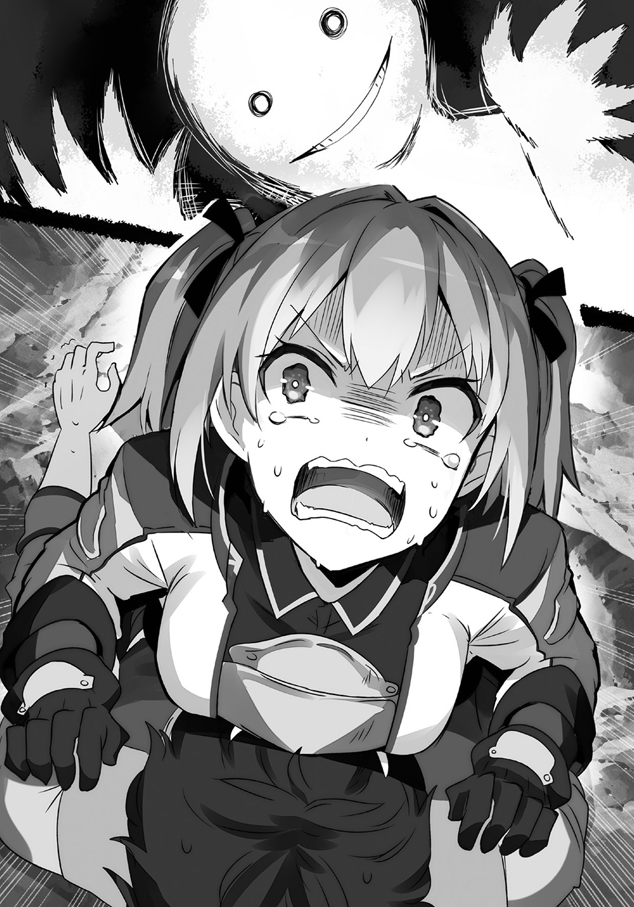
「やっほ、クロウ」
そんなパスティアをほうっておいて、シャリリンはクロウに手を振る。
「助かった」
「呼ばれて飛び出てシャリリンだよ！」
素直な感謝に、シャリリンはいつもの調子で答える。
この場にひっかかったときから、クロウはパスティアと接していない部分から魔錫を放出していた。
シャリリンかアシュリーとうまく接触できればと思ってそうしていたのだが、こうしてうまくいった。
シャリリンは鎧から上半身だけを覗かせている。その様子は足のない幽霊のように見えなくもない。
体が光っているのは、鎧の中にあるキノコが分泌するムチンの効能だ。普通のムチンは光らないが、このキノコのムチンには発光成分があるのだろう。
なんとも便利な話だ。
「ダンジョンのお供に便利な発光シャリリンちゃんだよ。パーティに一人は必須のシャリリンちゃん」
「お前そんなにいないだろ」
「あ、そっか」
「まぁいいや、助けてくれよ」
「はいよー」
気軽い様子でシャリリンの鎧がクロウたちを引っ張り出してくれた。
パスティアはいまだに気絶したままだ。
シャリリンが彼女を興味深げに見下ろす。
「いきなり呼ばれるからなにかと思ったけど、この人誰？」
「剣聖」
「剣聖？」
ああそうかと、クロウは説明した。
王都陥落から戦線離脱していたシャリリンにはわからないだろう。
「王国の騎士だ」
「ふうん。敵だね。殺す？」
簡潔に説明すると簡潔に尋ね返された。
クロウは苦笑いして首を振る。
「殺さない」
「なんで？」
「帝国はもうないんだ。それなら、敵じゃないだろ？」
「あっ、そっか。うっかりうっかり」
「それより、レイニアたちの場所はわかるか？」
「うん、わかるよ」
「じゃ、そこまでよろしく」
「あいあい」
シャリリンはクロウを引っ張って歩く。気絶したパスティアは鎧が担いで二人の後に続いた。
「そういえば、キノコ栽培の方はどうなんだ？」
「まだ研究中。キュライアがずっとキノコ調べてるだけだから、シャリリンはとっても暇」
「そうか」
「でも、キュライアとキノコの話をしてるのは楽しいよ」
「そりゃよかった」
「あと、お友達もできそう」
「良いこと尽くめだな」
「えへへへ～」
シャリリンは本当に嬉しそうに笑う。
地下からの脱出は簡単にできたし、レイニアたちとも安全に合流できた。
気絶したままのパスティアはアシュリーとルーミィが抱え、ミアルの案内で運んでいくことになる。
だが、魔物はまだ倒しきっていないのは気配でわかっている。
「さて、もう一働きしないとな？」
面倒だが、ボスを見つけ出して森から追い出さないことには報酬はもらえないだろうし、そうなると家賃も稼げないのかとジェダが怒るだろう。
その未来を想像するとげんなりする。
働かなくてはならない。
「でも、どうして魔物がこの森に？」
「うーん、それなんだよな」
レイニアの疑問にクロウも唸る。
森に潜んでいる気配からしてけっこうな数の魔物が潜伏しているはずだが、これほどの数の魔物が森の外のどこを移動してきたのか？
新王国の目をどうやって逃れて辿り着いたのか？
「なになに、どうしたの？」
事情の知らないシャリリンに説明しようとしたとき、事態が動いた。
「うん、これは......？」
「どうしました？」
気配だけが動いた。
濃密な気配だ。
視線を動かしている間に、それは白い気体のようなものとなってクロウたちの前で渦を巻き、さらに別の形を作り出した。
それは骸骨だ。
襤褸布をまとった骸骨が突如としてそこに誕生したのだ。
骸骨は顎の骨をカタカタと言わせ、言葉を発した。
「おや、こんなところにいたのか、シャリリン」
まるで似合わない女性の声だった。
「リュナフ様！」
そしてシャリリンが驚いた様子で、骸骨の名を叫んだのだった。
迷宮はゾンビを呼んでいる 06
リュナフという名前にクロウは覚えがあった。
そのダンジョンは王国北部の国境を担う山脈の中にあった。
「見たまえクロウ」
スレイドはそう言って、ダンジョンの入り口である鉄扉の一か所を指さした。その指は震えている。
クロウはそれに少しだけ目をやり、すぐに自分の作業に戻った。鉄扉にかけられた鍵を開ける。ダンジョンに挑む者たちに課せられる最初の試練だ。
「サインが刻んである。リュナフ、だね。この迷宮の製作者の名前だ」
「名前入りって珍しくないか？」
「そうだね。家紋だろうマークはよく見かけるけど、これはおそらく個人名だ。古き魔法使いはダンジョンを造りたがるけど、個人の功は魔法研究でのみ誇る傾向があるからね」
「つまり、相当な自信作ってことか？」
「そういうことだろうね」
「なら、スカウトのしがいがありそうだ」
そのとき、クロウとスレイドは魔錫鬼王を完成させ、魔物の軍団を作るためにあちこちのダンジョンを巡っていた。
今の時代、凶悪な魔物が野外にいることはほぼない。人間との生息圏争いに敗れ、魔物のほとんどは人の入り込まないような僻地に逃げ込んだか、滅んだか、あるいは古き魔法使いたちが趣味と実益と一族の誇りをかけて乱立させたダンジョンに逃げ込んだからだ。
「さて、良い出会いがあればいいがね」
防寒着のフードに包まれたスレイドの顔は青い。ダンジョンの入り口は山脈のかなり高い位置にあった。北方からの寒気を受け止めるこの山脈の頂上付近は一年中雪に埋もれている。
「こんなところにわざわざ造るんだ。試練も相当なもんだろうさ」
「それもあるけど、魔法使いの創造物がどんなものか、君はもう知っているだろう？」
「まぁね」
「まさしく宝探しの気分だね」
鍵が開いた。
「だいぶ慣れたね」
「挑戦者の知識と発想力を試すスライド式魔法陣組み立て錠だっけか？ 面倒なものを考えるよ、まったく」
「しかし、入り口がここまで強固だと流れの魔物はいないだろうね」
鉄扉は自動的に引き開けられ、二人を招く。
「中に強いのがいればいいな」
「外に出せるともっと良い」
話しながら二人でダンジョンへと入っていく。
その道のりは厳しかったが、シャリリンに出会えた。
†
無邪気の権化のようなシャリリンが驚きに強ばっている。
「リュナフ様！」
その名前にクロウは覚えがある。
「ダンジョンの制作者、シャリリンのマスターか」
記憶を掘り返し、クロウは呟いた。
骸骨姿ではどんな感情を宿しているのかはわからないのだが、響く女の声は驚いていたのかもしれない。
「死んだのかと思ったが、まさか支配を脱けてこんなところにいるとはな」
「あははは......ちょっと」
骸骨の言葉にシャリリンは少し困った様子を見せた。
「クロウさん、あの方は......」
レイニアがそっと近づいて尋ねてくる。
「古き魔法使いだな」
最初に魔法を作りだした人々。
その魔法はいまよりも強力で種類に富んでいるというが、そのほとんどは失われている。
古き魔法使いたちはもう何百年も前に滅んだ人々だ。
だが、ときにこのように人ではない姿で現在の人々の前に姿を見せることもある。
骸骨の顔がクロウへと向けられた。
「ふむ......ではもしや、そなたがシャリリンの支配を解いたのか？」
まっすぐにこっちを見た。レイニアもいたのに、迷うことなくクロウを見た。
「あー......支配は解いてないが、シャリリンのいまの上司ではあるな」
「ほう？ うん......なるほど魔錫鬼王か」
「もうわかるのかよ」
遺失魔法とはいえ、この骸骨は魔錫鬼王とはなんの関係もないだろうに。
骸骨はカラカラと笑った。
「それはそうだ。我の専門分野ではないが、他者の研究をそれなりに調べておくのも我の時代では礼儀であったからの」
「へぇ、なるほどね」
「だが、そなたは妾らの血の者ではなさそうだ。では、わざわざ妾らの過去を掘り返し、復活させたのか？ なんとも暇なことをするものよな」
「いや......暇と言われると......照れるな」
「照れるところではないのだがの」
いまのクロウにとっては時間の浪費こそが誉れなのだが、誰もそれを理解してくれない。
「ふふふ、おもしろい奴よ。気に入ってしまいそうじゃ」
骸骨が機嫌良く笑う中、レイニアがおずおずと手を挙げた。
「あの、すいません」
「なんじゃ？」
「もしかして、あなたがこの森に魔物を連れてこられた方ですか？」
「うむ、その通りじゃ」
「どうして、この森に来られたのですか？」
「この地に新しくダンジョンを造ろうと思ってな」
「ダンジョンを？」
「そうじゃ。妾はそなたらの言うところの古き魔法使いだ。妾らは他者に試練を与え、そして報酬を授けることが大好きじゃ。故にダンジョンや塔などを造る」
「そうなのですか」
「それで、じゃ。妾が造ったダンジョンも長い時を経て、攻略され尽くしてしもうたし、シャリリンのような代えのきかぬ有能な者も減ってしもうた故にな、新しいダンジョンを造ろうと思ったのじゃ」
古き魔法使いはダンジョンを造る。
なんのために？ と誰もが考えることだろう。
迷宮を造り、魔物を放ち、宝を配置する。そんなことに一体、なんの意味があるのかと。
だがそれを古き魔法使いはやるのだ。
そして文明として存在を失ったいまでもダンジョンを造ろうと考えるらしい。
ここまで来ると、答えは一つしかない。
文化が違う。それだけだ。
とにかく、古き魔法使いはダンジョンを造りたがる。
「それで......この場所に目をつけた？」
「そうじゃ」
「なるほどな。だからあんな〝らしい〟魔物が見つかっていたのか」
ネイハブから聞いた魔物の発見報告ではコボルトにオークにスケルトン、動く金貨という話だった。
ダンジョン探索ではお馴染みの連中だ。
そしてダンジョン以外ではほとんど見かけない。
そのことから、これらの種族は古き魔法使いの創造物なのではないかと言われている。
（なら、あいつらはこの骸骨の手下か？）
パスティアを追いかけていたときに感じた気配はそういうことなのだろう。
「良い話であろう？ 冒険者も集まり、ダンジョンの収穫品が近くの街を潤すことにもなるのだぞ？」
リュナフは驚くようなことを言う。
いまだに探索が終わらないダンジョン付近では冒険者を目当てにした街が出来上がるという話はある。
だが、そんなことをネイハブが、獣人街が望むだろうか？
いや、望むのなら望めば良いのだが......、それはさておき......。
「良い迷惑だな」
「なんじゃと？」
「ダンジョンがお隣さんってのはさすがに騒がしすぎるわ。場所を変えてくれよ」
「むう......」
クロウの言葉に骸骨が人間らしく唸る。無念という雰囲気がよく出ていた。
あんな姿をしているから忘れそうになるが、古き魔法使いだって元は人間なのだ。
「しかたがない。ならばダンジョンは諦めよう」
意外にあっさりと骸骨は引いた。
だが、その後の言葉がまだこの交渉が難しい局面にあることを教える。
「では、シャリリンは連れていくぞ」
そう言われた瞬間、クロウは眉を少し動かすだけにとどめたが、レイニアとシャリリンがあからさまに戸惑った。
「これは妾が精魂込めて造った名品じゃ。次のダンジョンでも、きっと強敵として目玉になってくれるはずじゃ」
「祭りのお化け屋敷かよ」
考え方がそれに似ている気がした。以前、獣人街に旅芸人一座が帰ってきたが、もっと規模の大きな旅芸人一座だと巨大遊具を持ち運ぶ移動遊園地というものもある。その中の出し物の一つにお化け屋敷というのがあるのだが、リュナフの言いようは、まるでそのお化け屋敷のようだ。
シャリリンがそこにいてくれれば、たしかにダンジョンの攻略は難しくなるだろうし、武名勇名を求める類の冒険者が集まってくるようになるかもしれない。
だけど、そういうものにシャリリンが使われると考えると、なにか面白くない。
シャリリンも驚いた顔をしている。
「なんじゃシャリリン？ なにかあるのか？」
「あ......その......」
「そなたもダンジョンにおる方が楽しかろう」
「う......」
答えに窮すシャリリンに代わってクロウが答えた。
「いや、それも断る」
「なに？」
「そいつはもうおれんだ」
「ほう......」
「そいつはもうおれの魔錫に染まっちまってるからな。いくらあんたが創造主でも簡単には渡せんぜ」
そう言った瞬間、リュナフからの雰囲気が変わった。
ドクロの奥に宿る意思の炎のようなものが明度を増したのだ。
（怒った？）
あれだけ気前よくダンジョンに宝物をばら撒いているくせに、魔物が人のものになるのを嫌がるとは、古き魔法使いにも独占欲のようなものがあるのか？
「では、試練じゃ若者よ」
「え？ きゃっ！」
「わわっ！」
レイニアたちの声で驚いてそちらを見ると、レイニアとシャリリンの二人に紐のようなものが巻きついている。それは二人の動きを簡単に縛ると、リュナフの側へと引き寄せた。
「造りかけじゃがダンジョンはすでにある。若者よ。試練を乗り越え妾の前に辿り着くことができたなら、この娘とシャリリンは返そう」
こちらの返答を待ってはくれなかった。二人を引き寄せたリュナフは、そのまま見えない糸に引かれるようにして森のどこかへと消えていく。
森の中でクロウは一人、取り残されたことになる。
だがクロウの手には糸が一本あった。
魔錫によって作られた真っ黒な糸はリュナフたちが消えた方角に向かって伸びている。
「なんだこの流れ？」
それを握りしめ、クロウは思わず首を傾げるのだった。
†
助けを呼ぶために使った魔錫が、まさか助けに行くために役立つことになるとは思わなかった。
森の浅い場所にその入り口はあった。
「スライド式魔法陣組み立て錠ね。うわぁ、懐かし」
皮肉気味にそう呟き、クロウは鉄扉の中心にあるピースの組み合わせによって解錠するしかけの鍵に挑戦する。
それほど時間もかからず、正解の魔法陣が組み上がり、鉄扉が開く。
「なーんか、こういうのも久しぶりだな」
思い出に唇を吊り上げ、クロウはダンジョンへと足を踏み入れた。
内部はレンガ造りの通路が広がっている。
「この不自然っぷりがなんとも......」
見るからに真新しい空間に、思わずそう呟く。
こんなものが普通の手順で造られていれば獣人の誰かが気付くだろうし、運ばれる建材を王国側が見咎めることだろう。
だがそんなことは一度も起こらぬまま、ダンジョンはその入り口が完成し、おそらくは現在進行形で内部はその深さを増しているはずだ。
そんなこと、現代の魔法使いにはできない。
それほど古き魔法使いは強大で、そして不可解な存在だ。種として滅びていなければ、いまだにこの大陸の支配者は彼らだっただろう。
だが、彼らは滅んだ。
滅んだ理由は謎だが、案外、ダンジョン造りに精を出しすぎたせいではないかと思わないでもない。
とはいえ、ここはダンジョンだ。
「懐かしいな」
思わずそんな感想を抱いてしまう。
レイニアたちを連れ去られ、ダンジョンへと誘われたときは、古き魔法使いの考えがわからなくて首を傾げた。
「普通、その場で戦いにならないか？」
クロウはそう思うのだが、そこでダンジョンへ誘うのが、あるいは古き魔法使いの習わしなのかもしれない。
だが、いざダンジョンを目の前にすると懐古のような感情がわき上がってきて、妙に心が浮き立つ。
「あの頃は二人で苦労したなぁ」
皇帝と二人でダンジョンに潜っていた頃のことを思い出しつつ、ダンジョンを進む。
その歩き方は熟練の冒険者から見たら我が目を疑うほどに......不注意だった。
「なにしろ、どっちも罠を見つけられないからなぁ」
思い返しながらそう言ったまさにそのとき、床のレンガが一つ、クロウに踏まれて沈んだ。
次の瞬間、通路のあちこちからクロウに向かって無数の槍が放たれた。
「おっと......」
雨霰と降り注ぎ、あるいは突き上げてくる槍をクロウはステップを踏むかのような調子で回避する。
「こんなもんかなっと......」
さらに、カチリ。
今度は毒ガスだ。明らかに体に悪そうな緑色の気体を見て、クロウはその場を全力で駆け抜ける。
カチリカチリカチリ。
眼前から矢の雨が迫り来るが、クロウは地面を滑ってやり過ごす。
カチリ。
さらに次の罠だ。
クロウは素早く起き上がり、疾走する。
音が鳴った辺りで天井が開き、そこから大きな岩が落ちてきた。通路にギリギリひっかからないが、人ひとりを潰すには十分すぎる岩がクロウめがけて転がって来る。
カチリ。
そしてガクン。
今度は逃げ切れなかった。
広範囲にわたって床に穴が開いたのだ。クロウは足を掬われ、その下にあった斜めに傾いだ床を転がるはめになる。
できあがった長い滑り台に運ばれ、最後にどこかの部屋に放り込まれた。
「あたたたた......落とし穴に槍も毒もなしか？」
ズボンに穴が空いていないか確かめながら、クロウは立ち上がる。
「前よりはもったな。おやじさん、反射神経はいまいちだったからなぁ」
ぶつくさと零しつつ、クロウは改めて部屋を見回す。
広い部屋だ。だが、狭い。
息が詰まりそうな理由は魔物だ。
コボルトにオークに主人なき鎧、ゾンビにスケルトンにゾンビドッグと魔物だらけだ。
「魔物を惜しまないなぁ。この感じ、たしかにシャリリンがいたダンジョンと同じ雰囲気だ」
あのダンジョンも魔物が豊富だった。
「殺生はそんなに好きじゃないんだけどな......」
言いつつ、クロウは魔錫を放つ。気体とも液体ともつかない濃密な黒が周囲に現れ、やがてそれは一つとなり、剣となる。
「まぁでも、あのダンジョンの通りならあんまり遠慮する理由もないか」
クロウが剣を握ると共に、魔物たちは一斉に咆哮し、襲いかかってきた。
引くことを知らない魔物の波濤を前に、クロウもまた引かない。
「さて、久しぶりのダンジョン探索だ。おれたちなりの流儀で続けさせてもらうぞ」
剣が閃く。
それは速く、強く、荒々しい。
パスティアの生み出した剣の嵐に勝るとも劣らない。
それは剣によって生み出される黒い禍だ。
魔錫によって鍛えられた剣は欠けることも折れることもなく、コボルトを薙ぎ払い、オークの首を泣き別れにし、主人なき鎧を両断する。
ゾンビにスケルトンにゾンビドッグなど、圧力だけでまとめて吹き飛んでしまう。
完全なる破壊がそこに誕生していた。
魔物たちは破壊されていく。その部品が弾け飛んでいく。
だが、血が舞うことはない。
†
その戦いぶりにリュナフは好反応を見せていた。
「ほほう。これはこれは......」
レイニアも戦いの様子を見ることができていた。
部屋の中央に白い靄のようなものがあり、そこにクロウの戦う姿が映し出されていた。
骸骨だからわかりにくいけれど、リュナフはそれを楽しそうに眺めている。
「なんとも類希な猛者じゃな。魔物支配の魔錫鬼王の法をこのように使うのも見事よ」
「......本当なんですか？」
クロウの凄さをレイニアは知っている。
だから彼の強さを目の当たりにしたからといって驚くことはない。
だけど、レイニアは驚いていた。
映像にある違和感に彼女も気付いていたからだ。
すなわち、血が見られない。
「うん？」
「あの魔物たちに生命がないって」
「その通り」
リュナフは隠す様子もなく肯定した。
「生命というか、意思じゃな。妾は植物にも生命は宿るという考え方の持ち主故に」
「............」
「ほほう？ 魔物に同情しておるのじゃな？ 優しい娘よな」
顔をしかめるレイニアにリュナフが笑う。
「妾が研究しておるのは不死の法じゃ。だが、死なぬというのを実現する方法は、決して一つではない。妾は永久に存在する物質というものは信じておらぬ故、永遠に代謝し、更新することによって肉体と精神を維持する方法を考えた」
「それが、......もしかしてキノコですか？」
「そうじゃ。シャリリンから話は聞いておらぬか？」
「聞いてます」
彼女のことはクロウから聞いている。
「この娘もそうじゃし、妾もそうじゃ。妾の体は菌糸の結合によってできあがっておるし、妾が思考の閃きは菌糸によって伝導しておる。いまここにある肉体が滅んだとしても、妾は菌糸の一欠片から復活することができるし、その形も思うがままじゃ」
「では、あそこで戦っている魔物たちも......キノコなんですか？」
「そうじゃな......菌類性模造物とでも名付けようか。いや、簡単に言えば触手か？ 妾から離れた手足......反射によって活動しているだけの存在じゃな」
「そうなんですか......」
正直、リュナフの説明を理解しきれてはいない。
だけれど、あそこでクロウと戦っている魔物たちが意思のない存在だということがはっきりして、ほっとしている。
魔物とはいえ、クロウには不必要な殺生をしてほしくはない。
だが、リュナフはクロウの戦いぶりを気に入ったようだ。白い靄に映った映像をカラカラと骨を鳴らしながら見つめている。
「ああいう強者は、妾らの時代ならばもうダンジョンに入る必要なしと、勧誘するところじゃが、今の時代ではそういうものも必要なし、か。むしろ、ああいう強者専用のダンジョンを造るというのも一興なのかもしれんな」
そんなことを呟き、楽しそうにダンジョン造りの構想を練っている様子のリュナフに、シャリリンが意を決して話しかけた。
「あの、リュナフ様」
「うん？ なんじゃシャリリン？」
その声色に混ざる違いに、レイニアは内心で首を傾げた。
リュナフの話し方は貴族的ではあるけれど、決して高圧的ではなく、むしろ友好的だ。
それはシャリリンに対しても変わっていない。
（だけど、これは......）
もう少し違う気がする。
そんなレイニアの違和感をよそに、意を決した様子のシャリリンが口を開く。
「シャリリンは、ダンジョンには戻りたくありません」
「............なぜじゃ？」
リュナフは威圧していない。むしろ必死に自制しているように感じる。だけど、シャリリンはそんな姿に臆しているように見える。いつもの無邪気な話し方ができていないのが、その証拠だ。
奇妙な関係だとレイニアは首を傾げる。
主人とそれに仕えている魔物。あるいは創造者と被造物。そういう、割り切った関係だけではないものがあるような気がする。
（シャリリンには意思があるから、他の魔物とは違うのはわかりますけど......）
そんなレイニアの違和感は解消されないまま、慌てたリュナフはシャリリンを説得しようとする。
「地上にいたところで、ましてや人の側におったところで、不自由なことばかりであろう？」
「そんなことは......」
と、言いかけてシャリリンの言葉は止まってしまう。いや、反論する隙を与えまいとリュナフがすぐに言葉を浴びせかけてくる。
「不死の法は失敗続きの魔法じゃ。故に失敗の際の惨禍は人々の記憶に強く残った」
失敗というだけならまだしも、その後に続く惨禍という強い言葉がレイニアの胸を押す。
「この地に来て、ゾンビというだけで恐れられたことはないか？」
「うぅ......」
ミアルたちを驚かせた件があるシャリリンは言葉もない。
リュナフはそれみたことかと言わんげに頷き、言葉を続ける。
「残念ながら、そのことで妾は人々を責めることはできぬ。妾は古き魔法使いの血に連なる者、不死の法を研究する者故にな」
『惨禍』『責めることはできぬ』『不死の法を研究する者故』
ああ、なんとも胸に突き刺さる言葉だ。リュナフはなにかひどいことをし、そしてその責任を認めている。帝国が起こした罪をレイニアが感じているのと似たものを感じているのだ。
おそらく、いま現在に伝わるゾンビのイメージに関わっているのだ。
「もはや古き魔法使いが栄華を極めた時代は終わった。不死の法を究めることができた者はほとんどおらず、それ以外の魔法を修めた者たちもわずかな知識を残してこの世を去っておる。妾らの居場所はダンジョンのみよ」
「そんなことはありません！」
気が付けば、レイニアは叫んでいた。
「たしかに、シャリリンさんは最初にやんちゃなことをしてしまったので街の中で暮らすには少し時間がかかるかもしれませんが、無理ということはありません！」
「やんちゃ......？」
思わぬ発言にリュナフは首を傾げる。
まさか、子供たちを相手に首が折れたまま追いかけっこをしたとは思わないだろう。
「でも、それは必ず時間が解決してくれます。そしてなにより、クロウさんがいますから！」
「ほう......」
余裕があるような声だが、骸骨の奥の光は形をとどめないぐらいに揺れている。
動揺しているのだろうか？
なにを動揺しているのか？
疑問の答えはすぐには出ない。だけど、レイニアの信念があるいはこの古き魔法使いの動揺を撃ち抜いてくれるかもしれない。
「クロウさんがなんとかしてくれます！」
彼なら、なんとかしてくれる。
「......なんの根拠があってそんなことを言う？」
「え？」
「あの男ならなんとかできると......どうしてそんなことがわかる？」
「それは......」
レイニアは言葉に詰まってしまう。
明確な根拠を示せと言われると、レイニアにだってそんなものはない。
だけどクロウには、それができるのだ。困っていることを実現できてしまうのだ。父が復讐を成し遂げられたのはクロウがいたおかげだ。レイニアが獣人街に戻ることができたのはクロウのおかげだ。
レイニアが抱え続けている罪の意識を和らげてくれるのもクロウがいてくれるからだ。
だけど......だからシャリリンにもそれができるのか？ その究極的な問いをレイニアが断言してしまっていいのか？
なんだろう？
骸骨から感じるなにかには、軽々しい断言を許さない必死さがあるように思えてならない。
「クロウは、シャリリンに外の世界を見せてくれたよ」
シャリリンが口を開いた。
「あの山のダンジョンにずっといて、シャリリンは外の世界のことをすっかり忘れちゃっていたけど、クロウはそれを思い出させてくれた」
「シャリリン......」
ゾンビ少女の言葉に、リュナフの光がさらに強く揺れる。
「それだけでも、誰もしてくれなかったことだよ。あのダンジョンに何百年もいて、外に出ようなんて言ってくれたのはクロウだけだよ」
シャリリンの告白に、リュナフは無言だった。
答える言葉がないのかもしれない。ただ、骸骨の中の光は揺れなくなった。小さく強く、ぎゅっと押し固めたみたいに光っている。
「この森に来てからもいろいろとしてくれたよ。だけどそれよりも......」
「それよりも？」
「友達ができそうなの」
シャリリンのその一言が張り詰めていたリュナフのなにかを破裂させた。骸骨の中の光が広がり、最初に会った頃の大きさに戻っている。
その顔が魔物と戦い続けているクロウに向けられた。
そして、再びレイニアを見る。
「あの者なら、シャリリンを人々とともに暮らすようにできるというのか？」
「そうです」
「有能なのだな」
「えーと......お金以外のことなら、たぶん、なんとかしてくれます！」
「ふふ......おもしろい！」
その言葉は強かった。
あるいはリュナフ自身、なにかの迷いを振り切ったのかもしれない。
（そうだ、まるで......）
リュナフのシャリリンへの態度は、まるで家族を心配しているみたいだった。
だけど、本当にそうなのだろうか？
「ならばまずは、強き者であることを示すためにもこの試練を切り抜けてもらおう」
答えを聞く間はなかった。
クロウの目の前に、巨大な姿が現れたからだ。
†
なにか、背中がぞわっとした。
いま現在、剣を振り回している状況とは別の場所からなにかを感じとった気がしたのだ。
「あ......なんかしらんが、いま余計な期待をされた気がする」
それはそれとして......スケルトンの骨を踏み砕き、クロウは進む。
踏み砕いたときの感触はまさしく骨という硬さだったのに、思いたって振り返ってみれば、残骸は見る間に崩れていき床の隙間をすり抜けていく。
あるいは、床と同化していっているのか？
「このダンジョン自体もシャリリンと同じ菌糸だってこともあるか？ ......だとしたら、ここはあいつの腹の中ってことだな」
そう考えると慣れ親しんだダンジョンとはいえ、気味が悪いモノのように思えてくる。
「消化器官に入る前に片を付けたいねぇ」
ようやく次の間へのドアの前に辿り着き、クロウは蹴り開けた。
次の部屋も同じぐらいの広さだった。
ただ、天井の高さが違う。見上げるぐらいに高い。
だが、魔物は一体のみ。
その魔物の背後には、一際大きな、そして装飾された扉がある。
いかにも最後の扉、といった様子だ。
「で？ こいつが最後の番人ってことか？」
扉の前にいるのは天井の高さに見合う、巨大さだった。
大人の五倍はあろうかという高さ。だがそれよりも目を引くのはその顔と、上半身......というよりも腕だ。
ぞろりと伸びた髪の隙間から覗くのは目のみだ。
目、目、目......鼻も口もない。ただ、頭部のそこら中に目がある。
そして腕、極端な短足が支える極端に巨大な上半身と肥大し複雑化した肩には大小様々な腕が生えている。
クロウは呆れた。
「百手巨人とか、マニアックだなぁ」
「............っ！」
口がないのかと思ったが、あった。唇のない大きな口が開き、言葉にならない吠え声を放つ。
同時にすぐ側に積み上げられていた岩を摑み、クロウに投げた。
一つ目はうまく避けた。二つ目は剣で切り払った。三つ目は跳んで避け、四つ目はその上を駆け抜けた。
一つ当たれば即死確実の大きさと速度だ。
しかし、たとえそうでも一つずつなら回避はそれほど難しくない。
だが、相手は百の手を持つとまで言われる巨人。
そして投じられる岩なのだが......。
「くっそ......ずりぃ」
巨人の側には二つの岩が積まれた山があり、そこにあるものを摑んで投じてくる。
だが、山はなくならない。使われた岩がすぐにどこからか現れるのだ。このダンジョンがどう造られているのかを考えれば、そのカラクリも同様のものだろう。
神々の争いに荷担し、その勝利に貢献したとも言われる百手巨人の投擲に終わりはない。
勝負に決着が付くそのときまで、岩は無限に湧き続けるに違いない。
「ああくそっ。めんどいなぁ」
飛翔する岩から岩に跳びながら、クロウは嘆く。
そして、問題はそれだけではない。
投じられた岩は背後の壁に衝突し、砕けるか跳ねて転がるか......どちらにしろ後方に残る。
そう、残るのだ。
こちらが生きている限り、おそらく無限に投じられる岩が投げられ背後に残り、だが、巨人の手元にある岩は供給され続ける。
つまり......？
「これって岩が溜まってって逃げ場がなくなるってことか？」
背後の空間はどんどん岩に埋まり、嫌でも巨人に近づいていかなくてはならない。だが、至近で投じられる岩を避けるのは至難の業だ。
時間をかけて倒すことを禁じられている。まさか部屋中が岩で満ちる前に巨人の体力が尽きるなんてことはないだろう。
すでに背後の扉は岩で埋まり、逃げることもできない。
「死にたくなかったら、なんとしてでも巨人を倒せってことか。あー......」
その瞬間、クロウの眼前に岩が迫った。
「めんどい」
クロウの姿が岩に呑まれる。
だが、その次に起こるだろう悲劇は起きなかった。
少年の体が圧倒的な重量と速度によって破裂することはなかった。
なんと岩は、クロウの眼前で止まっていたのだ。
百手巨人の投擲は止まっていない。突如起こった謎の停止に驚くことなく、岩を摑んでは投げを繰り返している。
そして、投じられた岩はクロウの前で停止していく。
「さすがに、百の手を相手するのはめんどい」
空中に停止する岩の数は増えていく。その轟音の中でクロウの脱力した声が呟かれ、かき消されていく。
「だけどな」
クロウの言葉は岩の隙間から、黒いなにかと共に放たれた。
魔錫だ。
紐状に放たれた魔錫は岩を迎え撃ち、砕くのではなく広がって受け止めた。
「手数の勝負なら、おれだって負けちゃいない」
クロウの周囲にあった岩が動く。
そこには無数の魔錫によって岩を摑むクロウの姿があった。
「さあ、ドッジボールをやろうぜ」
次の瞬間、クロウと百手巨人による投擲合戦が起きた。
岩と岩がぶつかり合い、二者の中央で砕け散る。破片が飛散し、落下するよりも速く次の岩がぶつかり、新たな粉砕の衝撃が空間を揺らす。
クロウの周りに溜め込んでいた岩はすぐになくなってしまった。
だが、クロウから伸びる魔錫の手は止まらない。
百手巨人が投じる岩を受け止め、即座に投げ返す。
しかし、百手巨人はそれさえも岩で迎撃し、次の岩を投じる。クロウはそれを受け止め、投げ返すのだが結果は変わらない。
手持ちの岩をなくしたクロウの方が不利に見える。
だが......。
クロウに焦った様子はない。
いつものだらけた雰囲気よりは引き締まって見える表情には余裕の笑みさえ窺えた。
「仕込みはこれで終了だ」
クロウがそう言った瞬間、魔錫の動きが変化した。
その半分が百手巨人からの投擲を受け止める一方で、もう一方が床を広範囲に広がり、あるものを集める。
それは、破片だ。
床に満ちていた大量の岩の破片......石だ。
他の部屋と同様なら、これらのものは壁と同化して消えていただろう。だがいまは時間制限のつもりなのか、部屋に残され、満ちていた。
岩が武器なら、砕けて小さくなった石だって同様だ。
クロウから生えた魔錫の巨大な腕がそれらを浚い、巨人めがけてぶち撒ける。
「こいつは避けられないだろう......がっ！」
大量の石塊の投擲の前では岩を放ることのできる百の手も役には立たない。
ズダダダダダダダダダダダダダダダダダダダダ!!
高速で放たれた石塊の雪崩とでもいうべき現象を前に、百手巨人は為す術もなく倒れるのだった。
「あー、やっと終わったか」
魔錫を収めると、クロウは一気に脱力し長い息を吐く。
しかしまだ、次なる問題が眼前に聳えている。
「これ撤去しないと、次の部屋に行けないな」
扉の前を埋め尽くす岩と石の山を前に、クロウはため息を零すのだった。
†
ようやく扉を開けると、そこにはテンションの高い骸骨がいた。
「素晴らしい！」
こちらに駆け寄ろうとしていたレイニアとシャリリンを押しのけ、なんと骸骨がクロウに抱きついてくる。
「おおう？」
わけがわからない。
わからないが、なんとなく面白そうだからこのままにしておこう。
殺気もないので、クロウはされるがままにされておくことにした。
啞然としている二人の前で、リュナフはクロウの頭を撫で繰り回す。
「これほど素晴らしい戦士はなかなかお目にかかれぬ。ナルシガの狼王やグロウワヌ鉄塊王に匹敵する戦士だ」
「......そりゃ、どうも」
知らない名前ばかりで反応に困る。おそらく古き魔法使いの時代の英雄なのだろう。
「妾の時代ならその強さだけで王になることができるぞ。どうじゃ？ 妾と組んで王にならぬか？」
「いやぁ......滅亡経験あるんで、そういうのはもういいや」
「なんじゃ、若いのに経験豊富じゃの。なら、妾のダンジョンでボス役などするか？ 冒険者が辿り着くまでは暇じゃが、強者との戦いが楽しめるぞ」
「暇？」
思わぬ単語にクロウが反応する。
たしかにダンジョンのボス役ともなれば、しかも高難易度ダンジョンのボス役ともなれば到達できる冒険者の方が少ない。
つまり、ずっと出番がないということだってありえるわけだ。
「三食昼寝付きか？」
「それはもちろんじゃな」
「ううむ......」
「だめです！」
「だめっ！」
悩んでいたらレイニアとシャリリンが同時に割り込んできた。
二人の腕がリュナフからクロウを引きはがす。
「クロウさん、変な誘惑に乗らないでください！」
「むむう......すまない」
レイニアに責められ、クロウははっと我に返った。
リュナフが心外だと腹を立てる。
「なんじゃ、誘惑などしとらんぞ？ 誘惑というなら」
そう言うや、いきなり骸骨が変化した。
骨の体を隠していた襤褸布が全身に張りつき、そして変化した。
肉がつき髪が生え、生きた人間の姿となった。
しかも女性。
しかも裸。
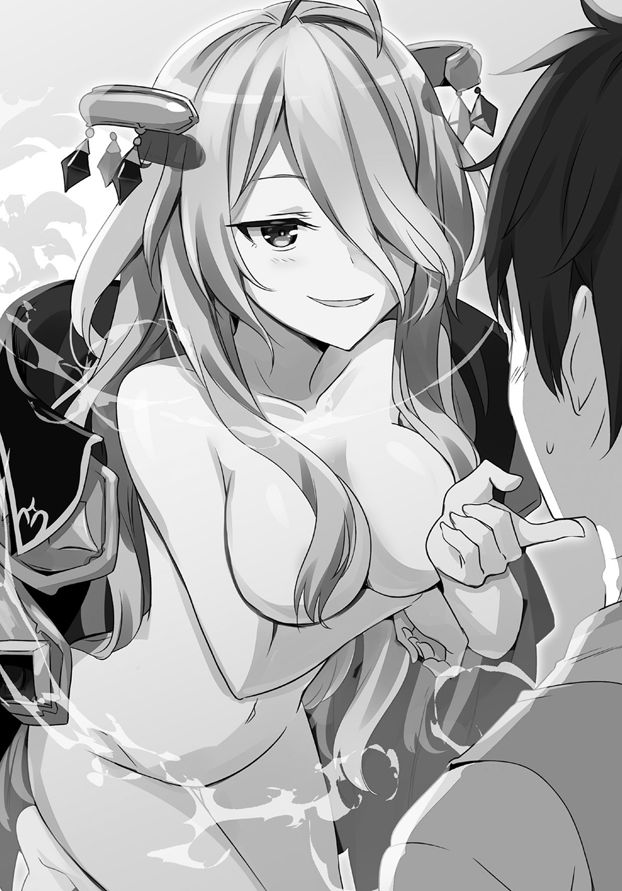
しかもけっこうな魅惑体型だ。
「こういうのをいうものじゃろう？」
「うおおおお......」
眼前に迫る大迫力の桃色山脈に、さすがのクロウも言葉が漏れる。
レイニアまでも言葉もなく立ち尽くす中、シャリリンは目を丸くしてクロウの態度に驚いている。
「リュ、リュナフ様」
「シャリリンよ、覚えておくのじゃぞ。男というものはこうやって誘惑するのじゃ」
「は、はい！」
「それはだめです！」
いそいそと脱ぎ出すシャリリンを、レイニアが慌てて止める。
その光景を見ていて、クロウはいきなり思い出した。
「......あっ」
シャリリンと再会したときのことだ。ジェダの遣いでレイニアとともに森に入って、はぐれて、諦めて寝ていたときのことだ。
そのときに出会った。
圓樹王の寝床で本当に出会っていたのだ。
「どうしたのじゃ？ クロウ」
「やられた......」
額を押さえ、クロウは思い出した記憶を再生した。
『まあよい。どれだけ強情を張ろうと、我とこの森に住む者との契約からは逃れられぬ。働いてもらうぞ、黒騎士よ』
『古き魔法使いがこの地にダンジョンを築こうとしておる。迷惑な話よ。たとえ地下といえど、神の領土に入ることは許されぬ』
『クロウよ。この地に住みし者の契約として圓樹王の命を受けよ』
『断ることは許さぬ。逆らうのも無駄なことよ』
『運命はすでに我の手の内だからな』
そう言って少年は笑っていた。
そうだ。おそらくはこの少年が圓樹王だ。
圓樹王はリュナフの行動を知っていた。
そしてリュナフのダンジョン造りを諦めさせるためにクロウを利用したということなのか。
眠りから覚めたシャリリンをこの森に導き、クロウと再会させたのか。
シャリリンを巡ってクロウとリュナフが争うことをすでに見越していたということか。
運命を握るとは、そういうことだろう。
（つまりは、だ）
クロウを働かせたのだ。
おのれ......クロウとしては呻くしかない。
「このおれを働かせるとは、おのれ神め」
「なに、神じゃと？ ふん、そういうことか」
クロウのその呟きだけで、リュナフは理解したようだ。
クロウから離れ、髪をかき上げる。その動作の間に彼女の体は服に包まれた。さっきまでの襤褸布ではない。黒絹に金の刺繡を施した艶やかな法衣だ。
「ならばしかたあるまい。ここでのダンジョン造りは諦めるか」
「いいのか？」
「地主に嫌な顔をされてはな」
「引っ越しかよ」
あまりにも軽い言い方にクロウは呆れる。
「なにか違うか？」
しかし、リュナフが首を傾げる姿を見ていると古き魔法使いにとってはその程度の軽さのことなのかもしれない。
「まっ......なにはともあれ、これで落着か」
すっきりとしない部分はあるが、終わってしまえばそれでよしと割り切るしかない。
「それで、妾の誘いの件は......？」
「さっき諦めたって言っただろう？」
「ここがだめでも。他で造れば良いからな」
やはり当たり前のように言う。
新しいダンジョンを造られてしまう周辺の人々は不便だが、クロウにしてみれば自分に厄介事が舞い込むのでなければなんでもよしだ。
伸ばされた誘いの手をクロウは断った。
「残念だけど、ダンジョンにはいけないな」
すぐそばにはレイニアとシャリリンがいる。
「おれは引く手数多のヒモなんだ」
エピローグ
ラスティーユ新王国の王都はいまだ復興作業が終えていない。
中心に聳える王城は奪還の際に火に包まれてしまい、その延焼による被害も無視できない。それだけでなく攻め込んだ際に破壊してしまったものも各所にある。
奪われたときよりも、取り戻した時の方が被害が大きかったというのは皮肉な話である。
そんなわけで、燃え落ちてしまった王城の再建は後回しにされ、いまは街の復興に力がそそがれている。
また、そういう理由で国の主が執務する場所も王城にはない。
代わりに皇帝の粛正によって主人を失った貴族の屋敷に彼女の姿はあった。
彼女の名はヒルメリア・タチア・ラスティーユ。
ラスティーユ新王国の女王だ。
丁寧に梳られた金髪は美しく、その表情は高い教養と愛嬌を兼ね備えた不思議な魅力を湛えている。だが、彼女を飾る衣服はあくまでも質素だ。王冠を模した髪飾りだけが唯一の装飾品といえるほどに。
「それで......どうでした？」
そんな彼女は執務室として使っている書斎で、旅塵に塗れた男から報告を受けていた。
ここにルーミィがいれば、男があの人探しを名乗っていた人物だとすぐにわかっただろう。
「自分の目で見ることはかないませんでしたが、陛下のお言葉通りのものが彼の者の背中にあるとのことです」
「そうですか」
その言葉に、ヒルメリアは深く息を吐いた。
報告した男は、自分が持ち帰った情報になんの意味があるのかはわかっていない。難しい顔で俯くヒルメリアの言葉を待って、静かに艶の良い絨毯を眺めるのみだ。
この屋敷の元の持ち主は篤実で倹約家という噂だったのだが、それでもこの書斎は女王の質素な衣装を場違いに感じさせるほどに豪華だ。しかも、調度品の幾つかを売り払ってもなお、この部屋の空気は変わることを拒んでいる。
かつての王国がどれほどに富んでいたか......もう帰ってこない過去のことに男でさえも想いを馳せてしまう。
「ご苦労様です」
しばらくしてヒルメリアがようやくその言葉を口にした。
どうやら続いての指示はなさそうだと判断し、男はさらに深く頭を垂れる。
だが、このまま退室を命じられる前に、もう一つの報告も済ませておく。
「それと、やはりパスティア様は獣人街におられました」
「わかりました。下がってよいですよ」
「はっ」
その報告にヒルメリアは迷うことなく頷き、男を退室させる。
扉が閉じると、息を吐く暇もなく次のノックが響いた。
入ってきたのは女性だ。
ヒルメリアから愛嬌を除き、知性に深みを与えると彼女になるだろう。
彼女の名はウルミヒアという。新王国の宰相を務める女性だ。
双子と見紛うばかりにそっくりだが、二人は姉妹ではない。血もそれほどに近くはない。王国が長い歴史を持っていたため、ほとんどの貴族に王家の血は入り込んでいる。その果てに起きた偶然の悪戯がこの二人を姉妹以上に似せた、と考えるしかないだろう。
部屋の外で待機していたにもかかわらず、ウルミヒアは全てを承知している顔で頷いた。
「パスティアの件に関しましては、すでに彼女の家に仕送りすることを禁じました」
「兵糧攻めね。かわいそう」
手回しの良さにヒルメリアは微笑を浮かべる。無邪気なパスティアが困り慌てふためく様がすぐに想像できて、微笑ましい。実害を受けるパスティアにとってみれば微笑ましいでは済まないだろうけども。
しかし......と、ヒルメリアは微笑みの後に首を傾げた。
「彼女、それで帰ってくるかしら？」
付き合いの期間は短くとも、その深さには自信のある二人だ。パスティアがどんな人物かは十分に承知している。
「難しいでしょう。ですが、なにもしないままでは怪しまれますので」
「そうかもしれないわね」
ヒルメリアは嘆息する。
『目的地がわかると帰り道を忘れる』
パスティアをそう評したのは、目の前にいるウルミヒアだ。
だがいまはパスティアに帰り道を思い出してもらわないといけない。
「それに、彼女にはいま王都にいてもらわなければ困ります」
「............」
その言葉にヒルメリアは表情を暗くする。
ウルミヒアは少しばかり後悔はしたが、この事実を忘れられても困る。
新王国は問題が山積みなのだ。
優先順位をつけて片付けていかなければならない。
そしていま、一つの問題の順位について考えなくてはならない事態が発生している。
「しかし、面倒なことになりました」
男からの報告がそれだ。
ヒルメリアが表情を改め、頷く。
「ええ......まさか、あのときにされたお願いがこんな形になるなんて」
「どうなさいます？」
「......いまはまだ誰にも知られてはなりません」
「わかっています。ですが、このままにしておくわけにもいきません」
そう......このままにしておくわけにはいかない。
「ええ。見つけてしまった以上、いずれ他の者の目に触れてしまう。そうでしょう？」
「はい。とくに彼らに先んじられるわけにはいきません」
こちらが手をこまねいている間に、他の誰かの手が伸びてしまうわけにはいかない。
だが、それにしても難しい問題だ。
解決策はウルミヒアでさえすぐには浮かばない。
「......まずはパスティアを引き離しましょう。いまなら、彼女を帰らせるために手を打っているように思われるはずです」
「............わかりました」
情報を隠蔽するためのやりとりを済ませ、ウルミヒアが執務室を出る。
自分には似合わない部屋に取り残され、ヒルメリアはため息を零す。
「恨みますよ。スレイド」
その呟きは王国貴族を代弁しているようであり、だがその実、そうではない。
しかし、そのことを知る者は、いない。
あ と が き
というわけで二巻でございます。
雨木シュウスケです。
書店でこの本をお手に取られて、先にあとがきを読まれる方へ。
本作は主人公の黒騎士ことクロウが、がんばった末にこれ以上は働かないことを誓い、元姫やメイドにお世話をされてダラダラと生きることを目指す自堕落日常系ファンタジーです。
主人公は引きこもりのヒモのニートです。どうかそのことをご承知になられた上で一巻とともにお買い上げくださいませ。
そんなわけでして......。
一巻に引き続いてのグータラっぷりですが、新キャラクター、シャリリンの登場でいろいろと動きがあったりします。
ちゃんとレイニアやアシュリーたち一巻のキャラクターたちも活躍しますので、ご心配なく。あれやこれやとしております。
そういえばＮｉｎｔｅｎｄｏ Ｓｗｉｔｃｈが発売されましたね。
雨木は買えるときに買えればいいやという感じで予約しなかったんで、発売日には買えませんでした。
いやまぁ、正直言うと地方に住んでるんで予約しなくても買えるだろうと思ってたのもあるんですが......。
うん、甘い考えだったみたいですね。
『スプラトゥーン２』までには買えればいいなぁ。
他社の宣伝になりますが......。
今月はファンタジア文庫でも『クラウン・オブ・リザードマン』という作品が発売されます。ＭＭＯＲＰＧを題材にしたシリアスな青春バトル物となっています。
他にも講談社ラノベ文庫にて『魔女と魔城のサバトマリナ』が発売されています。こちらは初恋を題材にした現代舞台の異世界探索物です。矛盾してるようですがそういうことなのです。
どの作品も精魂込めて作りましたので、どうぞよろしくお願いします。
それでは、イラストの伍長さんと担当さん他、この本の制作に関わった全ての方に感謝を。
次巻でお会いできれば幸いです。
今回はショートショートもありますのでそちらもお楽しみください。
雨木シュウスケ
スペシャルSS 黒騎士くんは留守番する
「さあ、勉強の時間だ。クロウくん」
日よけのターバンの下でスレイドは青白い顔をしていた。
旅から旅への生活を続けているというのにいつまでも肌は白い。そのおかげで強い日差しに弱いのだ。
スレイドの指した先を、クロウは見た。
「あれはなんだと思う？」
二人は街道を歩いていた。二人の旅では普通の街道を進むことは非常に珍しい。
「森？」
「そう、森だ」
クロウたちの進む先には視界いっぱいに広がる木々の光景がある。
「この辺りでは大森林と呼ばれている森だよ。古くは『偉大なる圓樹の加護ありし領域』と呼ばれていたようだけど、まぁ、いまは簡単に大森林だよ。こんな大きな森は西部地方には他にないからね」
「で、あそこになんかあるの？」
「うん、ちょっとね」
スレイドは少し言いにくい顔をした。
「ダンジョン？」
「ダンジョン......は、ないね」
「魔物の群れでもいるの？ ボスと交渉？」
「ああ......そういうのでもない」
「愛人？」
「僕は奥さん一筋だよ」
「じゃ、なに？」
クロウは首を傾げた。
魔錫鬼王が完成してからは魔物集めに奔走する日々だ。そんな中で、どうしてこんななにもない森になど来たのだろう。
「ああ、いつもならこういうとき、君はロウワヌのところに預けておくんだけどね」
「師匠......なんだっけ？ なにか用があるとか言ってたね」
「あの人、用があるときは必ずはずせない用だからね。だからここまで連れてきたんだけど」
「なにか問題が？」
「この大森林は入るのに手続きがいるんだ。ただの手続きでなくて神との契約だ。僕ではどうしようもない」
「つまり、おれは留守番ってこと？」
「そうなる」
「ん、わかった。ならここら辺でキャンプでもしてるよ」
「すまないね」
そう言って、スレイドは森に入っていく。
結局、なんの用事があって森に入るのかは訊かなかったが、クロウは気にしなかった。さっそくテントを張り、焚き火の支度をする。スレイドに預かっている書物を見繕うと木陰に座ってそれを読む。
たまに街道を馬車の列が走り抜けていく。商人たちの荷馬車もあるし、旅行者を運ぶ定期便もある。歩きの旅行者は見かけなかった。歩いていたのは羊を率いる牧童くらいだった。
彼らはちらりとクロウに視線を向けるが、それきりだ。徒歩の旅行者もそれほど珍しくはないということだ。
空が茜色に染まりだしたころ、クロウは火を熾し、湯を沸かした。
異変が起きたのは、紅月が雲に隠れたときだ。
「うん？」
馬の足音と車輪の絡む音が不穏な轟きで近づいてきた。
四頭引きの馬車だ。目を凝らすが御者席には誰もいなかった。
「やばい空気だな」
そうは思うが、さてどうするか？ という考えはすぐに浮かばなかった。これまで人助けをしたことがないわけではないが、積極的に行ったこともない。
そんなことを考えている間に、馬車はすぐそばまでやってきた。
馬車の窓から人が覗いた。目があった。
女の子の目だ。曇天の夜を溶かすような碧色の瞳だった。夜を撥ね除ける金色の髪だった。
体は勝手に動いた。
掌から伸ばした魔錫が馬車の屋根にひっかかり、クロウの体をその場所へと釣り上げる。爆走する屋根の上に立ち、クロウはどうしてこうなっているのかを改めて確認した。
御者はやはりいない。
そして、背後から追いかけてくる者たちがいる。馬に乗っているのだが、その身なりはよくはない。少なくとも、四頭引きの馬車に付き従うような身なりとはとうてい思えないし、弓や斧を構えて追いかけてくる正当な理由が思いつかない。
「山賊？ ......に、しては良い馬に乗ってる気もするが」
疑問に思いつつも、クロウは動きを止めなかった。
糸状の魔錫を馬の数だけ放つ。闇夜に溶ける魔法の糸は馬車を狂奔して引き続ける馬の首に刺さるとその気持ちを落ち着けた。
逆に、追っ手側の馬は興奮し速度を上げ、騎手が次々と振り落とされていく。
「呑気に武器なんか構えてたら当然だ」
馬車の上でクロウは笑った。
だが、その笑みはすぐに引っ込んだ。
「うん？」
乗り手を捨てたことで、馬が足を止めたり違う場所に走っていったりする中、ただ一つだけこちらに近づいてくるものがある。
影だ。曇天の闇に埋没する影が、存在感となってこちらに迫ってくる。
背中がぞくっとする。やばいという言葉とともに、自然と笑みが零れる。クロウの手に魔錫が集い、剣となる。
跳んだのがわかった。クロウの眼前で影を引き連れて舞い上がる。飛翔はクロウを越え、馬車の直上に至り、突如として急降下した。
「無視かっ！」
クロウを無視して馬車ごと中の目標を潰すつもりだ。
そう察知するや、クロウは剣を上に向け相手の落下点に移動する。足から魔錫が解き放たれる。四方八方に伸びた魔錫は馬車を囲む籠となり、地面に突きたち、クロウの体が浮いた。
影から姿を現したのは巨大な鎚だ。
それが、振り下ろされる。クロウの剣と衝突する。凄まじい圧力が全身にのしかかるが、旅で鍛えた筋力と魔錫がそれを受け止める。それでも馬車の屋根に衝撃が届き、陥没する。馬車の中から悲鳴が聞こえたが、死ぬようなものではないと割り切る。
それよりも。
受け止めた。受け止めてやった。
「へへっ」
少年の口からしてやったりの笑みが零れる。影を布のように纏った正体不明のそれは隙間から鋭い視線を飛ばしてきた。燃えるように赤い瞳だった。怒りに満ちたその目と睨み合っていると、さらに別の音が聞こえてくる。
新しい馬の足音だ。
「どっちの援軍だ？」
呟いたときには鎚が引いた。相変わらず影を纏ったままのそれは、地面に降りてもまだ睨んでいたが、馬の音がさらに近づくと夜の闇に引いていく。
どうやら、足下の馬車の援軍のようだ。
「終わったみたいだぜ」
とりあえず、馬車の中身に声をかけてみる。
「......助けてくださったのですか？」
馬車を降りると、中から声が聞こえてきた。さっきの衝撃で壊れた窓から少女の顔が覗いている。
雲が流れ、紅月も姿を見せた。薄らいだ夜闇の中でその金髪は美しく。幼く丸みを帯びた顔はかわいらしかった。大きな瞳を彩る碧は怯えに揺れながらクロウを見下ろす。
「成り行き？ 興味本位？ まぁそんな感じで」
少女に見惚れたのは一瞬、クロウは頭を搔きながらそう答えた。
「あんたの援軍が来たみたいだ」
「え？」
「じゃっ、そういうことで」
「あ、あのっ！」
少女が慌てて馬車から出ようとしているが、クロウはかまうことなくその場から去る。街道を避け、闇に溶けると騎手たちはクロウに気付くことなく馬車に殺到した。
「姫っ、ご無事で!?」
騎手の誰かがそう叫んでいる。やはり、馬車に相応しい身分だったようだ。
クロウは元の場所まで戻ると、消えかけた火に枯れ枝を足し、読書の続きに戻った。
昼前にスレイドは戻ってきた。
「ごめんごめん、待たせてしまったね」
「いいよ。暇はそんなにしてなかった」
「そうなのかい？ 騒ぎは......起きてないよね？」
「おれは起こしてない」
含みのある言い方にスレイドは困った引きつり笑いを浮かべた。
その背後に誰かが隠れているのはわかっていた。スレイドの細い体では隠せない。ひょっこりと顔を覗かせてこちらを窺う少女に、クロウは目を見張った。
美しい金髪に碧色の瞳。昨夜の少女に似ている気がした。
「ああ、この子は......その......」
「なんでもいいよ。その子も来るの？」
だけどそれもまた、すぐにどうでも良くなる。クロウの目にあるのはスレイドの進む先にあるものはなにか、ということだけだ。進む先にそれがあるのなら、旅を続けるし剣だって学ぶし、魔錫を手に入れる。魔導書だって読むし、軍略書だって読む。必要も不要も関係ない。問題なのは、それが眼前にあり続けるものかどうか、それだけだ。
スレイドはそんなクロウに微笑み、少女の頭に手を置いた。
「いいや。この子はここに残る」
「そう」
哀しそうにスレイドを見上げる少女の光景が、馬車から助けを求める少女の姿と重なった。あの夜、どうして自分は動いたのだろう？
疑問は解消されない。
そしていまは、この少女になにができるのか？
それもまた、わからない。
「それなら行こう」
だけどおそらく、この少女は自分の眼前にはいない方がいい。それをスレイドも望んでいる。
それだけはわかった。
森へと戻る少女をスレイドは見送る。だけどクロウはそれを見なかった。
著者紹介
雨木シュウスケ あまぎ しゅうすけ
広島県出身。クロウのようにグータラしたいと願いつつ、しかしグータラするための条件が満たされていないと頭を抱える貧乏性。グータラするにも才能がいるのだなぁ。
illustration
伍長 ごちょう
北海道釧路市出身、横浜市在住の絵描き。
ついに「人生の中で一番長く住んだ都市」が横浜市になってしまいました！ これからも横浜の海を眺めつつ生活出来たらいいなー。
ダッシュエックス文庫DIGITAL
黒騎士さんは働きたくない２
著者 雨木シュウスケ
© SYUSUKE AMAGI 2017
２０１７年５月31日発行
この電子書籍は、ダッシュエックス文庫「黒騎士さんは働きたくない２」
２０１７年４月30日発行の第１刷を底本としています。
発行者 鈴木晴彦
発行所 株式会社 集英社
〒１０１－８０５０
東京都千代田区一ツ橋２丁目５番10号
０３－３２３０－６０８０（読者係）
制作所 株式会社ＩＣＥ
本作品の全部または一部を無断で複製、転載、改竄、インターネット上に掲載すること、および有償無償に関わらず、本データを第三者に譲渡することを禁じます。なお個人利用の目的であっても、コピーガードを解除しての複製は、法律で禁じられています。